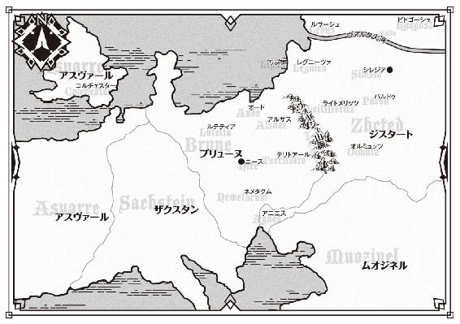

| 魔弾の王と戦姫〈ヴァナディース〉15 (MF文庫J) | |
| 川口 士 | |
| KADOKAWA / メディアファクトリー (2016) | |
魔弾の王と戦姫15
川口 士

本作品の全部または一部を無断で複製、転載、配信、送信したり、ホームページ上に転載したりすることを禁止します。また、本作品の内容を無断で改変、改ざん等を行うことも禁止します。
本作品購入時にご承諾いただいた規約により、有償・無償にかかわらず本作品を第三者に譲渡することはできません。
本作品を示すサムネイルなどのイメージ画像は、再ダウンロード時に予告なく変更される場合があります。
本作品の内容は、底本発行時の取材・執筆内容に基づきます。
本作品は縦書きでレイアウトされています。
また、ご覧になるリーディングシステムにより、表示の差が認められることがあります。

１ 示される道
昼からはじまった祝宴は、日が暮れてもなお盛況だった。
数十日に及ぶ攻防戦を耐え抜き、敵の撤退を確認してからの宴だ。平民も貴族も関係なく、誰もが感情を爆発させて勝利を祝い、平和に酔いしれた。
城下では蜂蜜を塗った菓子と果実酒が振る舞われ、人々は思い思いに歌い、踊り、英雄たちを讃えている。夏の終わりの涼やかな風が、王都をかろやかに吹き抜けていった。
リュベロン山の中腹にそびえる王宮の広間では、盛装に身を包んだ人々が談笑していた。点在するテーブルは次々に運ばれてくる酒と料理で埋まり、片隅では楽団が会話の妨げにならぬよう静かな音色を奏でている。
外を見れば、空が暗くなりはじめているにもかかわらず、広間は集まった人々の熱気で暑いほどだ。
「──化粧というものは、つくづく面倒だな」
その広間へと続く長大な廊下を歩きながら、エレオノーラ＝ヴィルターリアはそっとため息をこぼした。ジスタート王国が誇る戦姫のひとりで、親しい者からはエレンという愛称で呼ばれている。現在十八歳。
彼女は、いつもはそのまま流している白銀の髪を後頭部で丁寧に結いあげ、銀細工や真珠を随所にあしらった純白のドレスをまとっていた。左腕に、狩人が彫られた銀色の腕輪をしている。凜々しさを帯びた美しい顔には、うっすらと化粧がほどこされていた。
「ですが、化粧がまだら模様になっている顔を見せては、かえって失礼でしょう」
エレンの半歩後ろを歩く金髪の女性が、穏やかな口調でなだめる。エレンの副官を務めているリムアリーシャだ。彼女はエレンの親友でもある。主より三つ年上の二十一歳で、エレンをはじめとする何人かからはリムという愛称で呼ばれていた。
彼女はドレス姿ではなく、武官としての正装に長身を包んでいる。頭の左側で髪を結んでいるのも普段と変わらない。しかし、その顔には主と同様、わずかながら化粧をほどこしていた。
二人はさきほどまで何人かの知人や友人と歓談していたのだが、化粧が崩れてきたので仕方なく席を外し、すばやく直してきたのだ。
広間に入り、歓談をしていたところへ戻ると、三人の娘が何やら楽しげに話していた。エレンと同じくジスタートの戦姫であるリュドミラ＝ルリエとソフィーヤ＝オベルタス、そして、ティグルヴルムド＝ヴォルンの侍女であるティッタだ。三人とも、エレン同様に美しく着飾っている。
リュドミラはエレンと同じく十八歳。ミラという愛称を持つ彼女は、青い髪を結いあげ、袖口に金色のリボンをあしらった水色のドレスをまとっている。胸元を飾る紅玉は、ドレスの水色とあいまっていっそう輝きを増していた。
ソフィーヤは二十二歳。ソフィーという愛称で、エレンたちからは呼ばれている。ゆるやかに波打つ金色の髪を、白い花を使った髪飾りで結んで肩から流し、背中を大胆に開いた薄緑のドレスを身にまとっていた。
ティッタは、この五人の中では最年少の十七歳だ。少し前までは愛らしい童顔をしていたが、最近は頰のあたりがすっきりして年齢にふさわしい美しさを備えつつあった。
栗色の髪は頭の後ろでまとめ、薄紅色のリボンで結んでいる。まとっている赤色のドレスは肩から胸元にかけて露出しており、最初に見たとき、彼女は顔を耳まで真っ赤にして拒んだものだった。エレンに強く勧められて、おもいきって身につけたのだ。
そうして勇気を出した甲斐は、あった。自分が着飾った姿を見せたかったほとんど唯一の相手に「きれいだよ」と言ってもらえたのだから。
三人の顔を順に見ていったあと、エレンは首をかしげてソフィーに聞いた。
「ティグルはどうした？」
ティグルヴルムド＝ヴォルンの愛称である。エレンとリムが席を外す前、ここには彼女らに加えて彼もいたのだ。
エレンの質問に、ソフィーは離れた方へと視線を向ける。
彼女の視線の先では、礼服姿のティグルが、五、六人ほどの着飾った男女に囲まれていた。あまりおもしろくなさそうな顔で、ミラが事情を説明する。
「ブリューヌ貴族の方々が、ぜひ挨拶させてほしいんですって」
「英雄の大変なところね。もう戻ってこれないんじゃないかしら」
ソフィーが残念そうな笑みを浮かべた。ティグルと言葉をかわし、交友を深めたいと思っている者は彼らだけではないはずだからだ。
今年の春にはザクスタン軍が、夏にはムオジネル軍が、それぞれ大軍を擁し、ブリューヌの富と大地を狙って攻めよせたが、いずれもティグルによって退けられた。また、レギン王女の命を狙って叛乱を起こしたメリザンドを阻止したのも、この若者である。
「その武勲、比肩する者なし」と、吟遊詩人たちは唄ったが、それは多くの人々が抱いている認識でもあった。
この祝宴はブリューヌの勝利と、訪れた平和を祝うものである。ブリューヌの統治者であるレギンとともに、ティグルが主役になるのは当然のことだった。
エレンは何も言わなかったが、不満を抱えた子供のように目を細め、口元をわずかに歪めて白銀の髪をいじる。ティッタがなぐさめの言葉をかけた。
「明日になれば、またお話しすることができますよ」
「──そうだな」
エレンは笑顔をつくって、ティッタにうなずいてみせる。自分よりも年下の彼女が我慢しているのだ。自分が不平をこぼすべきではないだろう。
「だが、私はともかく、ティッタはあの中に割りこんででも、ティグルのところへ行くべきじゃないか。おまえの艶姿をいま一度、あいつの目に焼きつけてやれ」
ひとの悪い笑みを浮かべて、エレンがけしかける。ティッタは頰を紅潮させて胸元を両手でおさえ、うつむいてしまった。その表情を覗きこむと、いやがっているというわけではなく、緊張と恥ずかしさで声も出ないというところらしい。
エレンとティッタには、ひとつの共通点があった。ティグルに想いを告げられ、それを喜んで受けいれた者であるということだ。
現在のティグルは──そこに至るまでにさまざまな経緯や葛藤があったにせよ──自分が複数の女性を愛する女好きであることを自覚している。
エレンも、ティッタも、そのことを含めてティグルを愛していた。そして、おたがいを認めあっており、相手を出し抜こうというような競争意識とはいまのところ無縁だった。
ソフィーの言葉通り、彼らとの談笑が終わっても、ティグルがエレンたちのところへ戻ってくることはなかった。入れ替わり立ち替わり、誰かがティグルに声をかけては何人かで囲み、ある者は丁寧に、またある者は仰々しく挨拶をする。
エレンたちも、談笑しながらティグルが戻ってくるのを待つというわけにはいかない。ジスタートにおいて、国王に次ぐ存在である戦姫が三人もいるのだ。
リムも、ムオジネルとの戦いにおける勇戦ぶりが知られており、ティッタはティグルの侍女というだけでなく、レギンからも信頼されている。何より皆、若く美しい。
彼女たちが人々の注目を集めていないはずはなく、ひとりの騎士が勇気を奮い起こして話しかければ、あとは我も我もと貴族諸侯が声をかけてくる。
エレンたちが解放されたのは、たっぷり一刻半ほどの時間が過ぎたころだった。
そして、エレンが気づいたとき、ティグルは広間から姿を消していたのである。
リュベロン山の中腹に建てられたからということもあり、ブリューヌの王宮には庭園が多い。季節の花が色とりどりに咲き誇る場所もあれば、芸術家たちが腕を競ってつくりあげた石像の並ぶ静かな一画もある。
それらの庭園のひとつに、ティグルはいた。白い絹服の上に、黒を基調とした上着をまとっている。くすんだ赤い髪は香油で整えられていたのだが、ここにたどり着いたとき、つい癖で頭をかきまわしてしまったため、いつも通りに戻っていた。
ここはリュベロン山の自然を可能なかぎり残した場所で、ゆるやかな斜面に沿って木がそびえ立ち、茂みが広がっている。宴の喧噪も、ここまでは聞こえてこない。
ティグルは礼服のまま斜面に寝転がって、空高く昇っている月を眺めていた。月明かりに照らされた顔には疲労の陰りがある。
このまま眠ってしまいたいと思う。夏の終わりとあって、涼しくはあっても寒いというほどではない。風邪をひくことはないだろう。
ティグルがここでこうして休んでいるのは、マスハス＝ローダントの配慮によるものだった。ひとが呼んでいると言って、若者を広間から連れだしてくれたのである。
マスハスは王宮の重鎮であるというだけでなく、ティグルが全幅の信頼を寄せている人物だ。彼の言葉を疑う者はいなかった。
「もう少ししたら、戻るべきだろうな......」
広間には、まだティグルに挨拶をすませていない者が数多くいる。億劫ではあるが、マスハスにばかり苦労を背負わせるわけにもいかないだろう。
ふと、誰かがこちらへ近づいてくるのにティグルは気づいた。草を踏みわける足音が聞こえてくる。敵意らしきものは感じられない。
──庭園なんだから、誰が来てもおかしくはないが......。
若者は寝転がったまま、視線だけをそちらに向けた。その目に驚きが浮かぶ。暗がりの中から現れたのは、予想外の人物だった。
丁寧に整えられた金色の髪、澄んだ湖を思わせる碧い瞳、白皙の肌と、可憐な面立ち。華奢な身体を包む純白のドレスと、月明かりを反射して輝く数々の装身具。
レギン＝エステル＝ロワール＝バスティアン＝ド＝シャルル。先王ファーロンの後を継いでブリューヌを治めている、十七歳の王女である。若者を見て、彼女は相好を崩した。
「隣に座って、よろしいですか？」
相手が王女とあっては、寝転がったままでいるわけにはいかない。ティグルは慌てて身体を起こし、黒い上着を脱いで地面に敷いた。
レギンはこちらへ歩いてくると「ありがとうございます」と礼を言って広げられた上着に腰を下ろす。ティグルの配慮を無にしないためだろう。
「護衛の方々はいらっしゃらないのですか？」
ティグルが不思議そうに尋ねる。この国の統治者である彼女がひとりで歩きまわるなど考えにくいことだ。レギンは、いたずらを成功させた子供のような微笑を浮かべた。
「置いてきちゃいました」
ティグルは肩を揺らして吹きだした。レギンは王女らしさを感じさせない、屈託のない表情で言葉を続ける。
「少し、休みたかったんです。そのとき、あなたの後ろ姿を見かけて......」
ティグルは納得した。護衛を務める騎士たちには同情したが、レギンへの共感が勝る。広間で見たレギンは、ティグル以上に多くの貴族諸侯に囲まれながら笑顔を絶やさず、ひとりひとりの話に耳を傾けては言葉を返していたからだ。
「それでは、私が殿下をここへお誘いしたことにしましょうか」
ティグルはそう申しでた。そうすれば、レギンだけが怒られることにはならない。レギンは目を丸くして若者を見つめたあと、満面の笑みを浮かべた。
「そうですね。あなたに甘えさせていただきます。それと、楽にしてください。さきほどのように寝ていてもいいのですよ」
「殿下の前でそういうわけには......」
「あなたがかしこまっていては、私だってゆっくり休むことはできません」
もっともな話だった。「それでは、お言葉に甘えて」と一礼し、ティグルは自分の腕を枕に寝転がる。二人はそろって月を見上げた。夜風がゆるやかに草をそよがせる。
そうして、三十を数えるほどの時間が沈黙とともに過ぎると、さすがにティグルは何か話しかけるべきだろうかと思った。戦のことや王宮のことは避けて、兵たちから聞いた冗談でも言ってみようかと考え、そっとレギンの横顔をうかがう。
まったく同時に、レギンもわずかに首を動かしてこちらを見た。視線が合い、二人はどちらからともなく頰を赤く染めて見つめあう。
何か言わなければと、ティグルはさきほどよりも焦った。しかし、緊張が思考をかき乱して、てきとうな言葉が出てこない。
一方、レギンは意を決したように真剣な表情になって、身体ごとティグルに向き直る。
「──ティグル」
二度ばかり言葉を吞みこみ、そのたびに呼吸を整えたのち、娘は男をそう呼んだ。ヴォルン伯爵でも、ティグルヴルムド卿でもなく、ティグルと。
透き通るような声音の中に、聞く者の心を揺り動かす強い想いがある。それを感じとったティグルは、おもわず身体を起こしていた。居住まいを正して、彼女と見つめあう。ついさきほどまでのそれとは違う、息苦しいほどの緊張が、男を包みこんでいた。
「あなたのことが好きです。愛しています」
胸の前で手を組み、よどみのない口調で、娘は静かに告げた。
ティグルは目を瞠り、息を吞んだ。呆気にとられるほど唐突で、わずかな誤解のしようもないほどに簡潔であり、その想いは誠実だった。だからこそ、男はそれ以外の反応をすることができなかった。
レギンに対して、ティグルはむしろ好意を抱いているといっていい。
おもわぬ悲劇で父を亡くしてブリューヌの統治者となった彼女が、今日までいかに力を尽くしてきたか、いまのティグルはわかっているつもりだ。僭越とは思いながら、共感もしている。若者もまた、父を病で亡くして爵位と領地を継いだ身だった。
彼女が自分を信頼し、好意を寄せてくれているらしいことも察してはいる。臣下としても、男としても、嬉しくないはずがない。
だが、それでも、ティグルは彼女の想いに応えることができなかった。
ティグルはすでにエレンと愛をかわし、ティッタにも想いを告げている。
そして、ブリューヌ人で侍女であるティッタのことはともかく、ジスタート人で戦姫であるエレンのことは、誰にも言えなかった。
もしもエレンとのことが明るみに出れば、ティグルもエレンも何もかもを失い、破滅の谷底へと転落するだろう。二人が治めているアルサスとライトメリッツにも、深刻な影響が及ぶことは疑いない。統治者として、絶対に露見してはならない関係だった。
このとき、ティグルは彼女の告白に付随しているものを、意図的に意識から除外している。レギンが自分にぶつけてきた想いとだけ、向きあっていた。
娘の碧い瞳は、答えを待って男をまっすぐ見つめている。
「──すまない」
彼女の視線を受け止め、ことさらに事務的な口調でティグルは答えた。ひとりの娘として想いを告げてくれた以上、ひとりの男としては、これ以外の言葉は出てこなかった。
レギンの目が大きく見開かれる。彼女の悲痛な表情を、ティグルは無言で見つめた。すでに答えは出したのだ。あとは、何を言っても彼女を傷つけるだけだろう。
──あるいは、自分がここから立ち去るべきだろうか。
意識の片隅でそんなことを考えていたティグルの判断は、甘かったといえる。まだ終わっていないということを、若者はわかっていなかった。
レギンはそっと目を閉じる。胸中で荒れ狂う感情の激流を、祈りで鎮めようとするかのように。そうして十を数えるほどの時間が過ぎたころ、彼女は目を開けた。碧い瞳には、さきほど想いを告げたときに劣らない決意の光が湛えられている。
「──ティグル」
もう一度、レギンはティグルと呼んだ。若者は自分の心を冷気で幾重にも覆って、彼女と向かいあう。何を言われても冷静でいようと、自身に言い聞かせながら。
ためらう様子もなく、レギンは言った。
「この国の王に、なってくださいませんか」
心を覆っていた冷気はたやすく吹き散らされた。
衝撃のあまり身体を強張らせ、戸惑いと混乱を両目に浮かべ、何を言われたのかわからないというような表情で、ティグルはレギンを見つめる。その反応をおもしろがるようにくすりと笑って、ブリューヌの王女はさきほどの言葉を、わずかに変えて紡いだ。
「この国の王になってください、ティグル」
「なぜ、ですか......？」
かすれた声で、ようやくティグルはそれだけを尋ねる。さきほど意図的に意識から除外したものを、むきだしにして正面から突きつけられるとは、さすがに思わなかった。
レギンは笑みを消すと、厳粛ささえ感じさせる生真面目な表情で、若者を見る。
「誰よりもあなたこそが、王にふさわしいと思うからです。あなたほど勇敢に戦って内外の敵を退けてきた者は、他にいません。いまの私があるのは、ブリューヌが今日という日を迎えることができたのは、すべてあなたのおかげです」
「私はしがない田舎貴族の生まれです。それに、弓しか取り柄がないということで諸侯から侮られてもいます」
王になることなど、考えたこともない。ずいぶん前にマスハスに言ったことを思いだしながら、ティグルは喘ぐように言葉を返した。
「それが何だというのです」
平然と、というよりも傲然と、レギンは言い切った。
「テナルディエ公とガヌロン公はいずれも名門の出でしたが、彼らは王権を蔑ろにし、私と父の命を狙いました。メリザンドや、彼女に与した者たちも」
レギンは膝の上に置いた手を、固く握りしめる。
「また、弓以外に得意なものがないとあなたは言いましたが、その弓こそが、今度の戦において勝利をもたらしたのではありませんか」
ティグルの放った一矢がムオジネル軍の総指揮官であるクレイシュ＝シャヒーン＝バラミールを負傷させたことは、いまでは広く知られている。城下では、傷を負わせられたためにクレイシュが撤退を決断したなどという噂まで流れているほどだ。
クレイシュが撤退した本当の理由は、ムオジネル国王が亡くなったからだが、人々は自国の英雄が活躍したという話を好む。少なくともティグル個人に対しては、弓が得意であるために蔑視するという空気は薄まりつつあった。
「しかし、殿下。私は王宮に不慣れな身です。政務に関わった経験もありません」
「いますぐ統治に携わってほしいとは言いません。私とて、ボードワンをはじめとする多くの者の助けを借りている身です。少しずつ覚えていってくれればいい」
ボードワンは、先王ファーロンの御代から宰相を務めている男だ。よほど考え続けてきたのだろう、ティグルの弱々しい反論を、レギンはひとつひとつ丁寧に解決していく。
「あなたが玉座につくことに対して不満を唱える者は、たしかに出るでしょう。ですが、誰もが諸手を挙げて賛成する王などいません。少なくとも、いまのブリューヌには。私が父の後を継いでこの国を統治することが決まったときも、反対する者は多くいました」
そこまで言うと、レギンは表情をゆるめる。いくつもの感情が入り交じった複雑な微笑をのぞかせた。
「ごめんなさい。突然、このようなことを言いだして。でも、いま言ったことはすべて、噓偽りのない私の本心です」
「そこまでして俺に、いや、私に、王になれと？ ですが......」
ティグルが王になるということは、レギンを妻として迎えるということだ。ブリューヌは女王の存在を認めていないのだから。
だが、ティグルは彼女の想いに応えられない。たったいま、そう言ったはずだ。そんな若者の内心を読み取ったかのように、レギンは寂寥を帯びた笑みを浮かべた。
「私的な想いよりも、王国の利を優先させる。それが王族の婚姻です。そのことは、貴族のあなたもわかっていると思います」
そこで一旦、彼女は言葉を途切れさせる。男から視線を外して月を見上げた。
「想いが通じなかったので、力ずくで手に入れる......。そのような、みじめで、浅ましい女と思ったでしょう。それでも、どう思われたとしても──」
私はまず、私の言葉を伝えたかった。
夜気に溶けてしまいそうな声で、レギンは虚空に言葉を紡いだ。
わずかな静寂を挟んで、彼女はティグルに向き直る。
言うべきことは言ったというふうに、金髪の王女は口を閉ざした。碧い双眸は静謐な湖のようにわずかな揺れも示さず、若者を見つめて返事を待っている。その瞳を、ティグルは無言で見つめ返すことしかできなかった。
華奢で優しげな印象に反して、レギンが強靱な心の持ち主であることは知っているつもりだった。十万を超えるムオジネル軍を前にしても怯えることなく剣を掲げ、兵たちを鼓舞した王女なのだ。メリザンドが叛乱を起こしたときも、彼女はひるまなかった。
それでも、ひとりの娘として想いを告げるのにはやはり、そうとうな勇気を振り絞らなければならなかったに違いない。
その想いがかなわなかったにもかかわらず、間を置かずに、ひとりの王女としてこのような話を切りだすのに、彼女はどれほどの精神力を必要としただろうか。
ティグルは拳を強く握りしめる。アルサスやブリューヌのことを思えば、断ることはできない。自分が大切に想い、守ってきたものを否定することになる。
しかし、彼女の手をとれば、やはり自分は大切なものを手放すことになる。
──我ながら、最低だな......。
娘としても、王女としても、ここまで自分を想ってくれる相手を喜ばせる台詞を言えないことに、ティグルはこのうえない情けなさと苛立ちを覚えた。それだけではない、これから自分は恥知らずで、みっともない対応をとろうとしている。
深く息を吸って、静かに吐く。真摯な態度を崩さずに、ティグルは言った。
「時間をいただけませんか」
一呼吸分の沈黙を先立たせたあと、レギンは首をかしげて若者を見つめる。
「考える時間を、ということでしょうか」
「それだけではありません」
王女の視線を受け止めて、ティグルは落ち着いた口調で答えた。若者が向きあわなければならないのは、エレンとティッタ、領地であるアルサスのことばかりではない。
「ご説明するのは難しいのですが、私にはやるべきことがあり、倒すべき敵がいます。何を突拍子もないことを、と思われるかもしれませんが......」
ヴォルン家に伝わる家宝の黒弓のこと。魔物たちのこと。魔物と同質の雰囲気と、異様な力を持っていたガヌロン公爵のこと。
今後、ティグルがどのように生きていくにせよ、これらは何としてでも解決しなければならない問題だった。いまのまま国王になることは、絶対にできない。
ティグルの言葉を聞いたレギンは、何ごとかを考えるように若者から視線を外す。すぐに思いだしたらしく、再びティグルを見つめた。
「二年前の聖窟宮でのことに、何か関係があるのですか？」
ティグルは驚嘆の眼差しをレギンに向ける。ここまで的確に当てられるとは、思ってもみなかった。「はい」という短い返事とともに、うなずきを返す。
ブリューヌが内乱の渦中にあったときのことだ。レギンが王家の血を引いていることを証明するために、ティグルは聖窟宮と呼ばれる古い時代の遺跡へ足を運んだ。
そして、ティグルたちが来ることを予想して待ちかまえていたテナルディエ公爵の一団と戦ったのである。
戦いの中で聖窟宮の天井が崩れ、ティグルは生き埋めになった。また、側仕えの老人バートランを、若者は失った。バートランは、敵の刃からティグルをかばって命を落としたのだ。ティグルは黒弓の力で聖窟宮を埋めた瓦礫を吹き飛ばし、バートランの遺体を担いで地上に出た。レギンとエレンが駆けつけたのは、その直後だった。
「あのときに見たものは、いまでもよく覚えています。漆黒の竜が地下から解き放たれ、空に向かって飛び去ったかのようでした」
レギンはかすかに声を震わせて、感想を述べる。ティグルはバートランのことを思いだして、意識の一部を感傷にゆだねたが、それ以外の部分ではどこまでレギンに説明するべきかを考えていた。
──いや、すべてを話すべきだ。
レギンは人智を超えたものを見ている。すべてを信じることはなくとも、すべてを否定することもないに違いない。ひとつでもわかってもらえれば、話は変わってくる。
せめて、少しでも彼女の想いに応えようとするならば、そうすべきだった。
「殿下。少々長くなりますが、私の話を聞いていただきたく思います」
ティグルは黒弓のこと、それが戦姫の持つ竜具に反応すること、ガヌロンや魔物のことなどをレギンに説明した。
最初のうちこそ、王女は口元に手をあてて当惑した様子だったが、ティグルが説明を終えるころには碧い双眸に理解の色が広がっている。聖窟宮での体験が、彼女にとっておおきな助けとなったようだった。
「ガヌロン公のことは、ボードワンから聞いたことがあります。ボードワンはたしか、ヴァレンティナ＝グリンカ＝エステス殿からうかがったと言っていましたが」
記憶をさぐるように、レギンは目を細める。
ティグルが説明するまで、彼女の頭の中で若者とガヌロンが結びつかなかったのは仕方のないことだろう。レギンは、ガヌロンの特異な力をじかに見ていないのだ。
しかも、そのときは『月光の騎士軍』を壊滅寸前にまで追いこんだグレアストへの対応に忙しく、それがすめばムオジネル軍の相手をしなければならなかった。姿を消したガヌロンのことを考える余裕など、誰にもなかったのである。
「これらのことが解決するまで......。せめて解決の目処がたつまでは、私は殿下のお申し出に答えることができません。それゆえに時間をいただきたいのです」
ティグルは真剣に訴える。レギンはうつむきがちになって何やら考えている様子だったが、ゆっくりとうなずくと、視線だけを動かして若者を見つめた。
「いつまで、ですか」
「一年、いただけますか」
そのあたりが限界だろうと思いつつティグルが答えると、レギンは金色の髪を揺らして小さくため息をつく。
「そんなところでしょうね。ガヌロン公も関わっているとなれば、ブリューヌにとっても他人事ではないのですが」
レギンはブリューヌの統治者であり、王国の安寧のために夫を迎えなければならない身だ。ひとりの男を慕っていつまでも待ち続けるという贅沢は、彼女には許されない。
だが、一年ならば、戦続きで荒れ果てた王国の復興を優先したと理由をつけることも可能だろう。実際、やるべきことはすでに山積みだった。
「恐れ入りますが、このことはくれぐれも他言無用のこととしてください」
「わかっています。誰にでも話せるようなことではありませんもの」
レギンの言葉に、ティグルは安堵の息をつく。同時に、いくらか心が軽くなった気がした。そんな若者を、レギンはすねたような表情で見る。
「でも、このような秘密を、戦姫のみなさんとは以前から共有されていたのですね」
おもわぬ言葉にティグルはうろたえた。
「いえ、それは成り行きというか、彼女たちも、俺、いや、私と会うまでは黒弓の存在を知らなかったわけでして......」
しどろもどろに答える若者を、レギンは怒ったような表情で睨みつけてにじりよる。不意に身体を投げだして、その胸に飛びこんだ。ティグルはとっさにレギンの華奢な身体を受け止める。
若者にもたれかかった体勢で顔を上げると、レギンはにこりと微笑みかけた。
「私も、その仲間に入ったのですね」
ようやくティグルはからかわれたことに気づいたが、すぐに落ち着きを取り戻すことはできなかった。レギンは離れる様子を見せず、若者の胸元に顔を埋めているからだ。
上着を脱いでいるため、薄い肌着越しに彼女のぬくもりが伝わってくる。かすかな化粧の匂いと、彼女自身の甘やかな匂いがティグルの鼻腔をくすぐった。
わずかに首を動かして、レギンは上目遣いで若者を見上げる。
「わかりました。一年、待ちましょう。それから、この件に関しては私もできるかぎり協力させていただきます」
「ありがとうございます」
声が大きくならないように気をつけながら、ティグルは心から感謝の言葉を述べた。嬉しさのあまり、レギンを抱きしめたい衝動に駆られたが、かろうじて自制する。たとえ彼女がそれを望んだとしても、いまの自分にそのような資格はない。
レギンは再び若者の胸元に顔を埋め、背中に手をまわしながら、独り言のように言葉を紡いだ。
「──ティグル。私は、あなたに愛される努力を惜しむつもりはありませんよ」
おもわず呼吸を止めて、若者は王女を見つめる。レギンがどのような表情をしているのか、ティグルからは見えない。だが、彼女の碧い瞳は、揺るがぬ決意に満ちて輝いているに違いなかった。
心のきしむ音が聞こえた気がして、ティグルは耐えるように目を閉じる。
他に手がなかったとはいえ、黒弓や魔物を利用してエレンとの関係を隠し、あまつさえ答えを一年も引き延ばした。
そんな自分が、彼女に想われる資格などあるのだろうか。
いつかは、それらのことも彼女に話さなければならないだろう。それまでに、ティグルはエレンとのことを「何とかしなければ」ならなかった。
夜空に浮かぶ月は、若者と娘を静かに照らしている。
◎
三日にわたる祝宴が終わると、王都ニースのいたるところで復興に向けての作業がはじまった。城壁のまわりではいくつもの櫓が組まれ、職人たちが補修に忙しい。
門のすべてが、王都に戻ってきた者と、王都から去っていく者とで埋まり、門衛たちは対応に追われていた。彼らは人数を通常の倍に増やしているのだが、それでも処理が追いつかず、どこでも長い行列ができている。
城壁の内側に目を向ければ、買いもの帰りに集まって談笑する主婦たちがおり、速さを競って路地を駆けていく子供たちがいる。脇道を巡回する兵たちもいれば、街角に立って詠う吟遊詩人もいた。
ようやく平和が戻ってきた。ほとんどの者が、そう思っていた。
王都から去っていく者の中には、兵をまとめて己の領地へ帰還する領主貴族や、城砦守備の任に戻る騎士団の騎士たちもいる。祝宴が催される前に領地や城砦へ戻っていった者は少なくなかったが、それでもまだ多くの者が王都に留まっていたのだ。
「ザクスタンやムオジネルを相手に、あなたの下で戦えたことを誇りに思う」
リュテス騎士団のシャイエは、厳つい顔に笑みを浮かべてティグルと握手をかわした。
「こちらこそ、あなたたちが王都を守ってくれて助かりました。ここには、俺にとって大切なひとたちがたくさんいますから」
「無事で何よりでしたな。まとまった数の騎士が必要になったときは、リュテス城砦に使いをよこしてください。私が手勢を率いて駆けつけましょう」
ティグルに別れの挨拶を告げるのは、顔なじみの者ばかりではない。ブリューヌ西部に領地を持つ貴族たちも、ティグルに握手を求めてきた。
「正直に申しあげて、あなたを見くびっておりました。二年前に内乱を鎮めてみせたことといい、その若さでたいしたものです。今後とも、よしなに」
「先頭に立って、あのムオジネルの大軍の中に飛びこむとは。あなたの勇敢さに感服いたした。戦はしばらくごめんだが、次の機会には、ぜひ轡を並べて戦いたいものだな」
口々に賞賛の言葉を浴びせて歩き去った諸侯を見送って、ナヴァール騎士団の副団長を務めるオリビエが呆れた顔でつぶやいた。
「やれやれ。調子のいい方々だ」
不思議そうな顔をしたティグルに、オリビエは苦笑を浮かべて説明する。彼らは、ムオジネルとの戦いがはじまる前に自分のもとへ不満と不安を訴えてきた者たちだと。
「不安や不満を抱えること自体は決して恥ずかしいことではないのだが、もう少し態度を慎むということを覚えてほしいものだな」
「彼らをまとめてくださって、ありがとうございました。オリビエ卿」
ティグルは礼を言って、ナヴァール騎士団の副団長に手を差しだす。ムオジネル軍との戦いにおいて、ティグルは西部に領地を持つ諸侯のまとめ役を、彼に一任した。オリビエは堅実にその任を果たし、王都の城壁を守り抜いてみせたのだ。
オリビエは薄い笑みを浮かべて、ティグルの手をとった。
「あなたの戦いぶりは城壁から見ていたが、見事だった。ヴォルン伯爵」
「ありがとうございます」
ティグルの手を離して、オリビエは話題を変える。
「ところで、ヴォルン伯爵はこれからどうするつもりだ」
「これから......ですか？」
質問の意味をはかりかねて、ティグルは首をひねった。オリビエは少し考えるそぶりを見せたあと、遠慮のない口調で言葉を紡ぐ。
「あなたが王宮に仕えるという話は聞いている。私が気になっているのは、あなたがどこまでのぼり詰めるつもりでいるのかということだ。いや、もっと率直に言うならば......。あなたは王になるつもりなのか」
ティグルは目を丸くした。オリビエの表情は真剣そのもので、冗談を言っているふうではない。数日前の夜のことを、レギンが誰かに話したとも思えない。
唾を吞みこみ、ティグルは慎重に尋ねる。
「私の態度が、そんなふうに見えましたか？」
「いや、見えない」と、オリビエは頭を振った。
「だから気になったのだ。大きな声では言えないが、私としては、あなたが王になるのが望ましいと思っている」
「それは、アスヴァールとの関係において、という意味でしょうか」
ザクスタン軍との戦いで、ティグルはアスヴァール軍を味方に引き入れることでザクスタン軍に撤退を強いた。その後、アスヴァール軍はザクスタン王国に攻めこみ、優勢に戦いを進めていると聞く。
西方国境を守るナヴァール騎士団にとっては、アスヴァールもザクスタンも警戒しなければならない相手だ。その両者とブリューヌがどのような関係を結ぶのかは、きわめて重要な問題だった。
「むろん、それもあるが」と、オリビエは目を細めて言葉を続ける。
「我々にとって大事なのは、次代の王となる者が、忠誠を捧げるに値する人物かどうかということだ。レギン殿下は立派な方だが、我が国がアスヴァールなどとは異なり、女王の存在を認めぬことはあなたもご存じだろう」
ティグルはうなずいた。だからこそ、レギンの父であるファーロン王は娘を王子として育ててきたのだ。
「レギン殿下はあくまで一時的にこの国を治めておられるのであり、いつか殿下の夫となられた方が、この国の王となる。誰もがそう思っている。今日までの数々の勝利を考えれば、この認識を覆して殿下が女王になることは可能かもしれない。だが、おそらくそれは少なくない混乱をともなうだろうし、何よりも殿下の本意ではあるまい」
ティグルは言葉を発さず、もう一度うなずくだけに留めた。レギンの本意を、若者は知っている。しかし、それは誰にも知られてはならないことだった。
「ヴォルン伯爵。我々は、この国を愛し、民を守ろうとする王の下で軍旗を掲げ、馬を駆り、剣を振るいたいのだ。城壁に立つレギン殿下のお姿は我々に勇気と誇りを与えてくださったが、言った通り、いつまでもそれを望むことはできぬ」
オリビエの声は抑制されていたが、彼の両眼は強烈なまでの熱意と誠意を帯びて若者を見つめている。常に敵を見据えていなければならない彼らの、切実な願いであった。
「あなたは、我々にそれを与えてくれると思っている。いつでも支持する用意はある」
それが、ティグルに対するオリビエの別れの言葉だった。街道を進んで遠ざかっていくナヴァール騎士団を、若者は浮かない顔で見送ったのである。
ティグルがオリビエと別れの挨拶をすませていたころ、北の城門から少し離れたところでは、エレンとリムがライトメリッツ兵たちを送りだしていた。白銀の髪の戦姫は手元に三十ほどの兵を残して、それ以外は帰還させることにしたのである。
「私たちはもうしばらくこの地に留まるが、おまえたちは先にライトメリッツへ帰り、あらためて我々の勝利を知らせてやってくれ。むろん、勝利の報はとうに届いているはずだが、実際に戦った者の話はやはり違うものだからな」
エレンの言葉に、ライトメリッツ兵たちは敬礼で答える。ジスタートの黒竜旗と、黒地に銀の剣を斜めに描いたライトメリッツの軍旗とが並んで風にひるがえっていた。
整列しているライトメリッツ兵の数は一千四百弱。今年の春に、ジスタート王ヴィクトールの命を受け、エレンに率いられてライトメリッツを発った兵の数は二千だった。実に六百を超える数の兵が、戦いの中で命を落としたのだ。
死者は、王都の北東にある小さな丘に埋葬された。ライトメリッツは、王都から見て北東にあるからだ。勇敢なるライトメリッツの兵士として埋葬し、その戦いぶりを讃え、遺族の生活を保障する。それが、エレンが死者たちに対してできることだった。
兵の大半をライトメリッツへ帰すことにしたのは、ブリューヌではしばらくの間、大規模な戦が起きることはないだろうと判断したからだ。
また、食糧の問題もあった。ライトメリッツ軍はいまのところ、戦友としてブリューヌ王国から食糧をもらい受けている。
だが、一日あたり千四百人分の食糧を提供するというのは、復興作業に取りかかったブリューヌにとって、けっこうな出費だ。
もちろん、ライトメリッツ側は何日も王都に居座り続けることもできるのだが、エレンはブリューヌを苛立たせるよりも、ささやかな貸しをつくる方を選んだのだ。
それに、兵の士気と治安の問題もある。実のところ、エレンにとってはこれがもっとも大きな理由だった。
とくに目的や任務を持たず、暇を持て余している兵士が、王都のようなにぎやかな場所にいて揉めごとを起こさないはずがない。まして、昨日までは勝利と平和にうかれている王都の民から、戦友として歓迎され、もてなされていたのだ。
誰かが面倒な騒ぎを起こしてブリューヌとの間に余計な軋轢を生む前に、彼らを故郷へ帰してやるのが、指揮官としてとるべき措置だった。
エレンたちに見送られて、千四百のライトメリッツ兵たちは街道を歩き去っていく。このとき、城壁の守りについているブリューヌ兵たちも、彼らに対して敬礼を送った。
帰還する兵たちの姿が見えなくなると、エレンとリムは残った三十人の兵に向き直る。
「おまえたちは、もう少し私につきあってもらう。もっとも、しばらくは王都に待機だ。遊ぶなとは言わないが、くれぐれも無用の騒ぎは起こすな。誰かひとりの恥ではなく、皆の恥になると思え」
そう言って、白銀の髪の戦姫は鋭い眼光で兵たちを見据える。兵たちが緊張に顔を引き締め、空気が変わったことを確認すると、エレンは笑みを浮かべて解散を告げた。
エレンはリムだけを伴って、王宮にある自分の部屋に戻った。露店の並ぶ往来を散策したかったのだが、先にかたづけておかなければならないことがあったのだ。
窓のそばにテーブルと椅子を置いて、エレンは腰に帯びていた銀閃を壁に立てかけた。二人はテーブルを挟んで向かいあうように座る。
「ブリューヌで暮らしたいと申しでたのは、三人だったか」
リムは、普段通りの愛想のない表情で「はい」と短く答えた。
「遠征した兵が、現地に恋人ができて除隊を決意する、か。話に聞いたことはあったが、私の軍で実際にそんなことが起こるとはな」
窓から見える王都の町並みを眺めて、エレンは感慨深げな表情でつぶやく。
「それにしても、私の軍がこのニースを訪れたことはいままでに何度もあるのに、どうして今回にかぎって、三人もそんな話が出てきたんだ？」
「今度の戦は激しく、何より長期間に及ぶものでしたから」
リムが淡々とした口調で応じた。今度の戦とは、十万を超えるムオジネル軍を相手とした籠城戦のことだ。
戦闘に入る前の準備期間も含めれば、ライトメリッツ兵は五十日以上も王都で過ごしている。異国の兵とはいえ、出会いが生まれてもおかしくはない。その中で、新たな人生に踏みだす決心をした者が三人現れたのだ。
「男女とも同意しているのならかまわないと思うが、リムはどうだ？」
「昨日、マスハス卿に聞いてみたのですが、そうした前例はあるとのことでした。あまりに大人数ならおたがいに話しあう必要もありますが、三人だけなら、エレオノーラ様の許可があれば、あとはおたがいの気持ちと、手続き上の問題だけだと」
「それなら許すしかないな。三人とも勇敢な者ばかりだから、手放すのは惜しいが」
エレンの言葉に、リムは賛同の意をこめてうなずく。三人とも、いずれは百人から二百人の兵の指揮を任せられるほどに成長したと思う。この先が楽しみな者たちだった。
「彼らは喜ぶでしょう」
リムはそう言って、エレンをなぐさめた。甘いという見方もあるだろうが、エレンがこのような為人だからこそ、リムは副官を務めているのだ。
「ところで、おまえはどうなんだ？」
話題を変え、エレンはからかうような笑みを浮かべてリムを見た。
「騎士からひとり、貴族から二人、求婚されたのだったな」
「エレオノーラ様......！」
おもわぬ奇襲をくらったリムは頰をかすかに赤く染め、声を潜めて、親友であり主でもある白銀の髪の戦姫に怒ってみせる。もっとも、本気で腹を立てているわけではない。エレンから視線をそらし、憤然としてリムは答えた。
「お断りするに決まっています。考えるまでもありません」
リムもまた、長きにわたる籠城戦の間に、幾人かの男に好意を抱かれたのだ。毎日のように城壁の上に姿を見せ、男たちに混じって剣を振るい、兵を指揮していた勇敢な女騎士が目立たないはずはなかった。
戦姫の副官という立場も、彼らに求婚を決心させた理由のひとつに違いない。たとえばリュドミラ＝ルリエのように戦姫であれば、立場の違いという現実に圧倒されて、求婚を考える者などいなかっただろう。
「今回はそれでもいいが......」
エレンは笑みを消し、真面目な表情になって言葉を続ける。
「余計なお世話だというのは自分でもわかっている。その上で、あえて言うが、そういうことを考えてみてもいいんじゃないか」
リムは今年で二十一歳だ。結婚について考えるには遅いといっていい。もっとも、十三歳から十七歳までを傭兵として過ごし、それから今日までを戦姫の副官として生きてきたことを思えば、仕方がなかったといえるかもしれない。
「私のことより、エレオノーラ様はどうなのですか」
不器用ながら反撃することで、リムはこの話を打ち切ろうとした。ところが彼女の予想と異なり、エレンは視線を泳がせ、落ち着きなく白銀の髪の先端をいじりだす。その挙動不審ぶりにリムは眉をひそめたが、すぐにある出来事を思いだした。
「そういえば、ティグルヴルムド卿と何があったのか、うかがっていませんでしたね」
ムオジネル軍との戦いにおいて、ティグルとエレンが別働隊を率いて王都を発つ前のことだ。リムは、エレンに聞いたことがあった。ティグルと何かあったのかと。
いずれ詳しく話すから、もう少し待ってほしいというのが、エレンの答えだった。
エレンはしまったという顔をしたあと、表情を強張らせてうつむく。リムの反撃を少しでも予想していれば、このような醜態はさらさなかっただろうが、もう手遅れだった。
「何があったのですか」
追及するべきか迷ったものの、リムは曖昧にせずに踏みこむ。この部屋にいるのはエレンと自分の二人だけで、誰にも聞かれる心配はない。ようやく戦が終わったという安心感も、彼女の好奇心を強く煽った。
リムが辛抱強くエレンの反応を待っていると、十を数えるほどの時間が過ぎてから、ようやく彼女の親友は顔をあげる。その顔は、耳まで真っ赤になっていた。
彼女らしくもなく口ごもり、言葉を濁しながらではあったが、エレンはすべてを説明する。そうして話し終えたときの彼女は、いくばくかの申し訳なさと気恥ずかしさ、解放感が入り混じった表情をしていた。
「その、すまなかったな、いままで黙っていて。おまえには、もっと早く打ち明けようかと思っていたのだが」
「それはよろしいのですが」
リムは何ともいえないという顔でエレンを見つめる。受けた衝撃は大きかったものの、親友が、長らく好意を寄せていた若者と心を通わせることができたのだ。それだけを考えるなら、親友としても、副官としても笑顔で祝福するべきだろう。
しかし、顔をしかめたリムの口から出た言葉は、そのような類のものではなかった。
「どうなさるのですか......？」
途方に暮れたような口調での質問に、エレンは胸を張って、どこか得意げに答える。
「ティグルが、何とかすると言ってくれた」
「そのティグルヴルムド卿ですが、たしかティッタを愛妾にしたのでは......」
「ああ、それはもう聞いている。なんだ、おまえにも話したのか？」
「マスハス卿からです。三人のことを相談したときに、内緒話という態で」
そう答えると、リムは憮然とした表情でエレンを見つめた。
「エレオノーラ様は、それでよろしいのですか？」
ティグルが愛妾を持つことについては、当然のことだとリムは思う。貴族には、その血脈を次代へつなぐ義務がある。貴賤の問題ではない。その貴族に仕えている者たちの生活を保障し、その領地で生きる民の平穏を維持するために必要なことなのだ。
愛妾が複数であっても、おたがいに同意の上ならばかまわない。そう思うぐらいには、彼女はティグルのことを信頼している。
しかし、エレンが愛妾のひとりになるかもしれないと聞くと、リムは自分の心が曇るのを自覚せざるを得なかった。
「──私だけを見て、私だけを愛し、私だけを抱きしめてほしい」
おもわず見入ってしまうような優しい微笑を浮かべて、エレンは言った。言葉を吞みこむリムに、白銀の髪の娘は穏やかな表情と声で言葉を続ける。
「そんな想いがかけらもないといえば、噓になる。でも、ティグルに対してだけは、その想いをおさえてもいいと思った」
エレンはリムから視線を外して、窓のそばに立てかけられたアリファールを愛おしげに見つめた。
「私は自分から戦姫であることを捨てるつもりはない。いつか、そのときが来るまで、アリファールにもライトメリッツの民にもつきあってもらう」
その言葉を歓迎するかのように、アリファールがそよ風を吹きつけて、エレンの白銀の髪をふわりとなびかせる。この意思を持つ剣が彼女のもとを去るとすれば、エレンが志半ばで命を落とすか、戦姫としての役目を果たせなくなるほど衰えたときだろう。
「そんな私の思いを、ティグルは受けいれてくれた。あいつは、私に戦姫をやめてほしいなどと言ったことは一度もないんだ。私が戦姫でなくなれば、頭を悩ます必要などなくなるのに、何とかするなどと強がって......」
「だから、ティグルヴルムド卿の都合も受けいれるというわけですか」
青い瞳にいくつもの複雑な感情をにじませて、リムは小さく息を吐いた。
納得したわけではない。しかし、幸せそうに語るエレンの顔を見ていると、何も言えなくなってしまった。大切なのは、自分の感情ではなく、彼女の想いなのだから。
「私の思いを抜きにしても、ティグルの都合を考えないわけにはいかないだろう」
いつもの調子に戻って、エレンは難題を聞かされた統治者の表情で言った。
「祝宴の場で、あいつが何人の貴族諸侯から声をかけられていたか、思いだしてみろ。控えめにみても百はくだらん。それに、見合いの申しこみやら、自分の身内を侍女としてそばに置いてほしいなどという話は以前にもあったしな」
「ありましたね、そんなことが」
そのときのことを思いだして、リムは口元に苦笑を浮かべる。
昨年、ティグルがジスタート王ヴィクトールの要請を受けて、アスヴァール王国へ向かったときのことだ。ブリューヌから運ばれてきたティグル宛ての書簡の束を、エレンが預かったことがある。それらの内容は、いまエレンが言ったようなものばかりだった。
「今後は、あのような話がさらに増えると考えるべきだ。政治的な事情から、愛妾を迎えなければならない事態も出てくるだろう。私のわがままで潰すわけにはいかない」
室内に沈黙が訪れる。三つ数えるほどの時間が過ぎて、それを破ったのはリムだった。
「──わかりました。私は、私なりにエレオノーラ様のお手伝いをさせていただきます」
「おまえもティグルの愛妾になるのか？」
「ど、どうしてそのような話になるのですか！」
腕組みをして、真面目くさった顔で聞いてきたエレンに、リムは顔を真っ赤にして、椅子から腰を浮かせかけて怒鳴り返す。エレンは笑って肩をすくめた。
「そう怒るな。半分は冗談だ」
「半分は本気なのですね......」
「ティグルが愛妾をどれだけ増やしたとしても、あいつの時間が増えるわけではないからな。あいつが愛妾に割く時間を、たとえば私とおまえとで占めてしまえば、結果的にティグルの愛妾は私とおまえだけになる。他の愛妾など何人いようが、いないも同然だ」
「効果的ですが、いやらしい手ですね」
椅子に座り直して、リムは眉をひそめた。
たったひとりの愛妾が権力者の寵愛を一身に受けて、その家族ともども栄華を極めたという例が歴史上にいくつもあることを、リムは知っている。有効な手だ。だが、そのやり方は他の愛妾ばかりでなく、愛妾の後ろ盾になっている者たちの反感も買うだろう。
エレンは首を左右に振った。
「とはいえ、さすがにそんな手に訴えるつもりはないがな。私の好みに合わないし、何よりティグルのためにならない。それにティッタがかわいそうだ」
「ティッタといえば、ティグルヴルムド卿はどうして彼女を愛妾にしたのでしょうか」
何となく疑問に思っていたことを、リムは口にする。自分でもよくわからないが、ティッタはいつまでもティグルの侍女のままでいるのだろうと、思いこんでいたのだ。
「私がティグルの立場でも、喜んでティッタを愛妾にするぞ。可愛いし、働き者だし、よく気がつくしな。ティグル限定だろうが、戦場についてくる度胸もある」
「エレオノーラ様の感想を否定はしませんが、ティグルヴルムド卿がそうした理由で彼女を愛妾にしたとは思えません」
リムも、ティッタにはたびたび世話になっている。ライトメリッツの公宮にあるリムの部屋には、彼女がひそかに集めてきた熊の人形やぬいぐるみが、名前を与えられて飾られているのだが、それらのいくつかはティッタの手によるものだった。
「ティッタを侍女のままにしておいたら、他の男と結ばれる可能性があるからな。ティグルはそれを嫌ったんだろう」
男としての独占欲からということか。リムは内心でそう考えた。親友の心情を、無愛想な表情の微細な変化から読みとったのか、エレンは穏やかな表情で言葉を続ける。
「男として求めたというのも当然あるだろうが、ティッタは、ティグルが小さいころのアルサスの空気を知っているからな。アルサスの空と大地、昼と夜、季節の移り変わりにともなう風の匂いの変化......。あれほど故郷を愛している男が、思い出にしかない風景を共有できるほとんど唯一の相手に、そばにいてほしいと思うのは、わかる」
アルサスの領民たちにも、それはできないだろうとエレンは思う。彼らは、おそらく領民としてでしかティグルに接することができないだろうから。だが、ティッタは違う。
ほんの一瞬、エレンの紅の瞳をわずかな羨望がよぎった。それはティッタにしかないものであり、エレンがどんなにあがいたとしても決して得られないものだ。
「そうですね......。その気持ちは、私もわかります」
リムはうなずいた。ようやく納得できた気がするのは、リムが、目の前にいる銀髪の親友と過去の風景を共有しているからだろう。
リムとエレンは、傭兵団『白銀の疾風』で四年間をともに過ごし、自分たちが所属していた傭兵団がなくなったあとは、二人で支えあって生きた。アリファールがエレンの前に現れたことで、幸運にもその期間は短いものですんだのだが。
「──話を戻すが」
からかうような笑みを浮かべて、エレンがリムを見つめる。
「結婚はともかく、この男となら恋を語ってもいいと思うような相手はいないのか？」
リムはきょとんとした顔になり、次いで見る見る頰を紅潮させた。言われてみれば、発端はそんな話だった。エレンは楽しそうに目を輝かせて身を乗りだす。
「その反応、誰を思い浮かべた？」
「何も思い浮かべておりません」
すぐに愛想のない表情を取り戻して、リムは淡々と応じた。彼女の意識の片隅には、ひとつの光景が浮かんでいる。
リムは、ひとりの若者と机を挟んで向かいあうように座っている。いつものように、彼女は若者の勉強を見ているのだ。その部屋には二人の他に誰もいない。難しい問題を見事に解いて、笑顔になる若者を見ると、リムまで嬉しくなって相好を崩すのだった。二人がどれだけ年齢を重ねていっても、机を挟んで向かいあう風景は変わらず、やがて......。
頭の中に鮮明に浮かんだそれを、リムは懸命に振り払った。
さきほどのエレンの言葉は、たとえ話だ。現実のものとする必要はない。彼女は声には出さず、自分にそう言い聞かせたのだった。
◎
その日の夕食をすませたあと、ティグルは王宮にあるエレンの客室を訪れた。
白銀の髪の戦姫は笑顔で若者を迎え入れたが、ティグルがいつになく堅苦しい顔つきをしているのを見て、残念さを押し隠した苦笑を浮かべる。ティグルが、恋人らしい時間を過ごしにきたわけではないとわかってしまったからだ。
「とりあえず、そこに座れ。悩みごとの相談か、はたまた愚痴を聞かせに来たのかは知らないが、酒が入ってもいい用事なのだろう」
そう言って、エレンはティグルに椅子ではなくベッドを勧めた。自身は銀杯を二つ用意し、テーブルに置いてある葡萄酒を注ぐ。銀杯を左右の手に持って、エレンはティグルの隣に腰を下ろした。若者は礼を言って、銀杯のひとつを受けとる。
乾杯、とそれぞれの国の言葉で小さくつぶやき、二人は銀杯を軽くぶつけた。ブリューヌ語では「サンテ」、ジスタート語では「ズダローヴィエ」という。
銀杯を傾けたティグルは、感心した顔で杯に半分ほど残っている葡萄酒を見つめた。
「いい酒だな」
「そうだろう。もらいものだがな、おまえと飲もうと思って残しておいたんだ」
こちらは一気に呷って銀杯を空にしながら、エレンが上機嫌で応じる。
「少しは気が楽になっただろう。何の話だ」
一度立ちあがり、葡萄酒の瓶をつかんで戻ってくると、エレンは率直に訊いた。ティグルは空いた手でくすんだ赤い髪をかきまわし、何もない壁を見つめて考えるそぶりを見せたあと、三つ数えるほどの間を置いて口を開いた。
「レギン殿下に、告白された」
自分の銀杯に二杯目を注ごうとしていたエレンは、動きを止める。視線だけを動かして隣のティグルを見た。
「どんなふうに？」
一度目はひとりの娘として。二度目は一国の王女として。そのように彼女から想いをぶつけられたと、ティグルは簡潔に説明する。いつエレンが不機嫌になるかと戦々恐々だったが、意外にも白銀の髪の戦姫は落ち着いているように思われた。
「──嬉しかったか？」
底冷えのする声が、ティグルの耳から入って心を鋭く突き刺す。断ったかどうかを聞かれるとばかり思っていた若者は完全に意表を突かれて、おもわず肩をびくりと震わせた。
銀杯を酒で満たしながら、突き放すような声音で、エレンは独り言のように続ける。
「女の私から見ても美しいと思うし、まっすぐにおまえを慕っているからな。その上、一国の王女ときたものだ。嬉しくないはずはないだろうな」
「......嬉しかったことは認める」
仕方なく、ティグルは正直に答えた。すると、エレンは拗ねたような目で若者を見る。
「こういうときは、たとえ噓でも嬉しくなかったと言うものではないのか」
「君の想いを聞けたときほどじゃなかった」
そう言うと、エレンはわざとらしくため息をついて、ティグルの肩に頭を乗せる。「まあ許してやるか」とぶっきらぼうな口調でつぶやいた。
「では、おまえがどんなふうに答えたのかを聞こうか」
最初は断り、二度目については時間がほしいと言ったと、これもティグルは正直に答える。相談したいのは、このことなのだ。
エレンはティグルの肩から頭をあげると、淡々とした声で言った。
「言っておくが、私に気兼ねする必要はないぞ。私のことは......」
ティグルは真剣な表情になって、白銀の髪の恋人に顔を近づける。はっきりと告げた。
「何度だって言うぞ。俺が、君をほしいんだ」
言葉を吐息とともに吞みこみ、エレンは目を伏せる。すまなかった、と小声で謝った。
「だが、ティグル。おまえの気持ちは嬉しいが......。レギンならば、ティッタが愛妾になることに反対はしないだろう。それに、私の目から見ても、おまえは王にふさわしい」
「本当に、そう思うか？」
ティグルの声が真剣さと深刻さを多分に含んでいたので、エレンはわずかな訝しさとともに恋人の顔を見つめる。若者はもう一度、訊いた。
「俺に......。俺なんかに、一国の王が務まると思うか？」
アルサスという辺境の出身で、とくに名門の出というわけでもなく、弓の他に武芸の取り柄もない。王になるなど、考えたこともない。
長いつきあいのジェラールに言われたときは、笑いとばすことができた。
しかし、レギンにあれほど言葉を尽くして説得され、オリビエから熱意のこもった台詞をぶつけられ、いままたエレンに言われると、ティグルの胸中に疑問が湧いてくる。
もはや避けることはできないとはいえ、本当に、自分に王が務まるのだろうか。
若者の視線を受け止めて、エレンは小さく笑った。
「私に言わせると、それは少し違うな」
ティグルは顔をしかめる。エレンの言葉の意味が、よくわからなかった。ティグルの銀杯に葡萄酒を注ぎながら、白銀の髪の戦姫は何でもないことのように言葉を続ける。
「王というのは、務まるかどうかというものじゃない。何をやりたいかだ」
「何をやりたいか......？」
おうむ返しにティグルはつぶやく。考えもしなかったことだ。銀杯を傾けて、エレンは懐かしい話を持ちだした。
「おまえが私の捕虜だったときのことを覚えているか？ アルサスに帰ったときのため、私の統治について学びたいと言ってきただろう」
「忘れるわけがないさ」
ティグルも笑って答える。リムが教師で自分が生徒という関係性が生まれたのは、あのときからだ。それに、統治者としてのエレンの姿勢はおおいに勉強になった。
「おまえには、自分の治めるアルサスをもっとよくしたいという想いがあった。どういうことをしたいのかという考えも。王になるというのも、結局はそこだ」
「......俺が、王として何をしたいのか、ということか？」
「あるいは、何を成し遂げたいがために王になるのか、というところかな」
葡萄酒を口に含みながら、エレンの紅玉の瞳が遠い過去の情景を映しだす。古い記憶の一片が、ひとりの男の姿となって脳裏に浮かびあがった。その男は傭兵で、彼女にとっては父親のような存在であり、彼女の生き方を決めた人物だった。名は、ヴィッサリオン。
「私にはやりたいことがあった。といっても、当時は傭兵として、戦場から戦場へと歩きまわる日々だ。いつか夢を実現できるという確信などは、まったくなかった。だが、想いを諦めたこともなかった。リムもいてくれたからな」
リムはエレンの相談に乗り、ときに愚痴を聞き、彼女を励ましてくれた。何をしたいのかということについて、二人で一晩中語りあったこともある。エレンが戦姫になってからも、それは続いていた。
「すぐには無理なことでもいいんだ。時間をかけて形にしていく。それに、思い描いたものが形を変えることだってある。私がライトメリッツを治めるようになってから四年ほどたつが、まだ形にできていないことの方が多い」
それに、予定に修正を加えることもある。日ごとに新たな問題が起こり、新たな発見があるからだ。統治者として学ぶことを怠らないかぎり、それは続くのだろう。
「どうだ。少しは参考になったか？」
冗談めかして聞いたエレンに、ティグルは大きくうなずく。若者の黒い瞳には、感銘の光彩がほのかに揺らめいていた。それまで、どことなく恐ろしい代物として漠然と捉えていたものの形が、見えてきたような思いだった。
「ありがとう。君に相談してよかった」
湧きあがってくる嬉しさをそのまま声にして礼を言うと、エレンはティグルに身を寄せる。熱を帯びた目で、若者を見た。
「礼は、できれば形にしてほしいな」
恋人が何を望んでいるのかを、ティグルはすぐに悟る。頰をかすかに上気させつつ、彼女の肩を優しく抱き寄せた。
エレンが目を閉じる。若者も同じようにして、そっと唇を重ねた。彼女の唇のやわらかさと微量の熱が、ティグルを甘く刺激する。いまなら、頭の中にエレンの唇の形を鮮明に描くことができそうな気がした。
いくばくかの時間が過ぎて、二人の唇が離れる。おたがいに相手の顔を見つめるだけで心が温かくなり、幸せを感じることができた。ただ、二人とも一度では満足しなかった。
「もう少し、礼がほしいかもしれない」
「俺も、ちょっと足りなかったかと思っていたところだ」
相手の背中に腕をまわして、より身体を密着させる。恋人の匂いが、鼻腔をくすぐる。
そうして幾度も、二人は唇を重ねあった。唇だけでなく、彼女の額や頰、耳、首筋にもティグルは口づけをし、エレンも同じように口づけを返した。
ティグルが自分の部屋に戻ってきたときには、かなりの時間が過ぎていた。
燭台に自分で火を灯し、壁に二枚の地図を貼る。
エレンが教えくれたことについて、さっそく考えてみようと思ったのだ。廊下は夏の終わりの夜気に満ちていたため、部屋に着くまでに頭を冷やして考えを切り替えることができている。
椅子に座って、燭台の明かりに照らされた二枚の地図を見据えた。一枚はアルサスを描いたもの、もう一枚はブリューヌ全体を描いたものだ。
若者が何より望むのは、生まれ育ったアルサスの平和だ。あと何十年生きようとも、この想いは変わらないだろうと思う。
ブリューヌを統べる立場になれば、故郷だけを見ていることはできない。だが、アルサスが平和であるように力を尽くすことはできる。
アルサスが危機に陥るとすれば、どのような場合だろうか。
たとえば、アルサスに隣接している領地が何らかの危険に脅かされれば、その脅威はいずれアルサスにも及ぶ。
また、かつてザイアン＝テナルディエの軍勢がアルサスを襲ったことがあったが、あのようなことが起きれば、小さく弱いアルサスは瞬く間に焦土と化す。
ブリューヌ全土の平和を保ち、繁栄させ、力ある貴族を暴走させないようにし、他国に攻めてやろうという気を起こさせないよう軍を強くする。
それが、アルサスを守ることとなる。レギンの願いを容れて玉座に着くことで、ティグルははじめてそれらのことに着手できるようになるだろう。
「......うん」
言葉にならないつぶやきを発して、ティグルは顔をしかめた。望んでいることには違いないが、違和感を覚える。もの足りなさを感じ、考えが練りきれていないと思う。
──アルサスにこだわりすぎているのか？
考え方を変えて、とにかく自分のやりたいことを頭の中に思い浮かべてみる。
真っ先に浮かぶのは、狩りだ。
ブリューヌのあらゆる山野で狩りをするために、王国を平和にする。
辺境へも気軽に足を伸ばせるよう街道を整備して、一定の距離ごとに小さな宿を置く。その宿は行商人なども利用できるようにして、彼らの旅の安全を確保すれば、国内の交易をより活発にできるのではないか。
また、狩りに慣れた者を各地へ派遣して、よい狩り場をさがさせる。そのついでに、各地のさまざまな情報を集めさせる。上手く組織化できれば、ティグルの狩りと、それから政治がはかどるだろう。狩りの得意な者を集めて、特殊な部隊をつくる手もある。
ブリューヌ全土に目を配り、民の生活を保障するのはもちろん大前提だ。
──冗談で考えてみただけあって楽しいし、心も躍るが......。ふざけすぎか。
一応、自分のやりたいことには違いないので、記憶に留めておく。何らかの形で活きてくる可能性も、もしかしたらあるだろう。
レギンに余裕を与えてもらったとはいえ、やるべきことの多さを考えれば時間はあまりない。それでも、じっくり時間をかけて、思い描いていくべきだった。
燭台を見る。灯した火は、あと一刻はもつだろう。それまで、思索を巡らせてみようと思った。これまで駆けてきた地を思い、出会ってきた人々を思いだす。地図に書かれた地名を見ると、さまざまな光景が浮かびあがってくる。
自分がやりたいこととは何なのか。
燭台の火が消えるころまで、ティグルはさまざまなことを考え続けた。
２ 遠き世の女神
ブリューヌの王宮の奥には、巨大な書庫がある。そこには、歴代の王の業績をまとめたものや、名だたる騎士、文官たちの記録を綴ったもの、王国に起こった数々の出来事や、伝説や詩文を集めたものが、書物や巻物、書簡などさまざまな形で保管されていた。
他に、周辺諸国で起こったことや、その地に伝わる物語をまとめたものもある。ブリューヌは古くから東西諸国の交易の中継地なので、東から西へ向かう旅人や、その逆に西から出発して東を目指す隊商などが、何らかの形で伝え、あるいは置いていったのだ。
その日の朝、パンとミルクだけの簡単な朝食をすませたティグルは、エレンとリム、ミラ、ソフィーの四人を伴って、書庫を訪れた。リムとソフィーは羊皮紙の束と人数分のペン、塗料の入った壺などを用意している。
他国の人間であるエレンたちが書庫を利用することができたのは、レギンが許可を出してくれたからだ。宰相のピエール＝ボードワンはいい顔をしなかったが、マスハスに説得されて、仕方ないという態度で承諾した。
マスハスはかつて、ジスタート王国のルヴーシュでバーバ＝ヤガーの姿を見たことがある。また、マスハスとボードワン、それからオージェ子爵の三人は『虚影の幻姫』ヴァレンティナからガヌロンの異常さについて聞いたことがあった。ティグルと戦姫がそれらについて調べたいといえば、断る理由はなかったのだ。
両開きの重厚な扉を押し開けたティグルは、視界に飛びこんできた壮大な眺めに圧倒されて呆然と立ち尽くした。
天井に開いたいくつかの穴から、明るい光が射しこんでいる。その光に照らされて、広大な空間をいくつもの書棚が埋めつくしていた。どの書棚にも、隙間なく書物が並べられている。光の中に、細かな埃が舞っているのが見えた。
床には美しい装飾をほどこされた箱が置かれ、巻物や書簡がおさめられている。いったい何千、何万に及ぶのか、想像もつかない。
中央には、調べものに使うのだろう大きな樫材のテーブルと何脚もの椅子があり、他に明かりをつけるための燭台や、書見台なども複数あった。燭台は、火を灯す部分が球形のガラスで覆われている。何かあったとき、火が書物などに燃え移らないようにするためだろう。書見台も立派な作りで、脚の部分を黄金で補強されている。
「見事なものね......」
ティグルの後ろに立っているソフィーが、感嘆のため息を漏らした。リムは緊張に顔を引き締めて書庫を見上げている。
彼女たちとは対照的に、うんざりした顔をしているのはエレンとミラだった。調べるものが多いのはいいことだが、さすがに多すぎる。こちらは五人しかいないというのに。
「さっそくだけど、どうやって調べるの？ 一冊一冊じっくり目を通していたら、一年かけても終わらないわよ」
まだ感心している若者の背中を押して書庫の中央まで進み、ミラがソフィーに尋ねた。波打つ金色の髪を揺らして、ソフィーは真剣な表情で一同を見回す。
「調べることを絞りましょう。黒い弓。夜と闇と死の女神ティル＝ナ＝ファ。魔物。この三つに関係していると思われる記述だけを拾いあげてちょうだい。それ以外は放っておいて。ただ、どうしても気になると思ったところにだけは、これを挟んで」
そう言うと、ソフィーは羊皮紙の束の上に乗せていたものを手にとった。押し花と大きな葉でつくった栞のようだ。
「ひとりにつき三つ、渡しておくわね。今日はこれでやってみて、結果を見てから明日のことを考えましょう」
そうして、ティグルたちは自分が受け持つ書棚をそれぞれ決めた。読めない文字で書かれている書物は、ソフィーのところへ持っていく。彼女はジスタート語やブリューヌ語以外の文字にも精通しているからだ。
ティグルは書棚の前に立って、一冊ずつ書物を取りだしては目を通していった。だが、こういったことに慣れていないからか、なかなか作業がはかどらない。
加えて、今回の調べものには関係ない英雄の事蹟や、古い時代の災害、アルサスで採用できそうな農法などを目にすると、それどころではないとわかっていながらも、つい目で追ってしまう。
「──調子はどう？」
どれぐらいの時間が過ぎただろうか、突然、背後から声をかけられて、ティグルはびくりと肩を震わせた。息を吞んで振り返ると、ミラが立っている。若者の反応を訝りながらも、ささやくような声で彼女は言った。
「ずいぶん熱心に読んでいるみたいだから、何か気になるものでも見つかったのかと思ったのだけど」
書庫に漂う空気は涼しいぐらいなのに、ティグルの額に汗がにじむ。「ああ、うん」と言葉を濁してごまかそうとしたが、青い髪の戦姫は見逃してはくれなかった。口元に意地の悪い笑みを浮かべて、ミラはティグルの右隣へとまわりこみ、書物を覗きこむ。
「ふうん。『始祖シャルルに仕えたペルクナス神の女神官サラの生涯』ね......。どのあたりに興味を持ったのかしら」
ミラが声を潜めていることもあって、他の三人にはまだ気づかれていないようだった。ティグルは半ば観念し、読んでいた箇所を指で示しながら、小さな声で答える。
「この、ブリューヌの北から東にかけて、旅をしていたというところだ。村や町に、その規模に見合った神殿を建てるためだったらしい」
「それで、もしかしたらアルサスを通ったのかもしれない、なんて想像していたの？」
ミラはため息をつくと、若者の脇腹を肘で小突いた。思った以上に力が入っており、ティグルはおもわず咳きこむ。
「気持ちは切り替えられたかしら？ そういうのは今度になさい」
言い捨てると、ティグルが返事をする前に彼女はテーブルへと歩いていく。若者はくすんだ赤い髪をかきまわして素直に反省し、調べものに戻った。
一方、テーブルに戻ったミラは、積みあげていた書物の一冊を開いて作業を再開した。彼女の近くに座って同じように調べものをしていたソフィーが、わずかに身を乗りだしてそっと尋ねる。緑柱石の色の瞳は、何かを期待する輝きに満ちていた。
「ティグルと何を話していたの？」
「さぼっていたから叱っただけよ」
ミラは金髪の戦姫を見ようともせず、そっけなく答える。ソフィーはさらに聞いた。
「叱って、そのあとは？」
「何もないわ」
その表情と口調から、何かを隠しているわけではないと悟ると、ソフィーは身体を引いて背もたれに寄りかかる。ため息をついた。
「これは思った以上に長引きそうね......」
「うるさいわね。真面目にやりなさいよ。あなたの得意分野でしょ」
ソフィーにだけ聞こえるような声で言い返すと、ミラは不機嫌そうな表情でページをめくる。もっとも、彼女の苛立ちのほとんどは、自分自身に向けられたものだった。
ミラは、ひとりの娘としてティグルに想いを寄せている。もうずいぶんと前からだ。しかし、ティグルとエレンが結ばれたことで、彼女の想いは行き場を失った。
そんなミラに、扇動とも激励ともつかない言葉をかけたのがソフィーだ。
ソフィーもまた、ひとりの娘としてティグルのことを想っている。彼女は、ティグルとエレンの関係を知っても、それほど気にしなかった。そして、ミラに言ったのだ。ティグルに想いを告げる機会を先に譲る、と。
ミラとしては、どうすればいいのかわからないというのが正直な心境だ。自分には、判断力も決断力もあると思っていた。何ごとであれ冷静に考え、割り切ることができると考えていた。手が届かなかったものを、諦めることができる人間のはずだった。
──それが......。
自分の行動を振り返って、ため息がこぼれる。話しかける必要などないのに話しかけてしまった。あんな他愛のない会話で、かすかに心が弾んでいる。いまだけではない。祝宴のときも、ふと会話が途切れたときなど、ティグルの動きを目で追っていた。
──想いを伝えて、断りの返事を本人の口から言ってもらえれば、楽になるのかしら。
そう思ったことは何度かあったが、いざ具体的に考えはじめると腹立たしくなって、実行する気にならない。結局、ソフィーにけしかけられてから何日もたつのに、ミラは何もしていなかった。
──余計なことを考えていないで、目の前のことに集中しないと。
首を左右に振って雑念を払うと、ミラは開いているページを読み直す。この書物はブリューヌとジスタートの妖精について書かれたもので、色を塗った挿絵まで挿入されているほどの凝ったつくりなのだが、いかにも物語のような書き方がミラの不安を誘った。
──あまり期待できないかしらね。
それでも、大雑把にでいいから最後まで読もうと考えてページをめくっていく。そうして半分ほどまで読み進めたところで、ミラは手を止めた。
そのページに書かれているのは、ヴォジャノーイという蛙の妖精だ。
ミラは過去に二度、ヴォジャノーイと名のる魔物と戦ったことがある。二度ともティグルがいっしょで、自分ひとりでは勝てなかっただろう強敵だった。
左側のページを見て、ミラは顔をしかめる。そこには、後ろ足だけで直立して、金貨らしきものを頰張っている蛙の絵が描かれていた。この蛙がヴォジャノーイなのだろう。
ミラが気になったのは蛙そのものではなく、背景だ。
蛙は陸に立って海を見下ろしているのだが、地面は紫色で、海は緑色をしていた。空には黒い丸と赤い丸が浮かんでいる。
──何よ、これ。
年月の経過によって変色したのかと思ったが、右側のページに書かれた文章によると、黒い丸は太陽で、赤い丸は月らしい。
──ただの物語ってことね。それにしても......。
ミラはもう一度、挿絵を見た。率直にいって薄気味悪い。おとぎ話の挿絵によくあるような幻想的な雰囲気は感じられず、何もかもが違う世界を見せられている気がする。
ミラはその書物を閉じると席を立ち、本棚に戻した。
目を通さなければならないものは、他にいくらでもあった。
調べものをはじめてから四日が過ぎた。いまのところ成果らしい成果はない。
その日も収穫はなく、太陽が西の空に沈みはじめたころ、ティグルたちは疲労感をにじませた顔で書庫をあとにした。夕闇が忍びよる廊下を並んで歩きながら、これからのことを話しあう。
「今日までで、もう半分は目を通したんじゃないか」
肩を落としてため息をつくエレンの隣で、ソフィーは楽しそうな顔で首を横に振った。
「まだ四割というところよ。これから、これから。だいたい一国の王宮の書庫なんて、よほどのことがなければ入室許可がもらえないのだから、貴重な体験よ、エレン」
「貴重であることが、嬉しさや楽しさにつながっていればいいのだがな。いろいろな文字で頭の中が埋めつくされそうだ」
エレンがそう答えて、ソフィーが何かを言いかけたとき、それまで黙って後ろを歩いていたティグルが口を開いた。
「明日のことなんだが、俺は調べものから外してもらえないか」
「何か用事でもあるのですか？」
若者の左隣を歩くリムが尋ねる。右隣にいるミラも、不思議そうな目を向けた。
「山頂の神殿に行ってみようかと思うんだ」
この王宮から山道を上へとのぼっていくと、山頂にある神殿にたどり着く。始祖シャルルが、神々に感謝の意を捧げて建てたものだ。ティル＝ナ＝ファも女神である以上は、何か手がかりが得られるかもしれない。
このことを思いついたのは、今日、ティグルの調べた十何冊目かの書物がシャルルの建国譚だったからだ。ティグルはブリューヌ貴族の端くれとして、始祖の建てた神殿の存在は知っていたが、書物をめくるまで、今度の件とそれとが頭の中で結びつかなかった。
「いい考えだと思うわ。ひとりで行くの？」
「いや......。ティッタを連れていこうと思う」
ソフィーに聞かれて、わずかなためらいのあとにティグルはそう答えた。ティッタはアルサスで巫女としての修行を積んでおり、神々について詳しい知識を持っている。若者ではわからないことも、彼女ならわかるかもしれない。
ティグルがためらったのは、ティッタが以前、ティル＝ナ＝ファとおぼしき存在に取り憑かれたことがあったためだ。彼女に向けて矢を放ったあのときのことを思いだすと、いまでも若者は強い憤りを覚える。
だが、ティッタが頼りになるのは間違いない。とりあえず相談してみようと思った。
「よし、私も──と言いたいところだが、遠慮しておくか」
「当然でしょ。王国の始祖が建てた神殿だもの」
エレンの言葉に、ミラが呆れた顔をする。他の神殿とは扱いが違うのだ。たとえ戦姫といえど、異国人が気軽に踏みこんでいいところではないだろう。
「ここはティグルヴルムド卿にお任せしましょう、エレオノーラ様」
リムがとりなすように言い、エレンは素直にうなずく。
「いい話が聞けるといいな」
「そう願ってくれ」
ティグルも笑顔で応じた。
◎
翌日の朝、ティグルはティッタをともなって山頂の神殿へと向かった。
ティグルは麻織りの服を着て外套を羽織り、黒弓を背負っている。ティッタも若者と同じく、服の上に厚手の外套をまとっていた。栗色の髪はポニーテールにして、手にはパンや葡萄酒の小瓶が入った籠を下げている。
見上げれば、空には灰色の雲が広がって太陽を隠し、斜面を吹き抜ける風は冷たい。ゆるやかな上り坂になっている山道を、ティグルとティッタは並んで歩いた。レギンによれば、山頂には半刻余りで着くということなので、急ぐ必要はない。
「ティグル様とどこかへ行くのは、ひさしぶりですね」
「ブリューヌに帰ってきてから、おたがい忙しかったからな」
はしばみ色の瞳を輝かせて見上げてくるティッタに、ティグルも笑顔でうなずいた。
山道は雑草を抜いて土を突き固めたり、急な傾斜になっているところは階段状にしたりするなど丁寧に整備されている。だが、山道から少し離れたところは、自然に任せてそのままにしているようだった。
山の斜面に広がる草むらの中に白や黄色の花を見つけては、ティッタは笑顔で若者にそのことを伝える。ティグルは彼女の言葉を聞きながら、内心で胸を撫で下ろしていた。
山頂の神殿へ向かうことをティグルが彼女に話したのは、昨夜のことだ。ティッタは二つ返事で承諾した。今朝も、いつもの笑顔で若者の前に現れた。
──考えすぎだったのか。
歩きながら、どちらかが何かを思いだしては、そのことを口にする。
話すことはいくらでもあった。戦場や祝宴の場で出会った人々のことをティグルが話題にすれば、ティッタは王宮に野良猫が入りこんできた話や、ある貴族の令嬢の落としものをみんなでさがした話などをする。
「そういえば最近、ジェラールさんとルーリックさんが、よく訪ねてくるんです」
ティッタは不思議そうに首をかしげた。
ジェラールは宮廷書記官で、ティグルが頼りにしているオージェ子爵の息子である。ルーリックは、エレンに仕えているジスタート騎士だ。二人とも、能力、人格ともにティグルが厚い信頼を寄せる男だった。
ティッタによると、ムオジネル軍が撤退していったころから、二人は定期的に会いに来るようになったらしい。
「お二人とも、ティグル様のことをいろいろと聞きたがるんです。今後のご予定とか」
「俺のことを？」
「おかしいですよね。直接、ティグル様に聞けばいいのに。それと、お二人は鉢合わせしてばかりで、すぐに喧嘩になるんですよ」
「はじめて会ったときから、あの二人はあんな感じだからな。おまえも大変だったな」
苦笑を浮かべるティッタの肩を、ティグルはねぎらうように軽く叩いた。
ジェラールについては、心当たりがある。彼は、ティグルがこの国の王になることを望んでいるのだ。ティグルがこれからどう動くつもりなのか、気にするのも無理はない。
ルーリックの場合は、彼がライトメリッツの騎士だからだろうと、ティグルは考えた。エレンやリムとは異なる立場から、自分の動きを気にかけているに違いない。
──エレンたちも、近いうちにジスタートに帰るんだよな。
彼女たちにはジスタートでの生活がある。まして戦姫は公国の主なのだから、治めるべき地をいつまでも放っておくわけにはいかない。国王の命令などではなく、独自の判断で動いているミラやソフィーなどはなおさらだ。
そうして山道をのぼっているうちに、山頂が見えてきた。
灰色の空を背景に、黙然とたたずむ神殿を目にしたとき、緊張からかティッタはかすかに顔を強張らせる。ほんの一瞬のことだったが、ティグルは見逃さなかった。
「──ティッタ」
彼女の名を呼ぶと、栗色の髪の侍女はティグルを見て、すぐに気丈な笑顔をつくる。
「ティグル様。あたしは平気ですから。ここまで来て引き返そうとか、あたしだけ王宮へ帰るようにとか言ったら、怒りますからね」
まさしくそのようなことを言おうとしていたティグルは、ティッタの台詞に意外さを覚えながらも、おもわず尋ねていた。
「怒るのか」
「寝坊したティグル様を起こすときぐらいの勢いで、怒ります」
胸を張り、口を引き結んで、ティッタは答える。彼女以外の誰も使うことのできないたとえで。ティグルは小さな笑いを誘われたが、次の瞬間には彼女の背中に腕をまわして、その華奢な身体を抱きしめていた。
彼女の覚悟を見抜けなかったうかつさを恥じ、申し訳なく思う。そして、それ以上にティッタの存在が愛おしく、いじらしかった。彼女が自分のそばにいてくれることが、嬉しい。何があろうとも、彼女を守り抜こうと決意する。
突然の若者の行動にティッタは驚いたようだったが、すぐに余計な力を抜いてティグルに身体を委ねた。伝わってくるぬくもりに気持ちが昂ぶり、ささやくような声でティグルの名を呼ぶと、目をつぶる。
若者は自分の唇を、彼女の唇に優しく重ねた。熱い吐息を、かすかに感じる。冷気を帯びた風が山道を吹き抜けたが、二人ともそれに気づかなかった。
やがて、ティグルはそっと唇を離す。ティッタははしばみ色の瞳を潤ませ、頰を紅潮させて、夢を見ているような、ぼんやりとした表情で若者を見上げた。ティグルに抱きしめられていなかったら、地面に座りこんでいたかもしれない。
「こんな感じなんですね......」
照れたようにうつむいて、ティッタはたどたどしい口調で言った。
「その、いろいろと想像していたよりも、ずうっと......」
素敵で、あたたかくて、胸がいっぱいになって、と熱い吐息とともに言葉を紡ぐ。
ティグルは穏やかな微笑を向けて、えへへ、と笑う彼女の頭を優しく撫でた。
二人は二度、三度と唇を重ねる。身体が内側から熱くなる。目の前の恋人のことしか考えられなくなり、唇以外のつながりを求めておたがいの手を握り、指を絡めた。
「──行くか」
ティグルがティッタに声をかけたのは、最後に唇を重ね、そしてどちらからともなく離れてから、たっぷり百を数えるほどの時間が過ぎたころだった。
ティッタは「はい」と短く、元気よく答える。
それからほどなく、二人は山頂の神殿に到着した。
まず、神殿から少し離れたところにある墓地へと二人は足を向ける。事前にレギンに教えてもらった、黒騎士ロランの墓だ。
ティグルにとって、ロランは忘れがたい存在だった。二年前の内乱において、戦いを経てのことではあったが、彼は自分を認め、王国の宝剣たる不敗の剣を託してくれたのだ。また、騎士たちにティグルへの協力を呼びかけてくれたのも、ロランだった。
侵略者たちを退けたことを報告し、ロランの魂の安らぎを神々に祈る。そうして、二人は墓地から離れた。
──デュランダルは、まだ見つかっていないんだったな。
不敗の剣が盗まれたのは、新年を控えた冬の夜だったという。レギンはひそかに宝剣をさがさせているが、調査は難航しているとのことだった。
ティグルも力になりたかったが、こういった分野ではさすがに手の打ちようがない。レギンやボードワンの必死さが報われることを、神々に祈るしかなかった。
あらためて神殿を訪ねると、二人は客室に通された。応対したのは年配の神殿長だ。
ティグルとティッタは丁重に挨拶の言葉を述べて、さっそく本題に入った。
詳しい事情は話せないが、と前置きをしてティル＝ナ＝ファについて調べていることを話す。夜と闇と死の女神の名を聞いても、神殿長は眉ひとつ動かさなかった。
「あなたがたの邪魔にならないよう、充分に気をつけます。始祖シャルルの時代から伝わる文献などがあれば、見せていただけませんか」
「この神殿にはたいしたものなどありませんが、それでもよければ。ただ、ひとつお尋ねしたいことがあります」
神殿長は真剣な表情になって、言葉を続ける。
「ヴォルン伯爵閣下は、ティル＝ナ＝ファをどのような存在とお考えですか」
「正直な気持ちを申しあげるなら、好きにはなれません」
ティグルははっきりと答えた。質問の意図はわからないが、これは偽ることのできない本心だ。神殿長は若者の視線を受けとめると、静かな声音で言った。
「神の前に立つときは、虚心で臨みなさい」
神殿長の表情はそれまでと変わらず、威圧的な調子はまったくなかったが、その言葉は不思議な重みをもって若者の耳朶を打った。
ティグルは黙って一礼する。言葉の意味を、おそらく半分も理解できていないという自覚はあったが、心に留めておこうと思った。
「あの、神殿長さま。お願いがあるのですが」
ティッタが控えめに申しでる。自分が巫女としての修行を積んだ身であることを告げ、調べものが終わったあとに、神々に祈っていきたい旨を話した。神殿長は柔和な笑みを見せて承諾する。ティッタは礼を述べて、頭を下げた。
そうして二人は神殿の書庫へと案内してもらったのだが、そこは想像していたものよりはるかに小さかった。
窓のない三十チェート（約三メートル）四方の空間。その正面と左右を、古びた棚が埋めている。書物や書簡が並んでいるのは左右の棚だけで、正面の棚には小さな神像や、いまは使われていない祭器らしきものが置かれていた。
ティグルとティッタは明かりを灯した燭台を持って、書庫に入る。燭台は王宮の書庫にあったものと同じ作りで、火を灯す部分が球形のガラスで覆われていた。
「ほとんどは、神殿の日誌のようですね」
並ぶ背表紙を眺めて、ティッタがつぶやく。ティグルも狭い室内をぐるりと見回して、期待できなさそうだと思ったが、声に出してティッタと、自分とを励ました。
「とにかく片っ端から見てみよう。一冊でも、俺たちの助けになるようなことが書かれていれば儲けものなんだ」
「そうですね。がんばりましょう、ティグル様」
小さく握り拳をつくって、むしろ若者を励ますような笑顔で、ティッタは答えた。
ティグルたちが調べものを終えたころ、神殿の外では日が沈みかけていた。
二人の顔には疲労とかすかな落胆、失望がよぎっている。がんばって、すべての書物に目を通したのだが、手がかりになりそうな記述はなかった。より正確にいえば、二人には見つけられなかったのだ。
──せいぜい、これぐらいか......。
ティグルはできるだけ丁寧に書き留めた三枚の羊皮紙に視線を落とす。初代ガヌロン公爵に関する記録をまとめたものだ。彼はもともと神官で、始祖シャルルの信頼厚い重臣であり、王の親友とも呼べる存在だったのだという。
神官といっても、彼は神々に祈るだけでなく、精霊や妖精とも語らい、呪術などにも詳しかった。それゆえに、シャルルが神々の啓示を受けたという聖窟宮の管理と、その上にある都市アルテシウムの統治を任されたのだ。
しかし、そのように書かれていながら、初代ガヌロンの逸話はひとつしか見当たらなかった。それも、老人とも骸骨ともつかぬ怪物と戦ったというものだけで、シャルルの部下として何かを成し遂げたとか、神官として特別な儀式を行ったというものではない。
このわずかな情報を、ソフィーが活かしてくれることを期待するしかなかった。
「ありがとう、ティッタ」
ティグルは笑顔をつくって、栗色の髪の娘の肩に軽く手を置く。落ちこむ前に、彼女にちゃんと感謝の意を伝えるべきだった。ティッタも微笑を浮かべて「はい」とうなずく。
「残念でしたね、ティグル様」
「仕方ない。王宮にいるエレンたちに期待しよう」
二人は書庫を出る。そのとき、ティッタが思いだしたように若者を見上げた。
「ティグル様。あたし、お祈りをしてきていいですか」
「俺もいっしょに行くよ。ティッタのように祈ることはできないけどな」
神殿長にはすでに許可を得てある。廊下を歩いて、ティグルたちは祈りを捧げるための広間に足を踏みいれた。この神殿において、二番目に広い空間だという。ちなみにもっとも広いのは、始祖シャルルの遺品を納めた部屋だということだった。
広間は円形をしており、天井は高く、そこに工夫を凝らして外の明かりをとりいれているようだ。床は丁寧に掃き清められている。
壁に沿って、ブリューヌで主に信仰されている十の神々の像だけでなく、小さな一地方でのみ信仰されている土着の神の像までが並んでおり、その光景は見る者に荘厳な雰囲気を感じさせた。
ティッタは広間の中央に膝をついて、神々に祈りを捧げる。ティグルは広間の入り口に立って、その様子を眺めていた。
やがて、ティッタが祈りを終えて立ちあがる。ティグルは神々に対して祈りの言葉を小さくつぶやくと、広間の中に入った。早足でこちらへ歩いてくる彼女に笑いかけて、ティグルは誘ってみる。
「ティッタ。ちょっと、神々の像を見ていかないか」
彼女が祈りを捧げている間、ティグルは何とはなしに神々の像を眺めていたのだが、興味が湧いたのだ。見ていくといっても、広間をぐるりと回るだけである。ティッタは笑顔でうなずいた。
神々の像の足下には、その名を刻んだ小さな石板が置かれている。まったく聞いたことのない名もあれば、昔話などで聞いた覚えのある名もあり、ティグルは素直に感心した。彼らの姿は獣とほとんど変わらなかったり、木のようであったりと興味深い。
十の神々は、出入り口から見て奥に並んでいる。細かい装飾の違いはあっても、この神々はやはり、他の神殿で見るものと変わらない。風と嵐の女神エリスにだけは格別の敬意を払いながら、ティグルはそこを通り過ぎようとした。
ふと、奇妙なものが視界に飛びこんできて、二人の足が止まる。ティグルたちは顔をしかめて、それらの像を見つめた。若者の視線の先には、弓を持った女神の像がある。
その足下に置かれた石板には『ティル＝ナ＝ファ』と刻まれていた。
また、その隣と、さらに隣に立つ女神の像の足下にも、それぞれティル＝ナ＝ファの名を刻んだ石板が置かれている。
合わせて三体のティル＝ナ＝ファが、並んでいた。しかも、そのどれもが、ティグルたちの知る夜と闇と死の女神とはまったく違う姿をしている。
「どういうことなんだ......？」
ティグルは低く呻いた。ティッタも声を失い、呆然として女神たちを見つめている。
広間は、外から忍びよってきた夕闇に覆われはじめていた。
ティグルとティッタが神殿を後にしたのは、ティル＝ナ＝ファの像を発見してから一刻半ほどが過ぎたころだった。神殿長から話を聞き、気づいたときにはそれだけの時間が過ぎていたのである。
空にはとうに夜の闇が幕を下ろし、月と星々が輝いていたので、ティグルたちは松明をもらい、火を灯して、山道を下りていった。二人はおたがいの手を握りしめている。
暗がりの中を歩きながら、ティグルは神殿長との会話を思いだす。
広間に並んでいた三つのティル＝ナ＝ファについて問われたとき、神殿長は穏やかな表情と口調を崩さず、それらがすべてティル＝ナ＝ファであることを認めた。
「どういうことでしょうか」
眉をひそめて尋ねるティグルに、神殿長は孫に対する祖母のような態度で答えた。
「ティル＝ナ＝ファは、このブリューヌが誕生するよりはるかに古い時代の、三柱の女神の総称とも、三柱の女神がひとつになったものとも言われています」
「三柱の女神......」
若者の脳裏に、かつて聖窟宮で見た壁画がよみがえる。三つの頭を持つ竜の首筋に、三柱の女神がそれぞれ手を添えていた。神々と竜との戦いを描いたものだと、レギンが説明してくれた記憶がある。女神のひとりは、弓を持っていた。
神殿長は説明を続ける。
「ブリューヌ、そしてジスタートで主に信仰されている十の神々......。神々の王ペルクナス、家畜の神ヴォーロス、大地母神モーシア、富の神ダージ、かまどの火の神スヴァルカス、風と嵐の女神エリス、戦の神トリグラフ、名誉の神ラジガスト、豊穣と愛欲の女神ヤリーロ。そして、夜と闇と死の女神ティル＝ナ＝ファ。名前からして、他の神々とは響きが違うでしょう」
ティグルはうなずいた。小さいころは、不思議に思ったこともある。だが、自分が生まれるはるか昔からそうなのだからと、いつしか疑問を感じなくなっていた。
「ティル＝ナ＝ファは夜と闇と死を司り、ペルクナスの妻であり、姉であり、妹である。これらも、三柱の女神がもとになっていると考えれば納得ができます」
「どうして、そのことを教えてくださらなかったのですか......」
ティグルの声音は、つい恨みがましいものになる。自分たちがティル＝ナ＝ファについて調べるために来たと、挨拶を述べた際に言ったはずだ。
神殿長は、相変わらず落ち着いた態度のままで答えた。
「あのときにお話ししても、あなたは素直に聞かないだろうと思いました。神殿に勤め、神々に仕える身で、そのようなことをするわけにはまいりません」
彼女の言葉を、若者は認めざるを得なかった。神殿長は、ティル＝ナ＝ファも神々のひとりとして考えている。ティル＝ナ＝ファに対して負の感情を捨てきれないティグルでは、たしかにまっすぐな態度で耳を傾けることはできなかっただろう。
もっとも、ティル＝ナ＝ファについて聞けたのは、それだけだった。なぜ、三柱の女神をそう呼ぶようになったのかは、神殿長も知らなかったからだ。
──だが、収穫なのは間違いない。
ようやく一本の手がかりをつかんだという気がする。このことをソフィーに話せば、新たな発見があるのではないか。あってほしいと、若者は願わずにはいられなかった。
また、神殿長からはおもわぬ話を聞くことができた。母のことだ。
丁重に礼を述べて客室を出ようとしたとき、何かを思いだしたような口調で、神殿長がティグルに聞いてきたのだ。
「ひとつ教えていただきたいのですが、あなたの母の名はディアーナではありませんか」
ティグルだけでなく、ティッタも驚いて振り返り、神殿長を見つめた。
「母をご存じなのですか......？」
「ヴォルンという姓をうかがったときに、もしかしたらと思いましたが。やはりウルス様とディアーナの子でしたか」
二人は慌ただしく椅子に座り直す。ティグルは呼吸を整えて、神殿長に言った。
「よかったら、母の話を聞かせていただけませんか？ 私は、アルサスでの母のことは何でも知っているつもりですが、王都での母のことは何も知らないのです。他のひとから話を聞いても、もの静かで優しいひとであったと......」
「私も、それほど詳しく話せるわけではありませんが」
緊張と不安の入り混じったティグルの表情に軽い驚きを示しつつも、神殿長は彼女の知っていることを教えてくれた。
「あの子は身体が強くないのに、野や山を歩きまわるのが好きでした。王都の外へはあまり出られなかったから、王宮の庭園を歩きまわったり、山道をのぼってここまで来たり」
王宮に勤める庭師の娘という立場を最大限に活かして、ディアーナはリュベロン山を歩きまわり、よくこの神殿を訪れていたという。
彼女の父親は、先代の庭師に弟子入りをして技量を認められ、推薦される形で後を継いだという人物だった。特別な家系などではない、ありふれた平民の出だったそうだ。
ただ、その腕前と誠実な働きぶりは王宮でも認められており、身寄りをすべてなくして天涯孤独になってしまったあとも、ディアーナは王宮に留まることを許され、移動の自由もそれまで通りに与えられていた。
「ウルス様とは、王宮の庭園のひとつで出会ったそうです。疲れて休んでいたところに声をかけられ、話をしているうちに好きになったとか」
もしかしたら、とティグルは思った。母が父に惹かれたのは、父の態度や言葉にアルサスの風景を感じとったからなのかもしれない。それとも、これは両親の出会いが多少なりとも劇的であってほしいという子供の願望だろうか。
「もうずいぶん昔のことだから、ディアーナと話したことはほとんど思いだせませんが、彼女がウルス様に従って王都を去るときの言葉だけは、いまでも覚えています。『アルサスに落ち着いて、子供でもできたら連絡をちょうだい』と私が言うと、彼女は元気な子を産むと笑って、こう言いました。『自分にとって大切なものをちゃんとわかって、それを守れる子になってほしい』と」
そこで口を閉ざすと、神殿長は温かい眼差しをティグルに向けた。若者は膝の上で拳を握りしめて、亡き母を前にしたような思いで答える。
「大切なものは、わかっています。これからも、守り続けられるようにありたいと思っています」
顔にも言葉にも決意をにじませた若者を、神殿長は柔和な笑みを浮かべて見つめた。
「アルサスに帰られたとき、お二人にそう言っておあげなさい」
二人は神殿長に深く頭を下げて、神殿を去ったのだった。
神殿へ向かったときと同じぐらいの時間をかけて、ティグルたちは王宮に帰り着いた。門をくぐって建物の中に入ると、風がなくなって寒さがやわらぐ。
松明の火を消して、ティグルはティッタを振り返った。
「ティッタ。今日はありがとう。おまえのおかげで助かった」
栗色の髪の侍女は「はい」と笑顔で応じたが、はしばみ色の瞳は不安に揺れている。ティル＝ナ＝ファに関わってきた身として、今日わかったことは、彼女を穏やかならざる気持ちにさせたようだった。
彼女を少しでも安心させたくて、ティグルはティッタの頭を撫でながら、ことさらに明るい口調で尋ねる。
「一日つきあってくれたお礼をしないとな。何かほしいものとか、俺にできそうなことはあるか？ 何でも言ってくれ」
その言葉に、ティッタは視線をそらしてうつむき、迷うそぶりを見せた。ティグルは黙って待つ。十を数えるほどの時間が過ぎて、ティッタはおもいきった表情で言った。
「あの......今夜、ティグル様のお部屋に行ってもいいですか？」
その声は小さく、かすかに震えている。ティグルはすばやく周囲を見回して、誰もいないことをたしかめると、そっとティッタを抱きしめた。彼女の頰に自分の頰をあてて、ティッタが身じろぎして顔をあげたところに、唇を重ねる。
唇を離して、ティグルは彼女に優しく笑いかけた。
「俺は待っているから、いつでもおいで」
ティッタは恥ずかしそうに頰を染めて再びうつむくと、小さくうなずいたのだった。
◎
ティグルとティッタが山頂から降りてきたころ、王宮の執務室では、レギンが宰相のボードワンと話しあっていた。ジスタートに戦の勝利を知らせる使者の選定について、誰がよいかというものだ。
「ヴォルン伯爵しかおりませんでしょう」
灰色の官服に身を包んだ老宰相を、レギンは恨めしそうな目で見る。
「他に、いませんか？」
「彼以上に成果をあげられるだろう者は、思い浮かびませぬ」
懇願するような眼差しを冷淡な視線ではね返して、猫を思わせるぴんと伸びた髭を撫でながら、ボードワンは続けた。
「──殿下。私とて、彼には王都でやっていただきたいことが山のようにあるのです。ですが、ジスタート国王に気に入られていると断言できる者は、彼しかおりませぬ」
使者の役目は、ただ戦の勝利を知らせるだけではない。レギンの名代として、援軍を出してくれたジスタート王に感謝の言葉を述べ、贈りものをして、長く続く友好を約束させなければならなかった。とくに友好の約束が重要なのは言うまでもない。
「本日届いた報告によれば、ムオジネルでは、いつ内紛が起きてもおかしくないそうです。ザクスタンとアスヴァールも、しばらくは彼らだけで争っていたい様子......」
数日前のことだ。ザクスタン王国とアスヴァール王国の使者がそれぞれ王宮を訪れ、ブリューヌとの不可侵条約を申しでてきた。
とくにザクスタンは、この春にブリューヌへ侵攻した手前もあって、真珠をつめこんだ宝石箱や銀の細工物の数々、装飾をほどこした錫杖や水瓶、毛皮に絹布など、過剰ともいえる贈りものを運んできたのである。
「ザクスタンとアスヴァールの真意はわかりますが、こちらにそれだけの余裕があると、彼らは思っているのでしょうか」
レギンが首をかしげて老宰相に聞いた。ボードワンは猫のように目を細めて、皮肉っぽい笑みを浮かべる。
「こちらにはヴォルン伯爵がいますから」
ティグルはザクスタンとの戦で、将軍のひとりクリューゲルを討ちとり、また騎兵集団を率いていた将軍シュミットに撤退を強いた。さらに、ムオジネルとの戦では王弟クレイシュを退けている。
ザクスタンは約十年前に、クレイシュと戦って大敗を喫したことがあった。一千隻もの船団を仕立ててムオジネルに攻めこみながら、たった二百隻の船団を率いて迎え撃ったクレイシュに叩きのめされたのである。
ティグルヴルムド＝ヴォルンという存在は、ザクスタンにとって悪夢に近いものになりつつあった。ブリューヌに他国を攻める力なしと侮って、ティグルが軍勢を率いて現れたら目も当てられない。
また、ティグルがアスヴァール王国の実質的な統治者であるタラード＝グラムと親しいという噂も、彼らの警戒心を呼び起こさずにはいられなかった。ザクスタンは、何としてでもブリューヌの介入を避けるべきだと考えたのである。
アスヴァールも、考えていることはザクスタンとおおむね変わらない。実のところ、彼らも弱味がないわけではないのだ。なにしろ彼らは、ザクスタンと肩を並べてブリューヌを攻めようとしていたのだから。ザクスタンと戦うと決めた以上、アスヴァールにはブリューヌの機嫌をとっておく必要があった。
ボードワンの説明を聞き終えたレギンは、不満そうに顔をしかめる。
「それなら、なおのこと、ヴォルン伯爵にはここに留まっていただくべきでは」
「よろしいですな、殿下」
王女の言葉がただの愚痴だとわかったので、ボードワンは無視して承認を求めた。レギンは仕方がないというふうにうなずく。
ザクスタンやアスヴァールを笑ってはいられなかった。現在のブリューヌは、どのようなことがあろうと、ジスタートを敵にまわすわけにはいかないからである。
こうして、ティグルはジスタートへ向かうことが決まったのだった。
◎
何者かの気配を感じて、ティグルは目を覚ました。
視界は暗闇に包まれていたが、左手はそばに置いてある黒弓へとすばやく伸びる。寄り添うように眠っているティッタを右腕で抱き寄せながら、毛布をはねのけて身体を起こした。二人とも、肌着の一枚も身につけていない。
王宮の、ティグルの部屋である。暗さと大気の冷たさから真夜中だとわかった。若者は正面を見つめて闇に目を慣れさせつつ、それ以外の感覚を研ぎ澄ませて気配をさぐる。
「ふふっ」という楽しげな笑い声は、すぐ耳元で聞こえた。ティグルの顔から血の気が引いて青ざめる。不意にティッタの右手が持ちあがって、若者の頰を撫でた。
「──ひさしぶりね」
暗がりの中で、ティッタの裸身がぼんやりとした青白い光を帯びる。華奢な肩が、鎖骨のくぼみが、淡い胸のふくらみが闇の中に浮かびあがった。
下ろしている栗色の髪が、ほのかな燐光をまとう。はしばみ色の瞳は赤く輝き、口元に浮かぶ笑みは彼女らしくない妖艶さを感じさせた。
ティグルは戦慄と恐怖に息を吞んだが、ティッタから目をそらさず、彼女を抱えている右腕に力をこめる。このていどのことで手放してたまるかというかのように。
──やはり、ティッタを神殿に連れていくべきじゃなかったか......！
自分の判断をいまさらながらに悔やみつつ、若者は慎重な口ぶりで尋ねる。
「おまえは、どのティル＝ナ＝ファだ」
「当ててごらんなさい」
ティッタに取り憑いている何かは、自分がティル＝ナ＝ファであることを否定しなかった。その声にはかすかに嬉しそうな響きがある。ティグルの黒い瞳に怒りが灯った。
「ティッタから離れろ。何なら俺に取り憑けばいい」
「いやよ。この子の身体は居心地がいいもの。何より、こうしてあなたが抱きしめてくれるし、あなたと話すにも、この方が都合がいいわ」
「話す......？」
思いもよらない言葉に、若者は訝しげな顔になる。自分が抱きしめているのはティッタだと言い返したくなるのをこらえて、ティル＝ナ＝ファの言葉を待った。
「私を求めたのは、あなた。だから降りてきたのよ。必要なものもそろっていたし」
「街道沿いに埋葬された亡骸のことか」
ティル＝ナ＝ファが姿を見せるためには、必要なものが二つある。
『闇の深い夜』と『数多の骸』だ。
ムオジネルとの戦で命を落とした者たちは、そのほとんどが街道沿いに埋葬された。ライトメリッツ兵のように、ひとつの丘にまとめてという方が珍しいのだ。夏ということもあって、なるべく早く埋葬をすませなければならなかったという事情もある。
ティグルの言葉に、ティル＝ナ＝ファはくすりと笑ってみせた。
「それだけじゃないわ。埋めた壕には、異国の死者が数多く眠っているでしょう」
ムオジネル兵のことだ。異境の地で倒れた彼らは埋葬などされず、壕を埋める際にまとめて埋められた。
ちなみにレギンは、ムオジネルの神々を信仰する神官を遠くから招き、王都を一周しながら神々に祈ってもらっている。王都の民には「異国人の魂が暴れて不幸や危害をもたらさぬように」と説明した。
むろん反発はあったが、これで「多忙ゆえに手間を省いたが、しっかり弔った」とムオジネルに主張できるのである。やっておくべきことだった。
ティル＝ナ＝ファは、ティッタの身体を操って、若者の首に細い腕をまわす。密着した娘の身体は心なしか冷たく感じられた。
「もう一度言うけれど、私はいつも、あなたに求められたから答えてきたのよ」
「何を......」
反論しかけて、ティグルは言葉を吞みこむ。いまは、ティッタを人質にとられているも同然の状態なのだ。うかつな真似はできなかった。
──だが、俺が求めたというのはどういう意味だ？ どう応じればいい。
ティッタの顔を見つめて、若者は懸命に考える。そのとき、山頂の神殿で会った神殿長の言葉が、頭の中にひらめいた。
──神の前に立つときは、虚心で臨みなさい。
急に黙りこんだティグルを、ティル＝ナ＝ファはおもしろそうに見つめている。若者の葛藤を、すべて見通しているかのように。
ティグルは目を閉じて、昂ぶる感情を鎮めようと試みる。いくらか落ち着いてきたところで、ティル＝ナ＝ファの言葉を心の中でつぶやいた。記憶の沼の底から、ひとつひとつの情景を丹念に拾いあげる。
二十近くを数えるほどの時間が過ぎたころ、ゆっくりと、大きく息を吐いた。
「たしかに、そうだな」
黒弓の『力』を使うとき、ティグルは常に力を求めてきた。自分の意思で『力』を引き出せるようになったとはいえ、それはティグル自身のものではない。ティグルの求めに、彼女が答えてきたのだ。
「だが、俺は最近、この弓の『力』を求めたことはないぞ」
「あなたとこの子は、私を求めたわ。そうして一歩、近づいた。私に、私たちに」
ティグルは眉をひそめる。虚心、と自分に言い聞かせてから、確認するように聞いた。
「俺の知りたいことを、教えてくれるのか」
「残念。少し違うわ」
若者の答えを予期していたかのように、ティル＝ナ＝ファは笑う。
「私があなたに教えてあげるのは、あの子たちの目的よ」
「やつらのことか......？」
ティグルは目を瞠る。魔物たちが何を考え、何のために動いているのか、それはぜひとも知りたいことだった。
「彼らは、世界を変えようとしているの」
ティグルは顔をしかめる。女神の言葉はあまりにも唐突で、難解だった。
「どういう意味だ？」
「言葉通りの意味よ。彼らにとって生きやすいように、世界そのもののありようを変える。太陽も月も、大地も海も、すべて彼らのためのものになる」
すぐには言葉を返さず、ティグルは必死に頭の中で理解しようと努めた。
「できるのか......？ そんなことが」
声を絞りだすようにして、若者は尋ねる。
「いままでにも何度かあったことよ。その残骸も、世界のあちらこちらに残っている」
ティル＝ナ＝ファはかろやかに笑った。謳うような口調で言葉を続ける。
「ここでないどこかに迷いこみ、ひとでない何かに会った者の話を聞いたことはないかしら？ 神話で、武勲詩で、英雄譚で、おとぎ話で、語り継がれる唄で。それが、かつて存在した世界の残骸。彼らが望む夢のかけら」
「まだ、よく吞みこめないが......」
ティグルは苛立たしげに首を左右に振る。黒弓を持った手で、頭をかきまわした。
「世界がそんなふうに変わったら、人間はどうなる？」
「異物になるわ。この世界における彼らと同じように」
異物。口の中で、ティグルはつぶやいてみる。意味がよくわかっていないにもかかわらず、なぜだか背筋に悪寒を覚えた。
「あなたたちは、光を失って生きていくことになる。残骸となった世界に、太陽の光が届かないように」
やはり、よくわからない。だが、ティグルの大切にしている数多くのものが失われるのだろうということは、想像がついた。おそらく、そのような世界ではアルサスは平和でいられないだろう。ブリューヌも、ジスタートも。それ以外の国々も。人々も。
「止める方法はあるのか......？」
「言ったでしょう。いままでにもあったことだと。人間に阻まれたことも、覆されたことも、もちろんあるわ。でも、方法は自分でさがしなさい。いままでの人間たちがそうしてきたように」
女神の言葉に、ティグルは黒弓を見つめる。ふと、いやな想像が湧きあがり、不安そうな顔でティル＝ナ＝ファに尋ねた。
「まさかとは思うが、俺がこの弓を持つことは、運命とかそういう類のものだったのか」
二年前のあの日、ティグルは自分の意思で黒弓を握りしめたはずだ。しかしそれは、誰か、あるいは人智を超える存在や概念によって、決まっていたことなのか。
女神は赤い瞳を輝かせ、栗色の髪を振って否定した。
「馬鹿ね。そんなこと、あるわけないじゃない」
「......ありがとう」
心底ほっとした顔で、ティグルは礼を述べる。ティル＝ナ＝ファは言葉を継いだ。
「あなたは神々の名を唱えても、神にすがろうと思ったことがない。神々の裁定に身を委ねるのではなく、己の生きる力を信じている。そこはけっこう気に入っているのよ。がっかりさせないでちょうだい」
ティグルはおもわず何度か瞬きをして、ティル＝ナ＝ファを見つめる。司っているものからしてまともな女神ではないが、それにしても神々の一柱の台詞とは思えない。その思いが表情に出たのか、ティル＝ナ＝ファの笑みが冷笑に近いものへと変わった。
「私たちは、人間のためにいるのではないわ。気まぐれで力を貸すことがあるだけ」
「あなた以外の神々も、そうなのか？」
若者の質問に、ティル＝ナ＝ファは小首をかしげる。
「みんな、ずうっと昔にどこかへ行ってしまったわ。もしかしたら、ある日突然、気まぐれで帰ってくるかもしれないけれど」
女神の言うずうっと昔とは、いったいいつごろなのだろうとティグルは思った。数百年ではすまないだろう。数千年前か、それとももっと......。
『それじゃ、そろそろ返してあげるわ』
女神の言葉が、ティグルの耳ではなく、意識に語りかけてきた。
驚く若者の目の前で、ティッタの身体を包む青白い光が急速に弱まっていく。力が抜けたように腕がだらりと下がり、瞳からも紅の輝きが消えた。
そのときになって、ティグルはようやく思いだす。かつて、女神がティッタの身体を乗っ取ったとき、彼女は口を動かしても声を発さず、若者の意識に言葉を届けてきたのだ。
ティッタの身体から光が完全に消えて、室内に闇がよみがえる。糸が切れた人形のように倒れこんできた彼女を、ティグルはしっかりと受けとめた。左手に持っていた黒弓を傍らに置いて、両腕でティッタを抱きしめる。
「ティグル様......」
いまにも消え入りそうな声が、ティグルの耳朶をくすぐった。若者は「ああ」と元気づけるように声を返して、ティッタの背中を繰り返し優しく撫でる。
すまなかった、という言葉が喉元まで出かかったものの、一歩手前で吞みこんだ。
山頂の神殿へ向かう途中で、ティッタの想いは受けとめている。彼女を連れていったことを悔やんでは、その想いを蔑ろにすることになってしまう。ティッタのことを大切に想っているからというのは理由にならない。
「身体は平気か？」
尋ねると「はい」という返事があった。虚勢を張っているのではない、彼女らしい素直な声だ。抱きしめる腕に、つい力がこもる。
「おまえが無事でよかった」
ありったけの想いを言葉にして、ティグルはささやいた。ティッタは「はい」と、今度は嬉しそうな声で答える。一呼吸分の間を置いて、彼女は言った。
「ティグル様。ひとつ、お願いしてもいいですか」
胸元でささやかれたお願いを、若者はすぐに実行する。左手をティッタの裸身に滑らせて、彼女の顔に触れると「いくぞ」と小さく声をかけて自分の顔を近づけた。
闇の中で、二人の唇が重なる。おたがいのぬくもりを交換しあうように、二人は何度も唇を押しつけた。
何度目かの口づけを終えると、ティッタは再びティグルの胸元に倒れこむ。
「寝直そうか」
若者は優しく尋ねた。まだ夜が明ける気配はない。それに、女神をその身体に降ろしていたティッタほどではないにせよ、疲労を感じているのはティグルも同じだった。
ティッタはこくりとうなずくと、そっと左手を伸ばして、若者の右手に重ねる。二人は自然と指を絡めあった。二人は抱きあうようにして、ベッドに横になる。
「こうしていると温かくて、少しくすぐったいですね」
ティッタは嬉しそうに、ティグルの肩のあたりに頰をすりよせた。抱きつくように右手を若者の胸に這わせ、右足を若者の脚に重ねる。彼女の太腿が、何かにあたった。
「あの、ティグル様」と、ティッタは声を潜めて遠慮がちに申しでる。
「あたしなら、その、まだ、だいじょうぶですから......」
ティグルは何も言わずに彼女の頭を抱えて引き寄せると、強引に唇を奪った。
◎
次の日、ティグルは書庫で、エレンたちに昨夜の出来事を話した。ちなみにティッタは連れてきていない。彼女に恥ずかしい思いをさせたくなかったからである。
「大収穫よ、ティグル！」
歓喜の声をあげたのはソフィーだった。彼女はエレンたちの目も気にすることなくティグルに飛びつき、若者が赤面してうろたえるほど強く抱きしめる。
「どう大収穫なのか詳しく説明してくれ、ソフィー」
「ティグルも知りたいでしょうから、ちゃんと彼から離れてね」
たちまちのうちに険しい顔つきになったエレンとミラが、力ずくでソフィーを引きはがさなければ、金髪の戦姫は勢いのままに口づけぐらいはしていたかもしれない。リムはティグルに椅子を用意して、座らせることで若者を落ち着かせた。
「それじゃ、わかったことを簡単にまとめるわ」
ソフィーは羊皮紙の束を両手で持って、ティグルたちをぐるりと見回す。彼女の手にあるものは、昨日までの調べものをまとめたものだった。淡い金髪の戦姫はもちろんすべてに目を通しており、頭の中に整理してある。
「魔物たちの目的は、世界をつくりかえること。そのために彼らはティル＝ナ＝ファの力を借りようとしている。なぜ、この女神を選んだのかはわからないけれど、ティル＝ナ＝ファの一部が彼らに近しい存在だからか、それとも、地上に残った神々がティル＝ナ＝ファしかいないからか......。そんなところだと推測できるわ」
「ティル＝ナ＝ファの力を借りるために、やつらは俺を......いや、黒弓を使える者をさらおうとしたわけか。黒弓を通して、ティル＝ナ＝ファと接触するために」
ティグルが苦い表情になる。ヴォジャノーイやトルバランが自分を『弓』と呼んだ理由が、それなら理解できる。ソフィーが同意を示した。
「そうだと思うわ。トルバランやバーバ＝ヤガーのことを考えると、意思が統一されているわけではなさそうだけれど、油断はできないわね」
「だとすると、彼らには黒弓を使うことはできないということなのでしょうか」
リムが首をかしげる。
「リュドミラ様からうかがった話では、彼らはティグルヴルムド卿もさらおうとしていたとか。黒弓だけを奪おうとしたのではなく」
「間違いないわ。少なくとも、ヴォジャノーイはティグルを連れていこうとしていた」
椅子の上で足を組んで、ミラが答えた。
「ティグルのお父様は、その黒弓を扱ったことはなかったのでしょう。それを考えると、血筋などといったものではなく、単純に弓の技量が要求されるのではないかしら」
「ああ、それなら納得がいくな」
白銀の髪を揺らしてエレンが首肯し、リムとソフィーも大きくうなずく。地上において、ティグル以上の弓の使い手など、おそらくいないだろう。そして若者の弓の技量は、身体的な才能だけでなく、狩りや戦などの実戦で日々、鍛えあげられたものだった。
「一方、わたくしたち戦姫だけど──」
ソフィーは不愉快そうに目を細める。緑柱石の瞳にかすかな怒気が揺らいだ。
「彼らに対抗できる力を持っているがために、邪魔者扱いされているというところね。これまでにも戦姫と魔物たちとの間で戦いがあったのは、間違いないようだし」
「それなら、そうわかるように記録を残しておいてほしいものだな」
エレンが腕組みをしてため息をこぼした。ミラが首を横に振る。
「実際に記録があっても、信じなかったと思うわ。魔物と戦って勝った、なんて、ふつうは箔をつけるための作り話としか思えないわよ」
ソフィーが視線でティグルに発言を求める。若者は真剣な表情で、四人に告げた。
「俺たちが次に調べるべきは、やつらの数と、どこを根城にしているのかだ」
必ず倒す。断固たる決意に満ちたその言葉は、不思議なほどの力強さをもって彼女たちの心に響いた。
エレン、リム、ミラ、ソフィーはそれぞれ微笑を浮かべつつも、敬意を宿した眼差しでティグルを見つめる。戦場の総指揮官をあおぐ将軍たちのように。若者と彼女たちを結ぶ絆は、まず戦場で育まれてきたものだった。
「しかし、魔物たちの名や、ティル＝ナ＝ファが関わっていることを考えると、ブリューヌだけではなく、我々の国にも何か手がかりがあるかもしれませんね」
リムが慎重に意見を述べる。エレンが渋面をつくって応じた。
「充分ありうるな。バーバ＝ヤガーを祀っていた神殿がルヴーシュにあったのだし......」
「それじゃ、帰国する前に、残りにもしっかり目を通さなければね」
ソフィーが顔をあげて、書棚に視線を向ける。たちまちエレンとミラはげんなりした顔になった。必要性を感じたからといって、意欲がみなぎるわけではない。
エレンとミラにとっての救いの主が現れたのは、そのときだった。
書庫の扉が外から叩かれ、入ってよいかと問うマスハス＝ローダントの声が聞こえたのだ。もちろんティグルが断るはずはなく、自分から歩いていって扉を開け、老伯爵を迎え入れる。書庫に入ったマスハスは、エレンたちを見て顔をほころばせた。
「おお、みなさまもおそろいか。急ですまぬが、少し時間をいただきたい」
マスハスは五十七歳。灰色の髪と髭が印象的な老伯爵で、ずんぐりとした身体を絹服に包んでいる。彼はとくに前置きなどをせず、その場で、ジスタートへの使者団の派遣が決定したことと、ティグルがその正使に選ばれた旨を伝えた。副使は、ジェラールと、マスハスの次男であるガスパールが務めるという。
「調べものは、あと何日ほどかかりそうかな」
「そうね。余裕を見て五、六日というところかしら」
小首をかしげて思案を巡らせつつ、ソフィーが答える。
「ちょうどいいというところか。こちらも、使者団の準備を調えるにはそれぐらいかかるからの。ところで、あなたがたはどうなさる。この使者団に同行してくださると、こちらとしてはありがたいのだが」
使者団の派遣はブリューヌ側の都合であって、エレンたちがそれに合わせなければならない理由はない。そこで、このように提案する必要があるのだった。
「そうだな。ブリューヌが他国の侵攻を受けることはしばらくないだろうし、我々も帰国するとしようか」
エレンがそう答え、マスハスもまじえて六人で予定を話しあう。海を通るか、陸を通るかという話になったとき、マスハスが思いだしたように言った。
「そういえば、レグニーツァ公国に新たな戦姫が就任されたという話はご存じかな」
何気ない言葉だったが、驚かない者はひとりもいなかった。『煌炎の朧姫』の異名を持つアレクサンドラ＝アルシャーヴィンが昨年に命を落としてから、レグニーツァは戦姫不在の状態がずうっと続いていたのだ。
エレンは申し訳なさそうな顔で、ティグルを振り返った。陸を通ってジスタートに向かえば、アルサスに立ち寄ることができる。しかし、ティグルは首を横に振った。
「海路で行こう。俺も、その戦姫には会っておきたい」
どのような人物なのか気になるというのはもちろんだが、それ以外にも理由はある。
今後、ジスタートとの交流をより深いものにするのであれば、海に面した公国であるレグニーツァの主とは、早いうちに会っておくべきだからだ。それに、話を聞いてくれるような相手ならば、魔物との戦いについて相談し、協力をあおぎたかった。
ミラとソフィーも海路に同意する。レグニーツァの主に会っておきたいのは、二人も同じだ。エレンは感謝の意を示すように小さくうなずいて、マスハスに向き直る。
「マスハス卿。そのようにお願いする」
「わかった。道中の宿の手配や、船の用意は任せてほしい」
胸を張って答えるマスハスに礼を述べたあと、ソフィーはそっとミラの肩を叩いた。
「やったじゃない」
青い髪の戦姫にしか聞こえないような声で、呼びかける。ミラはことさらに仏頂面をつくって、言葉を返さない。しかし、その頰はうっすら赤く染まっている。
「オルミュッツに手紙を書かなければならないわね......」
ややあって、彼女はようやくそれだけをつぶやいたのだった。
◎
ダーマードは、ブリューヌの王宮で日を送っている唯一のムオジネル人である。
年齢は二十歳。ムオジネル人特有の褐色の肌を持ち、長身で鼻と顎が細く、鍛え抜かれた身体は黒豹を思わせる。彼はムオジネル王国の王弟クレイシュの信任厚い戦士だったのだが、先の戦でエレンに打ち倒され、捕虜となった。
その後、ダーマードのあずかり知らぬところで身柄の譲渡が行われ、現在の彼はティグルの捕虜となっている。若者にはごく短い期間ながらダーマードと交流があり、戦が終わったあとで、あらためて命を奪う気にはなれなかったのだ。
ダーマードにあてがわれた部屋は、間に合わせの客室といったところで、ほどほどの広さの中にテーブルと椅子、ベッドがあるだけだ。窓はひとつだけで、頭を通すこともできないほどに小さい。それでも捕虜の待遇としては、上等の部類だろう。
その日の夕方、ティグルはダーマードの部屋を訪れた。それに合わせて二人分の夕食が運ばれ、テーブルに並べられる。
チーズと燻製肉を挟んでじっくり焼きあげたパン、香草をたっぷり使ったインゲン豆のスープ、キャベツの酢漬けと塩漬けの豚肉、ウズラを葡萄の葉で包んで焼いたもの、川魚と小エビとジャガイモの葡萄酒煮こみなどがテーブルを埋めて、湯気とともに食欲をそそる匂いを立ちのぼらせている。飲みものは葡萄酒、林檎酒、冷たい紅茶があった。
ダーマードは顔をほころばせたものの、ティグルに注文をつけるのを忘れなかった。
「飯は嬉しいが、ついでに仕事も持ってきてくれると、もっとありがたいんだがな」
捕虜であるダーマードは、誰かが身代金を払ってくれるのを待つか、身代金に相当する額を自力で稼ぐ以外に自由になるすべがない。ティグルは楽しそうな声で答える。
「今度、ジスタートに行くんだが、いっしょに来ないか。用事がすんだら君を解放する。ムオジネルまでの旅費を出してもいい」
「旅費までつけるとは太っ腹だな。詳しく話せ」
疑わしげな目をティグルに向けながら、ダーマードは言った。うまい話には必ず裏があると思っている顔つきだ。ティグルはとくに隠しごともせず、使者団の目的を告げる。ムオジネル人の若者は納得したというふうにうなずいた。
「ブリューヌとジスタートの結束の強さを俺に見せつけようってことか」
クレイシュの信任を受けていただけのことはあって、さすがに理解が早い。ティグルは笑みを浮かべつつ、いくらか真面目な表情になって答えた。
「それもあるが、俺がここからいなくなると、君の面倒を見る者がいなくなる」
「ああ、そいつはおっかねえ話だな......」
現在のブリューヌ人は、まだムオジネル人に対して怒りと憎悪を抱いている。気の短い者ならば、ダーマードを見ただけで殴りかかってくる可能性すらあった。
王都に目を向ければ仕事はいくらでもあるのに、ティグルが彼に仕事らしい仕事を与えていないのも、それが理由だ。ダーマードの安全は、ティグルの捕虜だからこそ保障されているのだった。
二人はそれぞれの陶杯に酒を注ぎあうと、食事をはじめた。パンはチーズがほどよく溶けて燻製肉に絡み、おたがいの味をひきたてている。スープは素朴な味だが、豚肉やウズラの脂っ気を流してくれる。葡萄酒煮込みも、川魚とジャガイモに味が染みこんでいた。
「俺の国の飯にくらべると香りが弱いというか、お上品な感じだが、ブリューヌの味だと思えば悪くないな。しかし、おまえ、俺と飯を食っていていいのか」
ウズラを頰張りながら、ダーマードはティグルを見る。
「今度の戦でそうとう出世しただろう。お偉いさんとの会食で忙しいんじゃないか」
「いまは戦後の処理でみんな忙しい。それに、おまえの面倒を見るのは俺の役目になっているからな。たまには様子を見ないと」
ティグルが冗談めかして答えると、ダーマードは大きなお世話だと言いたげに笑った。
パンをかじり、肉や魚を口に運び、葡萄酒や林檎酒で喉を潤しながら、他愛のない話をする。生まれた国も違えば、生きてきた環境も違う二人だ。話題にできることはいくらでもある。年齢が二つしか離れていないということも、ティグルにとっては新鮮だった。
また、ダーマードが相手だと人間関係も礼儀作法も考慮せずにすみ、いささか行儀悪く食べても誰にもとがめられないというのも、田舎貴族のティグルにはありがたい。
話題は、ムオジネルが現在置かれた状況に移った。ティグル自身の興味もあったが、宰相のボードワンに頼まれていたのだ。どんな些細なことでもいいので、ムオジネル人から内情を聞きたいと。ダーマードは、とくに隠そうともしなかった。
「国王陛下には、御子が何人かいる。四人だったかな？ とにかく、みんな幼い。第一王子でさえ十二歳だ。それに、宰相は王弟殿下を頼りにしていた」
「つまり、ムオジネルの混乱は避けられないと？」
「国王陛下がこんなに早く亡くなられるなんて、誰も思ってなかっただろうからな。御子たちには、それぞれ有力な貴族や豪族が後見人についている。こいつらが黙っちゃいねえだろう。他の連中も右往左往しているに決まってる」
「内乱になったとして、勝ち残るのはやはりクレイシュ殿かな」
ティグルの口調は、やや硬いものになる。ダーマードは呆れたように笑った。
「こんな遠くから、そこまでわかるわけねえだろ。俺としては王弟殿下に勝ってほしいと思っているがな」
「だが、おまえの話を聞いていると、クレイシュ殿に対抗できる人間がいるとは......」
「おまえがいる」
スープの脂がついたスプーンを、ダーマードはティグルに向ける。
「貴族や豪族の誰かが他国に助けを求めるのは、ありえない話じゃねえ。おまえだって、ジスタートの力を借りて何とかいう公爵を討ったんだろ。王弟殿下に対抗しようと、おまえの前に金品や美女をずらっと並べるやつがいるかもしれないぜ」
ティグルはぽかんと口を開けて、黒髪のムオジネル人を見つめた。盲点だった。たしかに、そのような可能性は考えられる。ダーマードはひとの悪い笑みを浮かべて続けた。
「その逆に、誰かがブリューヌなりジスタートなりを攻めることもありえるな。競争相手に対して優位に立つには、手柄をたてるのが手っ取り早い」
「誰がどう動くにせよ、ムオジネル国内だけで完結してほしいところだな」
ティグルはおおげさに肩をすくめる。冗談にまぎらわせたが、心の底からの言葉だ。
それからしばらく雑談をかわしたあと、ティグルはふと思ったことをぶつけてみた。
「ところで、もしもおまえが国王になれって言われたら、どうする？」
「やる」
即答したダーマードを、ティグルは驚きと感心の入り混じった目で見つめた。
「たとえ話にしても、すごい自信だな」
「王様なんて、どんなになりたくてもなれないものの筆頭だろうが。そりゃあやるさ」
「自分に務まるのかとか、そういうことを考えてみたりはしないのか？」
「そのために臣下がいるんだろう。シャフリヤールみたいに」
当たり前のことを言うような顔で、ダーマードは答える。聞き慣れない名前にティグルは首をかしげた。若者の反応に、ムオジネル人の青年は顔をしかめたが、すぐに理解してうなずく。
「シャフリヤールを知らないのか。俺の国じゃ有名な話なんだがな」
ダーマードは簡単に説明した。ムオジネルに古くから伝わる話だ。
昔々、シャフリヤールという王子がいた。「うっかり者」「お調子者」と呼ばれるような王子だったが、どこか憎めないところがあり、多くのひとに愛されていた。彼の父王の治世は、忠実で有能な宰相に支えられたおかげで盤石だった。
やがて王が亡くなり、シャフリヤールが玉座を継ぐときがきた。ところが、シャフリヤールは国内の統治を宰相に任せ、王妃となる者をさがすための旅に出てしまう。
シャフリヤールは旅の中で野盗や怪物、刺客などに襲われるが、そのたびに凄腕の戦士や知謀の士に助けられる。シャフリヤールは自分に仕えるよう彼らを説き伏せると、宰相への紹介状を書いて、次々に国都へ送りだしながら旅を続けた。
やがて、シャフリヤールはひとりの美女と出会い、彼女を国都へ連れ帰って、王妃とした。王妃は美しく、気立てがよいだけでなく、シャフリヤールよりはるかに賢かった。
シャフリヤール自身はその生涯を終えるまで「うっかり者」で「お調子者」だったが、宰相と王妃、さらに自分が見出した忠臣たちに支えられて、平和な世を築いたという。
「そういうわけでな。優れた部下がそろっていれば、何とかなるもんだ。このシャフリヤールの話は、ムオジネルじゃけっこう人気なんだ」
──なるほどな。
ティグルにとっては新鮮な考えだった。レギンも言っていたではないか。多くの者に支えられて政治を行っていると。
王だけが背負わなければならないものはあるに違いない。だが、ティグルのやることが国のため、民のためになると判断すれば、若者を支えてくれる者はマスハスやオージェ、オリビエらの他にも現れてくれるはずだった。
ティグルが宰相のボードワンに呼びだされたのは、王都を発つ数日前のことだ。
「あなたがたの壮行会を開きたいと思います」
宰相のための執務室で、ボードワンはティグルに挨拶をすませたあと、そう告げた。王都を発つ前日の夕方から予定を空けておくようにと、付け加える。
「場所は、王宮の一室を使う予定です。服装については気を遣う必要はありません。ガスパール卿とジェラール卿には、すでに伝えてあります」
そうして王都を発つ前日、ティグルとガスパール、ジェラールの三人は事前に伝えられていた部屋に向かったのだった。
「もう身体はだいじょうぶなんですか、ガスパール兄さん」
王宮の廊下を歩きながら、ティグルは左隣にいるガスパールに尋ねる。ガスパールは二十二歳。灰色がかった黒髪と黒い瞳を持ち、均整のとれた身体つきをした男だ。ムオジネルとの戦で重傷を負ったが、いまでは笑って歩きまわれるほどに回復していた。
「見ての通りだ。むしろ、寝てばかりで身体がなまってしまったぐらいでな」
ガスパールは自分の腕を叩いて闊達に笑う。ティグルの右隣を歩くジェラールが、その様子を横目で見て、皮肉っぽい口調で問いかけた。
「やる気にあふれているのはけっこうですが、本当にいいんですか？ 行き先はジスタートの王都シレジア。十日やそこらで行って帰ってこれるわけじゃないんですよ」
ジェラールは癖のある褐色の髪と青銅色の瞳を持つ、瘦せ気味の男である。食糧や物資の管理、計算能力に長け、その能力でティグルを支えてきた。
「おおよその日程は宰相閣下からうかがっている。差し迫った予定もないし、ジスタートを訪れるいい機会だと思っているが」
大真面目な顔で答えたガスパールに、ジェラールは肩をすくめて笑いかける。
「恋人ができたばかりなんでしょう。重傷を負ったあなたを看病してくれた方でしたか」
「どこで知った？」
ガスパールは愕然とした顔でジェラールを見た。ティグルも意外そうな眼差しをガスパールに向ける。ジェラールは笑いを堪えるように肩を震わせた。
「あなたが年頃の女性と通りを歩いていたという話を、何度か聞きましてね」
灰色がかった黒髪の青年貴族は否定せず、小さく唸る。ティグルは「おめでとうございます」と言ったあと、気遣わしげな表情でガスパールを見上げた。その視線に気づいたガスパールは、笑って若者の肩を叩く。
「これは俺の私事だ。帰ってくるまでに愛想を尽かされてしまったとしたら、俺が至らなかっただけの話さ。おまえが気にすることはない」
「わかりました。でも、そのひとにいい土産話を持ち帰ろうとして、はりきりすぎないでくださいね」
「五体満足で帰れさえすれば、また看病してもらえるんだから、だいじょうぶでしょう」
ジェラールが突き放すように言って、ティグルはつい吹きだした。
そんな話をしているうちに、三人は目的の部屋にたどり着いた。
客室のひとつらしいが、小さな部屋だった。床には大きな絨毯が敷かれ、テーブルも椅子もない。天井から吊り下がっている銀製のシャンデリアの明かりが、室内を隅々まで照らしている。窓には、おそらく収穫を主題にしたタペストリーが何枚か飾られていた。
ボードワンは、すでに部屋の中にいる。彼だけでなく、マスハスとオージェ子爵もいっしょだ。三人とも、絨毯の上に腰を下ろしていた。そのまわりには十数本の酒瓶と、人数分の銀杯、それからチーズや干し肉などを盛った皿が置かれている。
「よくいらっしゃった」
ボードワンはいつもの灰色の官服ではなく、飾り気のない麻の服を着ていた。マスハスとオージェも同様だ。
それは、宰相や王国の重鎮などとしてではなく、友人として応対するという意思表示だった。テーブルや椅子を置かず、絨毯の上に座っているのも、そういう意図があってのことだろう。ティグルたち若手は、年長者に対する丁重な挨拶で応じる。
ティグルたちが絨毯の上に腰を下ろすのを待って、オージェが葡萄酒を銀杯に注いでは渡していく。全員が酒杯を手にするのを確認すると、ボードワンが乾杯の口上を述べた。
「それではティグルヴルムド＝ヴォルン、ガスパール＝ローダント、ジェラール＝オージェの旅の無事を、神々に祈って」
ボードワンの言葉に合わせて、五人の男たちが銀杯を掲げた。
「壮行会と聞いたときは、つい大げさなものを期待してしまいましたよ」
ジェラールがほっとしたような顔で言い、ガスパールもうなずいた。
「まったくだ。宴というものは、たまにやるから楽しいものでな。続けると、肩が凝ってよくない」
最初は六人でばらばらに話していたのだが、次第に、親子同士での話が多くなってくる。ジェラールとオージェ、ガスパールとマスハスという具合にである。明日には王都を発って長旅に出るのだから、当然のことかもしれなかった。
しかし、そういった組みあわせになると、ティグルは必然的にボードワンの相手を務めることになる。猫顔の老宰相はマスハスやオージェなどにくらべると口数が少なく、ティグルはいろいろな話題を持ちかけてみたのだが、反応が鈍い。
──これはもう、おたがい黙って酒を飲んでいた方がいいんじゃないか。
そんなことを思ったとき、不意にボードワンが口を開いた。
「殿下が、あなたに想いを告げられたとか」
ティグルはおもわずまじまじとボードワンを見つめる。
王族の婚姻といえば国の大事なのだから、宰相に伝えるのは正しい。しかし、ティグルとしては気まずいことこの上ない話だ。沈黙によってあからさまな時間稼ぎをはかる若者を、ボードワンは責めようとはしなかった。
「通常、このようなことはもっと段取りを踏むのですが。たとえば、殿下とあなたとの間に私やマスハスを挟んで、あなたの意思を確認するなど......。ただ、どうしても自分の言葉で伝えたいと殿下がおおせになったので、お任せすることにしました」
ローダント伯爵ではなくマスハスと名前で呼んだあたりに、これはあくまで私的な話だというボードワンの意思がうかがえる。ティグルはどう答えればいいのかわからず、林檎酒を煽りながら「驚きました」という正直な感想を伝えた。
「閣下は、殿下が私を夫に迎えようとすることについて、どうお考えなのでしょうか」
「この場では、ボードワンでもピエールでもよろしいですよ」
ボードワンはそう言って、チーズを口の中に放りこむ。咀嚼するさまも猫のようだ。
「あなたには充分な実力がある。殿下にも好かれている。加えて、若い。若いということは、十年、二十年かかるようなことでも実行し、その行く末を見届けることができるということです。それを考えても、あなた以上のひとはいないでしょう」
そこまで言うと、ボードワンは口の両端を吊りあげておかしな笑みを浮かべた。
「ここまでは、公の場でも言えそうなものです。そうでない理由を挙げるなら、レギン様に笑顔でいてほしいので、賛成するというところでしょうか」
「笑顔......」
ティグルはおもわず何度か瞬きをして、ボードワンを見つめる。それこそ公の場で笑ったことなどあるのだろうかと思われるような男の発言とは、思えなかった。
濃度の高い蜂蜜酒に口をつけながら、ボードワンは言葉を続ける。
「殿下があなたのことを意識されるようになったのは、八年前からです。ヴァンセンヌの狩猟場で、あなたが仕留めたばかりの鳥を殿下に振る舞ったとか」
ティグルは引きつった笑みを浮かべた。レギンが、レグナス王子として育てられていたころの話だ。若者にとって、それは強烈な失敗談として記憶に残っている。ボードワンは早くも銀杯を空にして、新たな酒を注いだ。
「あなたにとって、あのときのことは、王子に鳥を振る舞ったというものでしかないのでしょう。ですが殿下にとっては、あまり見かけない少年が、自分にご馳走してくれたというものだったのです。そのときから恋い焦がれていたわけではないでしょうが、忘れ去るにはよほど印象に残る出来事だったらしく」
ボードワンはティグルから視線を外し、遠い目をして酒精混じりの息を吐いた。
「ファーロン陛下は一度、あなたを王宮に招こうと考えたことがありました。殿下があなたのことを忘れずにいたので、その成長と人柄次第では、殿下の秘密を知りながらも支えてくれるやもと期待したのです。残念ながら、そのころにウルス殿が亡くなられたので、この話は消えてしまいましたが。殿下は、落胆しておられました」
領主貴族の子息ならば、経験を積むなどの理由で王宮に招くことができる。しかし、領主貴族当人ともなれば、そうもいかない。まして、ティグルはヴォルン家とアルサスを継いだばかりだったのだ。
「あなたはその後、何度も殿下を助けてくださった。それも、常人には不可能と思われるほどの奇跡的な活躍で。それでいながら、殿下に何かを求めようとしなかった。殿下がひとりの統治者としても、ひとりの娘としても、あなたに焦がれるのは無理もない......。いや、人間の感情の働きとしてはしごく当たり前であると思いませんか？」
台詞の後半あたりから、ボードワンはティグルに向き直っていたのだが、完全に目が据わっている。少しでも否定的なことを口にしようものなら摑みかかってきそうな気配だ。
ティグルが酒杯に口をつけながら黙ってうなずいていると、ボードワンは話題をずらした。変えたのではない。
「時間がほしい。殿下に、そう答えられたそうですな。それから、これは噂ですが、あなたには想い人がいると」
ボードワンは空の酒瓶を二、三本ほど手元に引き寄せた。武器としての品定めをしているように見えるのは、ティグルの気のせいばかりではないだろう。
老宰相の手元を気にしながら、ティグルは恋人が二人いると答えた。ひとりはティッタだが、もうひとりは明かせないとも。二人というところではボードワンはとくに反応を見せなかったが、恋人の素性を黙っていることについては、渋面をつくった。
「罪人ですか？ もしくは、聞いた相手が眉をひそめるような仕事の」
ティグルは首を横に振る。言われてみれば、素性を隠したがるのはそういう場合だ。ボードワンは呆れた顔になって、ティグルに言った。
「ひとつ忠告させていただくが、いまのような質問をされたら、曖昧にうなずいておくのがよろしい。選択肢を消すことで、浮かびあがってくる答えもあるのです。そうした者たちではないとすれば、相応の地位を持ちながら、あるいは相応の地位を持っているがゆえに、あなたのような人物との関係を表沙汰にできない方と推測するが」
そのとき、ティグルは酒を口に含んでいたのだが、あやうく吐きだしそうになった。深刻に反省する。たしかに、質問を重ねられたら消去法でエレンの姿が出てきてもおかしくなかった。
「殿下の想いは、あなたに届く可能性があるのですか？」
新たな質問をぶつけられて、ティグルは真剣な表情でボードワンを見る。
「断ることはできないと思っていましたが」
「そう思っていただきたい。表向きは、殿下もあなたもさだまった相手のいない身です。これであなたが断れば、殿下には消えない傷が残ります。あなたとの仲に亀裂が走ったと思われれば、近隣諸国も躍りあがって喜ぶでしょう。──ですが」
ボードワンは絨毯の模様に視線を落とした。
「勝手なことを申しあげますが、結婚後に問題が起きても、それはそれで困る。殿下のことを愛されないとしても、せめて夫婦関係を壊さないよう求めたいのです」
「私は、殿下のことを嫌いではありません」
ティグルはそう言った。
「それ以外のことについては、いま断言することはできません。殿下を不幸せにしたくはないと思っていますが、想い人二人と別れる気はありません」
「──さっきから、ずいぶんと堅苦しい話ばかりしておるな」
突然、横から話に割りこんできたのはマスハスだった。顔が赤く、吐息に酒精が混じっている。ガスパールが苦笑を浮かべているところを見ると、かなり飲んでいるらしい。もっとも、これぐらいでは酔わないことをティグルは知っている。
マスハスの声が意外に大きかったからか、オージェとジェラールもこちらを見る。ボードワンは表情ひとつ変えず、口を開いた。
「そういえば、ここにいるみなさんに知っておいてほしいことが、ひとつあります」
突然、何を言いだすのかと、五人の視線がボードワンに集中する。ティグルも老宰相をじっと見つめた。
「ヴォルン伯爵が先王ファーロン陛下より賜りし月光の騎士という称号ですが、過去にあの称号を授かった者は、ひとりしかおりません」
ほう、とマスハスが声をあげる。ボードワンは続けた。
「その人物は──後に国王となりました」
呆気にとられた顔の五人をよそに、ボードワンは何ごともなかったかのように酒杯を傾ける。五人ともそれぞれ酔ってはいたが、いまの老宰相の言葉を聞き流すほどではない。
ボードワンの言葉は、次のような意味を持つ。
ファーロン王はティグルを次代の王にふさわしい人物と見抜いており、後々、彼のためになる称号を与えていたのだと。
後付けかもしれない。しかし、称号を授けたファーロンはすでにこの世のひとではないのだ。そして、血脈を除けば、先王が認めていたということほど強力な正統性もない。
「このことを知っている者は、まずいないでしょう。王女殿下でさえご存じでない。ここにいる者だけが、知っていると考えてよいかと」
「つまり、ティグルヴルムド卿が王になるということですか」
青銅色の瞳を輝かせるジェラールに、オージェが酒杯を振って皮肉を投げかける。
「息子よ。戦友に期待するのはよいが......。未来の王になるやもしれぬ若者のために、いざというときは盾となって命を捨てよ、とわしに言わせることのないようにな」
子爵父子のやりとりにガスパールは笑って、それからティグルの背中を軽く叩いた。
「めでたい話だな。まあ、偉大なる先人をなぞらなければならんという決まりはないが」
台詞の半分は、若者の表情を見てのものだろう。ティグルは頭を小さく下げることで感謝の意を示す。ジェラールが喜んでくれるのも、オージェやガスパールの気遣いも、どちらもありがたかった。
右手に麦酒の瓶を、左手に酒杯を持ったマスハスが、ティグルの隣に座る。ティグルの銀杯に麦酒を注ぎながら、老伯爵は何気ない口調で尋ねた。
「おぬし、王になるつもりはないのではなかったか」
「そうだったのですが、いろいろあって、少し考えてみることにしました」
ティグルがそう答えると、マスハスは若者の顔をじっと覗きこむ。納得したのか、彼は灰色の髭を震わせて笑い、自分の銀杯に酒を注いだ。
「逃げられないから腹をくくった、というわけではなさそうじゃな。自分の意思で決めたのであれば、かまわん。わしから言えるのはひとつだけじゃ」
マスハスが真剣な表情になり、黒い瞳が若者を見据える。
「──女たちを、悲しませるなよ」
一瞬、ティグルは目を瞠ったものの、老伯爵に劣らない真剣さでうなずく。二人は相好を崩すと、酒杯を軽くぶつけあったのだった。
３ 地上と地下の闇
壮行会から一夜が明けて、ティグルを正使とする五十人の使者団が王都を発つことになった。ちなみに、ティッタはティグルの個人的な従者ということになっており、使者団の中には含まれていないが、ダーマードは公的な従者として扱われている。
「よろしいのですか？」
ダーマードの扱いに、ジェラールなどはあからさまに眉をひそめたが、ガスパールはとくに気にする様子を見せず「いいんじゃないか」と言った。
ガスパールも、ムオジネルとの戦で重傷を負った身として、ダーマードに思うところがないわけではない。だが、彼はティグルの意図をわかっていた。また、先の戦で役に立てなかった分、弟分の役に立とうと彼は考えていたのだ。
「しかし、ムオジネル人とあまり親しくすると、ティグルヴルムド卿の評判に悪影響が出ませんか」
「そのていどのことでティグル......ヴォルン伯爵の立場が悪くなるとは思えないが、それを何とかするのも俺たち副使の役目だろう」
使者団というが、そのほとんどは兵士だ。彼らの役目は、二頭立ての馬車十台分におよぶ贈りものを守ることだった。何人かいる文官はジェラールの部下で、彼らの役目は贈りものの状態と数を点検することだった。
その日の朝、レギンは謁見の間で、ティグルとガスパール、ジェラールにはなむけの言葉を贈った。
「三人とも、よろしくお願いします。戦が終わって間もないのに長旅になりますが、身体に気をつけて」
「殿下は安んじて、我々にお任せください。必ず、ヴィクトール陛下からよいお返事をいただいてまいります」
三人を代表して、ティグルが答える。レギンは三つ数えるほどの間、かすかに熱を帯びた視線をティグルに向けたが、口に出しては何も言わなかった。
次いで、彼女はエレンたち三人の戦姫に感謝の言葉を述べる。
「あなたがたのご協力がなければ、我が国は今日という日を迎えることがかなわなかったでしょう。ジスタートとはこれからも勝利と平和をわかちあい、我が友と呼びあえる関係でいたいものです」
「王女殿下のありがたいお言葉、一言一句違えず、陛下にお伝えいたしましょう。私もこの地に愛着が湧いております。次にこの王宮を訪れるときは平和と友好の使者として、戦装束ではなく、もう少し見栄えのいいものをまとって訪れたいものです」
こちらは、エレンが三人を代表して答えた。口上が後半に及んだとき、ミラは反射的に笑いかけたが、ソフィーに軽く肩を叩かれて気を取り直した。
レギンは穏やかな微笑を湛えてエレンの言葉を聞いていたが、ほんの一瞬、違和感を覚えたとでもいうかのような、訝しげな表情でエレンの顔を見つめた。その変化に気づいたのは、彼女の眼前にいるエレンだけだった。
エレンが周囲に隠しているあることにレギンが気づいたとしても、彼女はそれを微塵も表情に出さなかった。すぐに微笑を浮かべて、エレンにいたわりの言葉をかける。白銀の髪の戦姫は奇妙な居心地の悪さを感じながら、謁見の間を退出した。
使者団を送りだしたあと、レギンは執務室に戻って政務をかたづけていた。一刻ほどが静かに過ぎたころ、宰相のボードワンが書類の束を持って現れる。すべて、レギンの決済を必要とするものだ。
書類の束を受けとりながら、レギンはさきほどから心にわだかまっていた不安を、率直に猫顔の老宰相にぶつけた。
「まさかとは思いますが、ティグル......ヴォルン伯爵が、もう戻ってこないなどということはありえませんよね」
ボードワンは驚いた猫のように目を丸くして王女を見つめたあと、彼女を安心させるような笑みを浮かべて首をゆっくりと左右に振る。
「悪い夢でもごらんになったのですか、殿下。彼が戻ってこないなどと」
「そういうわけではないのですが......」
レギンの答えは歯切れが悪い。漠然とそう感じた、というだけのものなのだ。ボードワンは、この男にしては珍しい、励ますような口調で言った。
「彼は、必ず戻ってきますとも。そもそも、友好国に使者として行き、帰ってくるだけなのです。ヴィクトール王も、彼には配慮してくださるでしょうから」
レギンはこくりとうなずくと、政務に戻る。いまの彼女がティグルに対してできることは、この国を着実に復興させ、安定させることだった。
◎
使者団が王都ニースを発ってから、数日が過ぎた。
街道を北上し、日が暮れるころに町に入って休む。夜が明けたら町を出て、再び街道を進む。山賊の類に遭遇することもなく、旅は順調そのものだった。
宿は、マスハスが事前に手配してくれている。町に着くと、その町の長がティグルたちを出迎えに現れ、宿まで案内してくれた。
その町でもとくに質のよい宿を、丸ごと借りきる形である。他に着替えを手伝う者たちや、服などを翌日までに洗っておく者たち、馬の世話をする者たちなどが、ずらりと並んでティグルたちを待っていた。
ティグルは王国を代表する英雄であり、エレンたちは重要な賓客だ。それを考えれば、これでもささやかな待遇といってよい。マスハスと事前に打ち合わせをしたときは、町をあげてもてなすという話まであったのだから。ティグルもエレンもそうしたことを望まなかったので、このていどにおさまったのだ。
今日、ティグルたちが訪れた町はドゥルダンという。ルテティア南部にあり、かつてはガヌロン公の部下が町を治めていた。現在の統治者はレギンの派遣した代官である。
ドゥルダンだけでなく、ルテティアにある都市や町のほとんどは、そうした措置がとられていた。ガヌロンに従っていた者はことごとく処罰されるか、追放されている。
宿に案内されたティグルは、自分の部屋で黒弓の手入れをしていた。
これまでに訪れた町や都市では、宿に落ち着く間もなく、町の長や有力者たちと食事をしていたのだが、このドゥルダンではその予定が明日の朝になったのだ。
そうなると、ティグルには他にやるべきことがない。
なぜかといえば、やけにはりきっているガスパールが、若者に代わってほとんどのことをやってくれているからだった。物資の管理や細かい点検などはジェラールが一手に引き受けており、ティグルは彼を信頼して完全に任せている。
そのようなわけで、ティグルはひさしぶりにじっくりと、黒弓の手入れに専念することができたのだった。
外は日が沈みかけて薄暗くなっているが、この部屋は天井から青銅製のシャンデリアが吊り下がっており、数十本もの蠟燭の明かりが室内を照らして、充分に明るい。
この黒弓は、夜と闇と死の女神ティル＝ナ＝ファにまつわるものだ。それを考えると、手入れなど必要ないのではないかと思わないこともない。
それでも、ティグルはなるべく手入れを欠かさないようにしていた。
ヴォルン家の家宝だからとか、昔からの習慣であるとかいうだけではない。ティル＝ナ＝ファに対する感情は別として、黒弓には感謝の想いがあるからだ。この弓に助けられたことが、いままでに何度あっただろうか。
手入れを終えて、ベッドの近くの壁に黒弓を立てかける。ティグルは軽く伸びをした。
──さて、エレンとティッタのところにでも行こうか。
エレンの部屋はティグルの部屋の右隣に、ティッタの部屋は左隣にある。街道を進んでいる間は兵たちの目があったので、あまりエレンと話をしていなかった。ティッタにいたっては馬車の中にいたのでなおさらだ。
いまなら、兵たちは町へ出ている。この宿に泊まっているのは、他にリムとミラ、ソフィーだけだ。彼女たちはティグルとエレン、ティッタの関係を知っているので問題ない。まずはティッタの部屋に行こうかと思ったときだった。
扉が外から叩かれる。「お邪魔していいかしら」とソフィーの声が聞こえた。ティグルは承諾の言葉を返す。入ってきたのはソフィーと、そしてミラの二人だった。
「どうしたんだ、二人そろって」
ティグルが尋ねると、ソフィーはゆるやかに波打つ金髪を揺らして微笑みかける。そうした仕草をするときの彼女には、若者がつい見とれてしまうような愛敬があった。
「用事らしい用事があるわけじゃないわ。遊びに来ただけ」
ティグルは苦笑して、二人の戦姫に椅子を勧める。
しかし、ソフィーはティグルの脇をすり抜けて、ベッドに腰を下ろした。ここに座ってというふうに、自分の隣を手でぽんぽんと叩く。
ティグルが戸惑っていると「たまには、いいんじゃない」とミラがどこか面倒くさそうな声音で言った。二人の意図をつかめないまま、ティグルはベッドまで歩いていき、ソフィーの隣に座る。
すると、ミラもティグルの隣に腰を下ろした。ソフィーと二人で、若者を挟むように。
落ち着かない気分になって、ティグルは左右に視線を巡らせる。ソフィーはいつもの優しげな微笑を湛えて、ミラは少し腹を立てているような表情で、それぞれ若者を見つめていた。何を話そうかと考えていると、ソフィーが先に口を開く。
「最近、エレンとティッタとはどうなの？」
率直な問いかけに、ティグルはうろたえた。頰が赤くなる。
「ど、どう、って？」
「ちゃんと上手くいっているのかっていうことよ。喧嘩をしたり、言わなくてもいいことをうっかり言って悲しませたり、怒らせたりしていないかしら」
ちなみに、ティッタがティグルの恋人になったことを、ソフィーはマスハスから聞いたのである。老伯爵は、二人の関係を言いふらすつもりはなかったが、隠す必要性も感じていなかった。そして、ミラはソフィーから教えてもらったのだ。
「それは、だいじょうぶだと思うが......」
答えるティグルの声には自信がない。今度はミラが聞いてきた。
「戦姫と結ばれる方法とやらは、何か考えついたの？」
「いや、そのへんはいまだにさっぱりだ」
ティグルは首を横に振る。他に考えるべきことや、やるべきことが多かったからというのは理由にならないだろうなと思った。ミラはわざとらしいため息をつく。
「もしかして、真面目に考える気がないの？ エレオノーラが仕方ないと折れてくれるのを待っているのかしら」
さすがにティグルは腹を立てたが、すぐに思い直した。他人から見ればそう思われても仕方ないのが、自分の現状なのだ。エレンに「何とかする」とはじめて言った日から、いったい何日が過ぎているのか。もう夏も終わろうとしているのに。
ティグルが黙りこんだのを見て、ミラは憮然とした顔になる。彼女が胸のうちに抱えた感情の半分ぐらいは、彼女自身を責めるものに違いなかった。
「これは昔話なんだけど......」
何でもないことのように、ミラは言葉を続ける。彼女が持ちだしたのは『北海男爵』という異名を持つ百年前の人物フォマーのことだった。三つの国に仕えて、それぞれの国から爵位や領地を授かったという話に、ティグルは感心した顔になる。ミラが言った。
「たとえば、あなたが何らかの方法でジスタートの貴族になれば......。ブリューヌにおける月光の騎士のような称号でもいいと思うけど、そういうものを認められれば、エレオノーラとの関係についても可能性が出てくると思うわ」
「なるほど......。それは考えたことがなかったな」
「ふつうは考えないわよ、こんなこと」
ミラはそう言ったが、ティグルにとっては参考になる話だった。ふつうでないことをしようとしているのだ。自分の性格に合わないものだろうと、考えてみるべきだった。
「それにしても、ミラはどうしてこんなことを俺に教えてくれたんだ」
「別に」と、ミラは顔をそむける。
「少し興味があるだけよ。戦姫が、他国の重要人物と結ばれることができるのかどうか。それ次第では、私たちの道も変わってくると思うし」
なるほどと若者は思った。ティグルとエレンが、二人の間に立ちはだかる障害を乗り越えるのに成功したら、それは他の戦姫たちに新たな道を提示することになるだろう。
「ありがとう。活かせるかどうかはわからないけど、がんばってみる」
「──ところで、ティグル」
ミラとの話がひと段落ついたと見たのか、ソフィーが声をかけてきた。彼女の方を振り返ったティグルは、戸惑ったような表情を浮かべる。金髪の戦姫は、若者と服の端が触れあうほどにまで近づいている。
「ソフィー......。その、ずいぶん近くないか？」
「そうかしら？」
金髪の戦姫は首をかしげた。ティグルは同意を求めてミラを振り返ったが、青い髪の戦姫も、いつのまにか若者との距離を縮めている。
「これぐらい、何の問題もないでしょ。話しやすいようにしているだけよ」
ティグルと視線を合わせないようにそっぽを向いて、独り言のようにミラは言った。彼女たちの身体の熱が伝わってきている気がして、ティグルはわけもなく緊張を覚える。
ベッドから離れるべきだろうかと判断に迷っていると、ソフィーが何でもないような態度で率直な質問をぶつけてきた。
「前から聞いてみたかったのだけれど、どうしてティッタも恋人にしたの？」
ティグルは答えに詰まる。話して、わかってもらえるとは考えにくかった。ソフィーは眉を動かし、目を細めて、さらに若者の方へと身体を寄せてくる。ごく自然な動作で、ティグルの右腕に自分の腕を絡めた。
「駄目よ。ちゃんと答えてくれるまで、離さないんだから」
子供を諭す大人のような口調で言いながら、ソフィーは艶やかな微笑を浮かべて、絹服に包まれた豊かな胸をティグルの右腕に押しつける。
やわらかな感触が腕から伝わり、白い肌と、豊かな谷間と、圧迫されて形を変えている胸が視界に飛びこんできて、ティグルは慌てて反対側へと顔を向けた。
そちらでは、恥ずかしそうに顔を紅潮させたミラが、若者の服の袖を離すまいとつかんでいる。彼女も、ティグルを逃がしてくれるつもりはなさそうだった。
「ねえ、ティグル」と、ソフィーが穏やかな声で聞いてくる。
「エレンとのことは、どう考えているのかしら」
「もちろん、俺はエレンのことを大切に想っている」
これは掛け値なしの本心なので、即座に堂々と答えることができた。だが、さきほどの質問にはまだ答えていない。呆れられ、軽蔑されることを覚悟の上で、言葉を続ける。
「だけど、俺は、ティッタにもそばにいてほしいんだ。これまで通りの侍女としてじゃなく。節操がないのはわかっているが......」
そこまで言ったところで、ソフィーはくすりと笑った。
「責めるつもりはないわ。領主貴族が愛妾を持つのは、珍しいことではないもの。ただ、あなたはいまのところ、エレンもティッタも愛妾として扱っているのよね。それは、妻として迎えたいひとが他にいるから？」
「いや、そういうことじゃないよ」
ようやく彼女の質問の意図がわかって、ティグルは胸を撫で下ろす。相変わらず腕を離してくれないことと、顔が近いことが気になるが、落ち着いて答えることができた。
「まだ、形を定めていないっていうだけだ。公にすることすらできていないからな」
「形を定めていない、ね......」
つまらなそうに鼻を鳴らしたのは、ミラだ。ティグルが彼女に説明しようとしたとき、廊下へ通じる扉がいきなり開いて、ひとりの娘が入ってきた。手には酒瓶を下げている。
「ティグル。いい林檎酒が手に入ったんだ。いっしょに──」
エレンだった。部屋の中に一歩踏みだしたところで、白銀の髪の戦姫は動きを止める。言葉を途切れさせて、ティグルと二人の戦姫を睨めつけた。
「二人とも、ずいぶんとくっつきすぎじゃないか？ そんなに寒いとも思えないが」
声は平坦で、感情がこもっていない。恋人の怒りを解くべくティグルは口を開きかけたが、それより先にミラがエレンを挑発した。
「愛妾のあなたに、何か口出しをする資格があるのかしら？」
「何......？」
エレンが相手になったことで、ミラは彼女らしさをいくらか取り戻したらしい。白銀の髪の戦姫から視線を外すと、彼女はティグルの腕をつかみ、無垢な表情で笑いかける。
「ティグル。私をあなたの愛妾にして、って言ったら、あなたはしてくれる？」
この発言にはティグルだけでなく、ソフィーとエレンまで驚いた。若者はまじまじとミラを見つめて頰を赤く染め、ソフィーは緑柱石の瞳を期待と好奇で輝かせて成り行きを見守り、エレンは林檎酒の瓶を両手で抱えてミラを凝視している。
しかし、青い髪の戦姫が次にとった行動は、三人の意表を突いた。ティグルの腕を離して彼女はベッドから立ちあがり、くるりと若者に向き直る。意地の悪い笑みを浮かべ、ひとさし指を伸ばして、呆然としているティグルの鼻を軽くつついた。
「冗談に決まってるでしょ」
「そ、そうか......」
ティグルとしては、そう返すのが精一杯である。ミラは若者から指を離すと、真剣な表情になって腕組みをする。凍った湖を思わせる青い瞳が、ティグルを見据えた。
「気をつけなさい、ティグル。愛妾を複数持ったということがわかったら、それなら自分の身内もと考える者は絶対に出てくるわ。態度をはっきりさせておかないと危険よ」
ティグルは真面目な顔でうなずく。これまでにもたびたびあった見合いの申しこみや、娘などを侍女としてそばにつけたいという話に、新たな手が加わるということだ。
「ありがとう。ちゃんと考えておくよ」
「そう。じゃあ、私は自分の部屋に戻るわ」
用はすんだとばかりに、ミラは踵を返してティグルに背を向ける。振り返らず、エレンの方も見ずに、彼女は部屋から出ていった。
ティグルに寄り添いながら、ソフィーは閉じられた扉を見て、そっとため息をつく。
冗談にまぎらわせて、ミラは話を強引に終わらせたのだ。それは、青い髪の戦姫に先を譲ることにしているソフィーにとっても、この時間が終わったことを意味する。
──まあ、今回はこのぐらいにしておきましょうか。まだ機会はあるのだし。
ただ、自分も最後にちょっとだけ、いたずらをしよう。ソフィーはそう決めた。
「──ティグル」
ソフィーに呼ばれて、ティグルはとくに用心もせず、彼女の方を見る。驚きに目を丸くした。金髪の戦姫は若者の右腕に自分の腕を絡めたまま、身を乗りだしてきたのだ。
目を閉じたソフィーの顔が、すぐ近くまで迫る。艶やかな唇が、かすかな呼吸さえも感じとれそうなほどの距離にあった。甘やかな香りが鼻をつく。
ほんのわずかでも首を動かせば、若者の唇は彼女の唇を奪うことができるだろう。ティグルはその衝動に、懸命に耐えた。
ソフィーが動く。彼女の唇は、若者の鼻先を軽くつついた。ティグルが戸惑った顔をしたその瞬間に、彼女はごく自然な動作で若者から離れる。いたずらが成功した子供のような笑みを浮かべて、聞いてきた。
「びっくりした？」
「心臓が止まるかと思った......」
胸を撫で下ろしながら、ティグルは答える。何とはなしに己の左胸に手を当てると、心臓が早鐘を打っていた。身体中が熱く、顔も熱を帯びているのがわかる。
「それなら、わたくしもまだ機会があると思っていいのかしら」
口元に指をあてて、愛敬たっぷりにソフィーは笑った。
「ソフィー。いいかげんにしろ」
大股で歩いてきたエレンが、さきほどまでミラが座っていたところに腰を下ろす。怒気を帯びた眼光を、ソフィーは笑顔で受け流した。
「エレン。わたくしにもそのお酒をもらえるかしら？」
「おまえとリュドミラが、ここで何をしていたのかを詳しく話すならな」
仏頂面で答えて、エレンは若者の左腕に、自分の腕を絡める。「いいわよ」と言ってソフィーは隠すことなく話をはじめた。それを聞きながら、ティグルは肩をすくめる。嬉しくないわけではないが、自分が解放されるのはもう少し先のことになりそうだった。
◎
闇のかけらを、隙間なく敷き詰めたような空間だった。
ここで光を灯そうとも、周囲の暗闇に吞みこまれて瞬く間に消滅してしまうのではないか。そんな錯覚に駆られるほどに闇は濃く、澱んでいる。漂う空気は冷たく、はるか昔に打ち捨てられた墓所のように乾ききっていた。
その闇の中に、動くものが三ついる。彼らの誰ひとりとして、光がないことを嘆く者はいない。人間とは異なり、彼らはものを見るのに光を必要としないからだ。
「──『弓』が、竜具の主たちとここを通過するらしいよ」
若い声が、朗らかな口調で言った。何かをかじるような音をたてながら。
もしもここに光があれば、声の主が陽気な印象を与える若者だとわかっただろう。中肉中背で、襟や袖に毛皮をあしらった厚手の服をまとっている。短い黒髪に緑色の布を巻いて、肩に垂らしていた。壁によりかかって、さきほどからかじっているのは金貨である。
「海路からジスタートへ向かうか」
若者の言葉に、しわがれた声が答える。こちらは闇に溶けこみそうな黒いローブをまとった小柄な老人だ。部屋の中央に立ち、握り拳ほどの大きさの水晶玉を左のてのひらに乗せて、暗闇しか映さないそれをじっと覗きこんでいた。
「何を気にする必要がある。放っておけばよかろう」
訝しげな男の声が響いた。声だけを聞けば四十代に思えるが、その姿を見たら首をかしげるかもしれない。華美な絹服を着て小さな帽子をかぶった、背の低い小柄な男だ。髪は一本もなく、まぶたは異様に大きく、目は細い。一言でいって異相だった。
男は、金貨をかじっている若者とは反対側の壁によりかかり、二人の様子をつまらなそうに眺めている。その足下を、一匹の黒いトカゲが這いまわっていた。
若者をヴォジャノーイ、老人をドレカヴァク、異相の男をマクシミリアン＝ベンヌッサ＝ガヌロンという。彼らはいずれも人間ではなかった。もっとも、ガヌロンだけはそう言われたら否定したに違いないが。
ドレカヴァクとヴォジャノーイはこの世界を変えることを望んでおり、ガヌロンは彼らとあるていど利害が一致しているため、一時的に手を結んでいた。
もっとも、ガヌロンは状況次第では多少の利害の一致など鼻で笑いとばすつもりでいたし、他の二人はガヌロンがそう考えていることを知っている。彼らの関係は、そうとうにいびつなものだった。
放っておけというガヌロンの発言に答えたのは、ドレカヴァクだった。
「いや、ここで仕掛ける」
金貨を吞みこんで、ヴォジャノーイが尋ねる。
「一気に儀式へと持ちこもうっていうのかい？」
「そうではない。ここでは少しばかり、都合が悪くなった。......の力が、意外に強くなりすぎたのでな」
計算違いを、黒いローブの老人は認めた。言葉の一部が奇妙に濁ったのは、古い時代のとある女神の名を口にしたためだ。その女神は、ドレカヴァクたちが重要な儀式を行っている最中に介入してくる可能性のある存在だった。
「目くらましだ」と、ドレカヴァクは己の狙いを静かに告げる。
「すべてはここで行われる予定だったと『弓』たちに思わせる」
「慎重だな」
ガヌロンはそう評した。彼も、その女神の力が増していたことには気づいていたが、場所を移すほどではないと考えていたのである。しかし、ガヌロンは自説を強く主張しようとはしなかった。
「ここを放棄するとして、女神をどこに降臨させる？」
「我らの女神は、ジスタートでも信仰されている」
それが、ドレカヴァクの答えだった。
「問題ないのかい、それで。流れる血の量が多いから、ここを選んだんだろう」
「充分すぎるほど流れてくれたからだ。ジスタートで残りの過程を行っても問題はない」
ヴォジャノーイの疑問に、手慣れた実験を行う学者のような表情と口調でドレカヴァクは応じる。ヴォジャノーイはガヌロンを横目で見ながら、わざとらしいため息をついた。
「ジスタートか......。ヤガー婆さんがいれば、もう少し楽だったかもねえ」
ドレカヴァクらの仲間だったバーバ＝ヤガーという魔物は、ジスタートでガヌロンに喰われ、消滅している。そのことを、ヴォジャノーイは揶揄したのだった。ガヌロンはそれを無視して、ドレカヴァクに訊いた。
「具体的にはどう動く」
「私が地上に出る。二人にはここで待機してもらい、状況を見て支援してもらいたい」
「あんたが？」
ヴォジャノーイが驚いて身を乗りだす。澱んでいた空気がかき回された。ガヌロンも意外だったらしく、かすかに身じろぎする。
「頼む」
短く言って、ドレカヴァクはそれきり押し黙った。
沈黙が訪れる。一つ数えるごとに、闇は静かに濃さを増していくかのようだった。
◎
アルテシウムは、かつてガヌロン公爵が治めていたルテティアの中心都市だ。主要な街道が縦横に走り、ブリューヌ王国北部をまとめる重要な拠点だった。
だが、アルテシウムは二年前の内乱において、他ならぬガヌロンによって火を放たれ、壊滅的ともいえる打撃を受けた。さらには、都市の地下にあった聖窟宮が崩壊したことで都市の中央部も陥没するという災難に見舞われたのだ。
その後、ガヌロンが命を落としたと思われたことで、ルテティアは王家の直轄地となった。アルテシウムには代官が派遣され、復興の道を歩みはじめたのである。
「ここが、あのアルテシウムか......」
城壁をくぐって町の中に入ったティグルは、活気に満ちた町並みを、驚いた表情で見つめた。若者の隣にいるエレンも、感心した顔をしている。
アルテシウムに対するティグルの記憶は、非常におぼろげなものだ。ほとんど気を失っていたのだから無理もないのだが、焼き払われたことと、自分が黒弓の力で都市の中央を吹き飛ばしたことだけは知っていた。
しかし、いま若者の目の前に広がっているのは、半ばまで復興を果たし、完全な再建とさらなる発展を目指す都市の姿だった。通り沿いに新しい家が建ち並び、あるいは露店が軒を連ね、商人たちがさまざまな商品を手に、声を張りあげている。
半壊している城壁や、焼け落ちてそのまま放っておかれている神殿など、痛々しいものも多く目につくが、よく見れば、城壁のまわりでは職人たちが補修作業に励み、焼け落ちた神殿のそばでは子供たちが残骸を利用して遊んでいる。
「あれから、よく立ち直ったものだ」
エレンのつぶやきは、統治者のひとりとして感嘆の念を禁じ得ないという思いから発せられたものだった。彼女はティグルを救出する際に、焼き払われた無惨な都市の姿を目にしている。彼女の気持ちは、あのときのアルテシウムを見た者にしかわからないだろう。
「我が国の北の要衝だからな」
副使を務めるガスパールが、ティグルの肩を軽く叩いた。
「都市としての機能が回復すれば、再び人々が行き交うようになる。もっとも、その回復するまでが厳しかったらしいが」
炎によって家族も友人も財産も失った者たちは、黙って去っていった。何もかもを焼かれた都市に残って、復興作業に携わろうなどという者は、ほとんどいなかったのだ。
「王女殿下と宰相閣下は、何とかしようと苦心されたそうだ。職人を雇って大量に送りこんだり、周辺の町や村から移住者を募ったりな」
やがて、この都市の代官が部下とともに現れた。艶のない黒髪と、顎を覆うほどの豊かな髭を持つ三十代半ばの男だ。名をイシドールといい、ガスパールによれば、ボードワンに指名されて代官になったのだそうだ。相応の能力を備えているということである。
「あなたがティグルヴルムド＝ヴォルン伯爵ですか。お噂はうかがっております。それに戦姫の方々も」
ティグルたちもイシドールに挨拶を返して、アルテシウムの様子を尋ねる。
「ご覧の通り、復興は順調に進んでいます。ですが、かつての大都市としての姿を取り戻すには、さらに何年もの時間がかかるでしょう」
しっかりした態度で、好感の持てる男だとティグルは思った。
彼の部下の案内で、使者団の兵たちやジスタート兵らは先に宿へ向かう。ただし、いままでとは違う町の雰囲気に、ガスパールやルーリックらはティグルのもとに残った。
ティグルはイシドールに頼んで、町の中央部へ連れていってもらう。エレンたちはティグルに同行した。焼け跡がそこかしこに残っている通りを歩く。
本来なら二本の大通りが交差しているはずの地点、すり鉢状の巨大な穴の前で、イシドールは足を止めた。ティグルはさらに十歩ほど進んで、穴の縁に立つ。半ばまで瓦礫に埋もれているその穴を、強張った表情で見下ろした。
レギンから、ここの復興を後回しにしていることは聞いていたが、瓦礫に埋もれたこの巨大な穴を見ていると、ティグルは背筋に悪寒が走り、戦慄を覚える。
これは、ティグルが生みだしたものなのだ。いまも背負っている黒弓の力を使って。
「──この穴を開けたのがおまえだと思うと、頼もしいやらおっかないやら、だな」
不意に、ティグルの隣に立って、エレンが冗談めかした口調で笑いかける。ティグルは彼女の顔を見て、胸のうちにわだかまっていた不安が溶けて消え去るのを感じた。まだ顔の強張りはとれなかったが、ぎこちない笑みを浮かべて、彼女にうなずいてみせる。
「あらためて、この力と真剣に、慎重に向きあおうと思ったよ」
恐ろしい力だが、これがなければ魔物たちとは戦えない。いつか、この力を必要としなくなるときまで、取りこまれてしまわぬように対峙し続けるしかないのだ。
ミラとソフィーも若者のそばまで歩み寄り、それぞれ穴を見つめた。
「この下に、聖窟宮とやらがあるの？」
ミラが尋ねる。若者が無言でうなずくと、ソフィーは頰に手をあててため息をついた。
「これでは調査は無理ね」
「仕方がないか」
エレンも嘆息する。いまから大人数を動員して瓦礫を取り除いてもらったとしても、十数日はかかるだろう。そんなに待つことはできない。
ティグルは穴から離れて、みんなのところへと戻る。そのとき、若者は気づいた。同行してきたティッタとリム、ガスパールとジェラール、ルーリックが気遣うような顔で自分を見ていることに。態度が変わらないのは、事情をまったく知らないダーマードだけだ。
ティグルは大切なひとたちを安心させるように笑いかけたあと、イシドールに小さく頭を下げて礼を述べる。それから「行きましょう」と言った。
宿まで案内してもらいながら、ティグルはイシドールとさまざまなことを話した。
「ガヌロン公についての記録は、何か残っていませんか？」
「残念ながら」と、代官は渋面をつくって首を横に振る。
「王女殿下や宰相閣下にもさがすよう言われておりますが、ガヌロンの屋敷は完全に焼け落ちて何も残っていないというありさまで......」
ガヌロンはファーロンとレギンを殺害しようとした男だ。レギンたちがガヌロンに関わる資料をさがさせたのは当然のことだった。ティグルとしては、魔物との関わりについて知りたかったのだが、どうやら無理なようだった。
それからほどなく、ティグルたちは宿に着いた。
その日の夜、イシドールの屋敷で、ティグルたちはもてなされた。
彼はザクスタン軍やムオジネル軍が攻めてきたときもこの都市から動かず、守りを固めていたので、とくに戦の話を楽しそうに聞いた。そして、ティグルたちが明日の朝に発つことを、しきりに残念がった。
遅くなる前に、ティグルたちは代官の屋敷を辞して、宿に戻った。
すさまじい轟音が、夜の町に響いた。
ティグルは目を覚まして、ベッドからすばやくはね起きる。黒弓を握りしめた。
──雷か？
一瞬、そう考えたが、すぐに自分で否定する。雷鳴に似てはいるが、いまのは違う。もっと危険なものだ。ベッドのそばに置いておいた矢筒をつかみ、窓に歩み寄って鎧戸を開けた。その間にも、轟音は何度か立て続けに聞こえてくる。
銀色の月が空高く輝き、無数の星が夜の闇を背景に瞬いていた。その下で、建物の数々が漆黒の影となって浮かびあがっている。町の中に明かりが見当たらないのは、真夜中であるということに加えて、まだ復興がすんでいない都市であるということなのだろう。
再び、大気を揺るがすような咆哮がはるか遠くから轟いた。激しさにおいて劣らない破壊音が、それに続く。咆哮も破壊音もひとつではなく、いくつも重なっていた。
「こいつは......」
ティグルの全身に緊張が走った。この咆哮には聞き覚えがある。
急いで着替えをすませる。矢筒を腰のベルトに引っかけた。慌ただしく廊下を走る足音が聞こえたかと思うと、扉が外から叩かれる。
「私だ、ティグル」
エレンの声だ。ティグルは急いで扉に駆け寄り、鍵をはずす。扉を開けると、そこにはエレンだけでなくミラとソフィーの姿もあった。三人とも、いつもの服装だ。
いまの咆哮を聞いたのだろう、三人とも凛とした眼差しを持ち、戦姫としての表情になっている。彼女たちの手には、それぞれ竜具が握られていた。
ティグルたちはうなずきあうと、真っ暗な廊下を走る。一階に下りたところで、いくつかの人影と遭遇した。声で、リムやルーリックらだとわかる。彼女たちもさきほどの咆哮によって目を覚ましたのだ。誰ひとりとして寝ぼけている者はいない。
「何が起こったのですか」
一同を代表して、リムが尋ねる。彼女の声はいつも通り冷静だった。
「いまから見てくるところだ。リムたちはいつでも逃げられるよう、裏手に集まって待機していてくれ。余裕があったら、他の客も裏手へ集めるんだ」
ティグルが答え、エレンが安心させるように自信たっぷりの声で言い放った。
「案ずるな。ここにはティグルだけでなく、戦姫が三人もいるのだからな」
これほど頼もしい言葉もないだろう。リムは鋭い声で返事をして、皆と行動に移った。
ティグルたちは宿の正面の出入り口から、大通りへと飛びだした。
暗がりの中、多くのひとたちが通りに出ているのがわかる。明かりを持っている者もいれば、夜着だけの姿で身体を震わせている者もいた。共通しているのは、誰もが絶え間なく響く破壊音と咆哮におびえ、混乱していることだ。
「──我が空を照らせ柔らかき灯よ」
ソフィーが厳かな口調でつぶやいて、光華を掲げる。黄金の錫杖の先端に白金の輝きが生まれたかと思うと、無数の光の粒子となって闇の中に弾けた。
まばゆい光が、宿の周囲を昼同然に明るく照らす。通りに立ち尽くしていた人々がざわめき、ふらふらと歩いてこちらへ近寄ってきた。
「おまえたち、すぐに向こうへ避難しろ！」
「だいじょうぶだ！ 怖いことは何もない！ 慌てず、ゆっくり歩いていけ！」
ティグルは大声で叫びながら、自分たちが出てきた宿を黒弓で示す。エレンも銀閃を振りかざし、鋭い叱咤を浴びせて人々を宿の中へと誘導した。
「中に入ったら、裏手へ向かって、そこにいる者の指示に従いなさい！ いいわね！」
ミラもまた、凍漣を掲げて人々に指示を出す。三人とも二十歳に満たないが、数千の兵を指揮して戦場を駆け抜けてきた戦士たちだ。彼らの声はこの状況でもよく通り、逆らいがたい力強さをもって、人々の耳に響いた。
ソフィーの生みだしたこの光は、咆哮の主をも引き寄せるだろう。それがここに姿を現す前に、人々を安全なところへ逃がさなければならなかった。
金色の髪の戦姫は光華をかまえて、暗がりに視線を巡らせている。
「何ものかは知らないけれど、おいたをしたからには叱ってあげなければね」
目につく範囲での人々の避難をとりあえず終えると、エレンはアリファールを肩に担いで、ティグルに尋ねた。
「いったい、何だと思う？」
「何となくだが、俺は覚えがある」
黒弓に矢をつがえながら、ティグルは答える。ミラもラヴィアスをかまえた。
「奇遇ね。私もよ」
そのとき、地鳴りが聞こえた。振動が、ティグルたちの足下にまで伝わってくる。なまぬるい風が頰を撫でた。
馬車が余裕をもってすれ違うことができるほどの大通りを、巨大な生き物の影がふさいだ。影はのそりとした動きで、腹を地面に引きずりながら、まっすぐこちらへ向かってくる。ソフィーの竜技によって生みだされたまばゆい明かりが、影の正体を照らしだした。
体格は、トカゲに似ている。だが、その巨軀はおそらく八十チェート（約八メートル）以上。頭部に短い角を生やしており、ずんぐりとした巨体は黄銅色の鱗に覆われ、四肢は短く、爪は太い。
金色の瞳は、新たな獲物を見つけた喜びに輝いている。大きく裂けた口は赤い血にまみれ、鋭く並んだ牙には、布の切れ端や肉片らしきものが引っかかっていた。
「地竜か......」
ティグルの声がわずかな驚きと、それ以上の怒気をはらむ。このような状況で、すべての人々を助けられるなどとはもちろん思っていない。しかし、犠牲者が出たことは、若者を激昂させずにはおかなかった。
「黄銅色なのはありがたいわね」
地竜を見据えるミラの視線も冷ややかだ。彼女たちの生まれ育ったジスタートでは、幼竜と、黒い鱗を持つ竜は殺してはならないことになっている。心の赴くままに、彼女は竜具を振るうつもりでいた。エレンとソフィーも同様だ。
再び、地鳴りが大気を揺るがす。地竜が現れたのとは反対の方向からだ。ティグルとソフィーがそちらへ視線を向けると、やはり一体の竜が向かってくるところだった。
大きさも体格も地竜と似ているが、こちらは赤銅色の鱗の隙間から長い体毛を生やして己の巨軀を覆っている。また、口から漏れる吐息には火の粉が混じっていた。
「火竜ね」
ソフィーが緊張を帯びた声でつぶやく。
「どうしてこんなところに現れたのかは知らんが」
アリファールを肩に担いで、エレンが地竜の前へと進みでる。ミラはラヴィアスを持って、火竜へと向かっていった。ティグルとソフィーはその場から動かない。状況を見ながら、二人の戦姫を後方から支援するつもりだ。
地竜まであと十数歩ほどというところで、エレンは足を止める。彼女が振りあげたアリファールの刀身はすでに青白い輝きを帯びて、螺旋状の風をまとっていた。周囲の夜気のことごとくが銀閃に吸いよせられ、見えざる風刃は瞬く間にその厚みを増す。
「──大気ごと薙ぎ払え！」
竜の咆哮に勝るとも劣らない、猛々しい唸りを生じて、暴風の塊が振りおろされた。
大気を引きちぎり、大地を叩き割って、嵐の刃は斬撃の軌道上にいる地竜を真っ二つに打ち砕く。悲鳴は風にかき消され、鉄の剣や槍を通さぬ強靱な鱗が、見上げるほどの巨軀が、角や爪や牙が、粉々に吹き飛んだ。
深く穴を穿たれた地面のまわりに、竜であった無数の肉片がまき散らされる。
白銀の髪を風になびかせて、エレンが一息ついたときには、ミラと火竜の戦いも終わっていた。
凍漣の雪姫は、エレンよりもよほど大胆だった。彼女は足を緩めることなく、火竜に正面から挑みかかっていったのだ。
火竜はこの愚かな獲物に対して、容赦なく炎を吐きかけた。灰や炭、鉱物などをおもに食らう火竜にとって、己の炎で獲物を骨の髄まで焼き尽くすことは当然の行動だ。
ミラが炎に包まれたかに見えたのは、わずか一瞬のことだった。彼女は凍漣をまっすぐ前に突きだした体勢で、炎の波を突破する。その身体には火傷の痕ひとつない。ラヴィアスが彼女の身体を凍気の薄膜で包みこみ、灼熱の炎から守り抜いたのだ。
充分に火竜に接近したところで、ミラは足を止める。槍を回転させ、その先端を地面に突き立てた。ラヴィアスの穂先から冷気を帯びた光が放たれ、彼女の足下に結晶を描く。
「──空さえ穿ち凍てつかせよ！」
その叫びが終わらぬうちに、火竜の周囲に膨大な量の冷気が渦を巻いた。大地が瞬時に凍りつき、そこから無数の氷の槍が突きだされる。氷の槍は赤銅色の鱗をたやすく貫き、血が流れでる前に傷口を凍らせるほどの勢いで伸びて、文字通り火竜を串刺しにした。
ミラが槍の石突きで地面を軽く叩くと、それに呼応して氷の槍が爆発する。白い冷気の霧が、絶命している火竜を包みこんだ。火竜の骸はぐらりと傾き、地響きをたてて崩れ落ちる。土煙に混じって、凍りついた鱗のかけらが舞い散った。
二頭の竜を葬り去っても、二人の戦姫はその場から動かない。それぞれ竜具をかまえて暗がりを見据えている。
「地竜と、火竜か。覚えのある組みあわせだな」
エレンがつぶやいた。ブリューヌの内乱において、テナルディエ軍と戦ったときのことだ。テナルディエ軍は三頭の地竜に一頭の火竜、さらに双頭竜を擁してティグルの率いる『銀の流星軍』と対峙したのだった。
ティグルが視線を動かし、大通りを挟んで向かい側にそびえる建物を見据える。三角形の屋根を持つ、ありふれた家だ。その背後の闇が蠢いたのを、ティグルも、ソフィーも見逃さなかった。
「──我が前に集え煌めく波濤よ」
ソフィーが光華を掲げる。錫杖の先端を飾るいくつもの円環が涼やかな響きを奏でた。そこから黄金の輝きが無数にこぼれ落ちて、彼女の前に正確な光輪を形づくる。
黄金の光輪は音もなく広がり、透明な光の防壁となって、ソフィーと、そしてティグルを守るようにそびえたった。
刹那、耳をつんざく轟音とともに、二人が注視していた家が粉々に吹き飛ぶ。無数の瓦礫や屋根の破片が飛散し、降り注いだが、光の防壁に阻まれてティグルたちにはひとつも命中しなかった。
暗がりの中に灰色の煙を立ちのぼらせながら、一頭の竜がのそりと姿を見せる。体格からして地竜のようだが、先に現れた二頭よりも一回り大きい。闇の中に金色の目が爛々と光って、ティグルとソフィーを見下ろした。
しかし、竜の視線の先で、くすんだ赤い髪の若者はすでに矢をつがえ、弓弦を力強く引き絞っている。鏃は闇を削ってつくったかのように黒く、その先端では漆黒の渦が冷たい螺旋を描いていた。
弓弦の音が空気を震わせる。放たれた矢は、吸いこまれるように地竜の額へと飛んでいき、その頭部を半ば吹き飛ばした。地竜の両眼から光が失われ、地響きをたてて残骸の中に倒れこむ。
「あのときから、さらに強くなったのね」
感嘆の眼差しで、淡い金髪の戦姫がティグルを見た。若者は首を横に振る。
「ソフィーが俺を守ってくれたからだよ。おかげで、矢を射放つことに集中できた」
それから、二人はいましがた倒した竜へと視線を向けた。ソフィーの口元から微笑が消え、緑柱石の瞳にはかすかな憂いがある。竜を愛する彼女にとって、この戦いは不快なもののようだった。
「これで終わりか？」
エレンが首をかしげる。耳をすませても、地響きや咆哮はもう聞こえない。聞こえてくるのは遠くの悲鳴や喧噪ばかりだ。この混乱は当分おさまらないだろう。
白銀の髪の戦姫は、自分の発言を行動によって撤回した。すばやく振り返り、ティグルが打ち倒した地竜を──正確にはその周辺の暗がりを睨みつける。
ミラも同様に、冷たい戦意を宿した瞳をそちらへ向けた。何者かの気配を感じたのだ。ティグルとソフィーも、武器をかまえてそこから視線を外さない。
地竜の骸の上に、ひとつの小柄な影が現れた。ソフィーの竜技による明かりに照らされたそれは、黒いローブに身を包んでいる。
空気が一変した。ティグルたちの背筋に緊張が走る。黒いローブの人物がまとっている雰囲気は、あきらかに人間のそれとは異なるものだった。ただ対峙しているだけでも闇にとらわれたかのような息苦しさを覚え、奇妙な重圧が身体中にのしかかってくる。
「竜とは......」
黒いローブの人物が、しわがれた声を発した。わずかに顔をあげる。
光に照らされたその顔は、皺だらけの老人のものだった。小さな目が、竜を思わせる金色の輝きを放っている。真理を語るかのような厳かな口調で、老人は続けた。
「竜とは本来、このようなものなのだ。たった一頭で万の軍勢を蹂躙し、ひとつの都市を破壊し、何もかもを踏みにじり、思うがままに喰らう。その鱗は鉄の刃を通さず、その爪はいかなるものをも引き裂き、その牙はことごとくを嚙み砕く......」
老人の目が動いて、ティグルへと向けられる。
「人間が竜に挑むとすれば、地形を利用し、知恵を駆使し、幸運をも味方につけて、ようやく一筋の光明が見えるというところではないか。ティグルヴルムド＝ヴォルンよ」
ティグルは息を吞んだ。若者は昔、山奥で狩りをしている最中に竜と遭遇したことがある。この老人はティグルの名だけでなく、そのことまで知っているようだった。
「何者だ、おまえは」
返事を期待してというよりも、身体にまとわりつく不気味な視線を払い落とすために、ティグルは問いかける。だが、意外にも老人は言葉を返した。
「我が名はドレカヴァク。おぬしらとは少しばかり因縁がある」
因縁という言葉に、ティグルは眉をひそめる。ドレカヴァクは、ヴォジャノーイらと同様に、妖精の名だ。彼らの仲間に違いないだろうが、因縁とはそのことだろうか。
ところが、続けて発せられたドレカヴァクの言葉は、ティグルたちの意表を突いた。
「かつて、テナルディエ公爵に手を貸していたことがあってな。人間のいうことを聞くおとなしい竜を何頭か、用立ててやったことがある」
「おまえが......！」
ティグルは、おもわず叫んでいた。エレンとミラも驚愕の表情でドレカヴァクを見上げる。アルサスを襲った地竜と飛竜、またビルクレーヌ平原でエレンとミラが戦った竜たちを用意したのが、この老人だというのだ。
ドレカヴァクの視線がティグルから外れて、エレン、ミラ、ソフィーを順に見回す。
『人間の多くは、竜にかなわぬ。この都市の者たちのように。だが、その竜もおぬしらにはかなわぬ。──戦姫。黒き竜が残した武器を受け継ぎし、永遠の戦乙女たちよ。その肉の一片、血の一滴まで残さず喰らい、すすってくれよう』
ドレカヴァクの声が、奇妙に濁った。彼の周囲の大気がうねり、渦を巻く。その足下にある地竜の骸が、圧力に耐えかねてきしむような音を響かせた。
小柄な身体が急激にふくれあがり、黒いローブが内側から引き裂かれ、ぼろきれと化して吹き飛ぶ。露わになった身体は、鉄の色をした鱗に覆われていた。太く鋭利な爪を生やした巨大な前脚が、地面を叩く。暗がりの中で勢いよく踊ったのは尻尾だろうか。
顔は爬虫類のように細長く前に伸びて、大きく裂けた口からは無数の牙が覗いた。両眼が輝きを増し、額が縦に割れて、そこに血の色をした新たな目が現れる。
ティグルとソフィーは愕然として、ドレカヴァクの変身を見つめていた。エレンやミラも、竜具を握りしめながら、とっさに動くことができなかった。
わずか三呼吸分ほどの間に、小柄な老人だったものが、人間どころか地竜をも上回るほどの巨軀を持つ魔物へと変貌を遂げたのだ。
──トルバランも、見上げるほどの巨体の持ち主だったが......。
声には出さず、ティグルは呻いた。これまで対峙してきた魔物たちとは、違う。ティグルたちを睥睨しているそれは、まさしく竜の魔物だった。
ようやく気を取り直したエレンとミラが動きだそうとしたが、一瞬早く、ドレカヴァクの額の目から赤い光がほとばしる。
光を浴びたティグルは身体に軽い痺れを感じ、次いで足に違和感を覚えた。感覚が消えて、まったく動かなくなったのだ。見れば、膝から下が生気のない灰色に染まっていた。靴さえも元の色を失っている。
ティグルは息を吞んだ。おもわず自分の足に手を伸ばしかけたが、思い直して黒弓の先端で軽く叩いてみる。硬く乾いたものを打ったような反応が返ってきた。
──石になっている......!?
ティグルだけではない、エレンとミラ、ソフィーも同じ状況に陥っていた。しかも、石化は膝から下に留まらず、上へと侵食をはじめている。エレンとミラの顔には恐怖と焦りが浮かび、二人はその位置から強引に竜技を放とうと武器をかまえる。
ソフィーが一切の落ち着きを失わず、竜具たる錫杖を振りあげたのはそのときだった。
「──我が地を祓え舞い散る花片よ」
彼女の手の中で光華が風を切って回転し、黄金の軌跡を描く。ソフィーの頭上に、無数の光の粒子でつくられた大輪の花が出現した。その花から、まさしく花片のように黄金の輝きがこぼれ落ち、次々に大地へと溶けこんで、まばゆいばかりの光を広げていく。
そして、光がティグルたちの足下まで届いた瞬間、彼らの両脚を襲っていた異常は静かに消え去った。灰色だった靴も脛も元の色を取り戻し、足の感覚もよみがえる。ドレカヴァクの額の目から放たれた邪気の光を、ソフィーの竜技が浄化したのだ。
「ソフィー、助かった！」
叫ぶと同時に、エレンが大地を蹴って跳躍した。直後、ドレカヴァクの振りおろした前脚が、一瞬前まで白銀の髪の戦姫が立っていたところに叩きつけられる。地面がえぐれ、爆風とともに土塊と石片が飛散した。
「エレン、ミラ、お願い！ わたくしは敵の目に集中するわ！」
ドレカヴァクの額の目を見据えて、ソフィーは叫ぶ。エレンとミラの反応からして、このような攻撃方法に対抗する手段を持っているのは自分だけだと判断してのことだった。
「お願い、ソフィー！ こちらは任せて！」
エレンと同様に巨竜との距離を縮めながら、ミラが叫び返す。
ティグルはソフィーのそばに立って、黒弓に新たな矢をつがえた。エレンとミラを巻きこまないように『力』をこめた矢を射放たなくてはならない。
一方、ドレカヴァクは自身の能力を破られても、とくに驚いた様子を見せなかった。空振りに終わった前脚を戻して、息を吸いこむ。それだけの動作で、風が唸った。
「──アリファール！」
ドレカヴァクに接近していたエレンは、手に持っている銀閃に大声で呼びかける。それは離れたところにいるミラへの、注意の喚起でもあった。
エレンが銀閃を掲げる。その刃を中心に、突風が吹き荒れた。同時にドレカヴァクの口から、瘴気混じりの黒い炎が吐きだされる。エレンはその場に踏みとどまって、迫りくる猛火を風で吹き散らした。
黒い炎は大気を炙り、大地を焦がし、漆黒の火の粉がめくるめく乱舞して地面に落ちては消える。エレンの頰を、汗が流れ落ちた。
並みの炎であれば、アリファールはたやすく吹き散らすことができる。
だが、この黒い炎は違う。銀閃の起こした風の中で激しく揺らめきながらも、風をじりじりと喰らっている。それが、アリファールを通してエレンに伝わってくる。少しでも気を抜けば、黒い炎は容赦なく風を喰らい尽くし、たちまちエレンを吞みこむだろう。
黒い炎によって釘付けにされたエレンから十数歩ほど離れたところでは、ドレカヴァクとの間合いを詰めたミラが、凍漣の穂先を地面に鋭く突きたてたところだった。
「空さえ穿ち凍てつかせよ！」
彼女の周囲で冷気が白く爆ぜ、生みだされた無数の氷の槍がドレカヴァクに猛々しく突きかかる。だが、氷の槍の群れはドレカヴァクの鱗に触れた瞬間、もろくも折れ砕け、霧散して白い霧と化した。
風を唸らせて、巨竜の魔物の前脚がミラの頭上から襲いかかる。爪の一本だけでも、青い髪の戦姫を引き裂くのには充分な大きさであろう。
ミラはすぐにラヴィアスをかまえて受けとめようとしたが、魔物の前脚は彼女に届かなかった。後方から飛んできた黒い矢が、ドレカヴァクの前脚を撃って跳ねあげ、狙いをそらしたのだ。
むろん、それはティグルの放った矢だった。その鏃は前脚の付け根に命中し、鱗を砕いて深い傷を穿ち、黒い血を流させている。
ミラは気合いの叫びとともに、凍漣を横薙ぎに振るって後ろへと下がった。ティグルに礼を言っている余裕はない。彼女が薙いだ凍漣の切っ先は、ドレカヴァクの前脚の表面を引っかいてささやかな傷をつけるに留まる。
「一応、傷はつけられるわけね」
魔物と距離をとり、呼吸を整えながら、ミラは冷静につぶやいた。そこへ、黒い炎をしのいだエレンが駆けてくる。二人はドレカヴァクに対して油断なく竜具をかまえながら、おたがいの言葉が届く距離まで近づいた。
「鎖は見えたか？」
ミラを見ずに、エレンが短く問いかける。「いいえ」とミラも同様に返した。
竜技を打ち消す力を持つ不思議な鎖の存在を、エレンとミラは知っている。二人がはじめてそれを目にしたのは、テナルディエ公爵との戦いの中でのことだった。
ドレカヴァクは、さきほどテナルディエの名を出した。そのことからも、この魔物は竜技を打ち消す鎖を持っており、巨軀のどこかに巻きつけていると思ったのだ。
「でも、あの鎖があろうとなかろうと関係ないわ」
凍漣の雪姫の青い瞳に、不屈の戦意がきらめく。銀閃の風姫もまた、そうだなと不敵な笑みを浮かべた。彼女らの目の前にいるのは途方もない怪物に違いないが、二人で挑みかかっているわけではない。ソフィーも、そしてティグルもいる。
ティグルは黒弓に新たな矢をつがえながら、ドレカヴァクを見据えた。ミラの竜技が通じなかったことに驚きはしたが、彼女の顔から戦意が失われていないのを見て、ほっと胸を撫でおろす。
再び、ドレカヴァクの額の目が赤い光を放った。ティグルは反射的に足下へと目を向けたが、靴にも脚にも何の変化もない。
──今度は何を......。
そう考えたとき、強烈な睡魔がティグルを襲った。意識が遠のきかけ、身体が傾く。すぐさまソフィーが竜技を使って、巨竜の力による睡魔を打ち消した。
「ごめんなさい、気づくのが遅れて」
ソフィーが口にした謝罪の言葉には、驚愕と緊張が入り混じっている。一瞬に満たない時間だったにせよ、彼女の反応が遅れたのは、ドレカヴァクの額の目がさきほどとは異なる力を発揮したからだ。
『なるほど。ならば......』
ドレカヴァクが巨軀をよじる。刹那、轟音が大気を震わせ、魔物のすぐ右隣に、半壊しつつもかろうじて建っていた家が粉々に吹き飛んだ。
無数の瓦礫に混じって、鉄の色をした巨大な何かが尋常でない速度でティグルたちに迫る。それは、ドレカヴァクの尻尾だった。横倒しになった尖塔を叩きつけられるようなものだ。人間など、直撃の瞬間に骨も肉も潰されて無惨な圧死を遂げるだろう。
「──我が先を疾走れ輝く飛沫よ！」
ソフィーが光華を振りかざし、錫杖の先端から光の粒子が豪雨のごとく放たれる。一瞬のことではあったが、その光はドレカヴァクの目をくらませた。
エレンはミラの腕をつかんで、地面を力強く蹴る。銀閃の力で高く飛翔した。
ティグルは、光華の耀姫が竜技を放つと同時に、彼女を押し倒すようにして地面に倒れこむ。その体勢で『力』をまとわせた矢を尻尾に向けて射放った。
鉄の色の鱗に包まれた尻尾は、ティグルの矢を受けた衝撃でわずかに上へと軌道をずらされる。唸りをあげて突風を巻きあげながら、何もない空間を豪速で通過した。土煙が濛々とたちこめ、地面に倒れているティグルとソフィーに瓦礫と石片が降り注ぐ。
『かわしたか』
人間を潰した手応えがないことに、ドレカヴァクが低く呻いた。次の瞬間、激痛が巨竜の魔物を襲う。空中に逃げていたエレンが落下時の勢いを利用してドレカヴァクの尻尾に斬りつけ、そうして生じた傷口に、ミラが己の槍を突きこんだのだ。
鱗と鱗の隙間が大きく割けて、黒い血が流れでる。二人はそれ以上の追撃はせずに、すばやく身をひるがえして、巨竜の魔物から距離をとった。
「何て硬さだ......」
左手を軽く振って、エレンが悪態をつく。白銀の髪は乱れ、顔は土煙や煤でひどく汚れていた。ミラも、汗で濡れた青い髪を顔に張りつかせている。
「刃が通るだけましよ」
二人の戦姫に守られながら、その後ろでティグルは身体を起こした。空中に逃れた二人と違い、こちらは瓦礫の雨を頭といわず、背中といわず浴びたので、全身が痛みを訴えている。頭部から血が流れ、服も破れて傷だらけだった。
懸命に呼吸を整えながら、ソフィーに手を差し伸べて助け起こす。
「だいじょうぶか......？」
「あなたがかばってくれたおかげで、へっちゃらよ」
ゆるやかに波打つ金髪も、緑を基調とした絹服も泥と埃に汚れ、肩や肘には血がにじんでいたが、ソフィーは気丈に笑ってみせる。実際、ティグルが彼女に覆いかぶさっていたため、金髪の戦姫は軽傷ですんでいた。
「戦い方を、変えよう」
ドレカヴァクを睨みつけて、ティグルは苛立たしげな声で三人の戦姫に呼びかける。その苛立ちは、自分に向けられたものだった。
「おまえの考えを当ててみせようか」
ティグルの考えを悟って、エレンが楽しそうな笑みを浮かべる。
「私とリュドミラがやつの気を引く。ソフィーはやつの妙な力をおさえる。おまえがやつを仕留める。単純だが、そんなところだろう」
「単純なのはあなたへの配慮でしょ。複雑な策で失敗されても困るもの」
凍漣をかまえながら、ミラがエレンに憎まれ口を叩いた。しかし、彼女はすぐに口調を冷静な戦士のそれに切り替える。
「私は賛成よ。竜技が通じない以上、他に手はないわ」
ティグルの放つ『力』を帯びた矢は、竜技のように打ち消されない。もっとも効果のある攻撃を行って、敵を討つ。戦士である彼女らにとって、当然の選択だった。
「ティグル」と、エレンが、恋人である若者に横顔を見せる。
「竜技が通じない相手というのはたしかに面倒だが、竜技が戦姫のすべてじゃない。おまえは、そのことをよくわかっているはずだろう」
言葉以上に、その声音に含まれたティグルを気遣う心情が、若者の苛立ちを消し去った。ティグルは気を取り直して「ああ」と力強い言葉を返す。
エレンとミラには、不利な状況で時間を稼いでもらわなくてはならないのだ。彼女たちを不安にさせるようなことを、するべきではなかった。
「わたくしの役目は、あの目に対処することね」
「頼む。ソフィーのことは、俺が全力で守る」
ティグルは、新たな矢を黒弓につがえる。矢筒の中の矢は、もう三本しかない。ドレカヴァクの尻尾を避けるために地面に倒れたとき、ほとんど地面にばらまく形になってしまったのだ。瓦礫と石片が地面に散乱しているこの状況では、拾いあげるのは難しい。
──俺たち四人がいることをわかっていながら、たったひとりで現れたわけだ。
緊張に満ちた表情で、ティグルはドレカヴァクを見上げる。
もしもソフィーがここにおらず、ティグルとエレンとミラの三人だけでこの巨竜の魔物と戦っていたら、額の目の光を浴びた時点で敗れ去っていただろう。身体を石にされ、何もできず、文字通り粉砕されていたに違いない。
──やつも、それはわかっているはずだ。
ソフィーを打ち倒す必要はない。竜技が使えなくなるほどに消耗させればよいのだ。ドレカヴァクは、それを狙って攻めかかってくるだろう。
エレンとミラが駆けだした。ティグルを振り返りもせず、二人はまっすぐ魔物に向かっていく。ソフィーも毅然とした表情で、ドレカヴァクの額を見据えた。
──そうだ。みんなの信頼に応えるんだ！
自分に言い聞かせて、ティグルは弓弦を引く。鏃が『力』を帯びはじめた。
地上でティグルたちがドレカヴァクと戦っているころ、暗闇に包まれた地下では、魔物と、人間でも魔物でもないものが向かいあっていた。
「何のつもりだい？」
ヴォジャノーイは薄ら笑いを浮かべて、自分の正面に立っているガヌロンに聞いた。もっとも、答えを期待してはいない。いわば鬱憤を言葉にして、吐き捨てただけだった。
ガヌロンの手には、柄と鍔に黄金をあしらった、見事なつくりの大剣が握られている。
不敗の剣。ブリューヌ王国の始祖シャルルが、魔法の馬バヤールとともに、神々の遣わした精霊から授かったといわれる宝剣である。ブリューヌの王宮にあったのだが、ガヌロンの腹心であるグレアストによって盗まれ、ガヌロンの手に渡ったのだった。
「何のつもりとは、白々しいな」
ガヌロンは冷笑を口元にひらめかせる。並みの男でも両手を使って扱うほどの大剣を、ひどく小柄な男が片手で軽々と持っているという光景は、ちぐはぐで、ひどく不気味なものだった。
「私がおまえたちに協力すると、本気で信じていたわけではなかろう。そのときが訪れたというだけの話だ」
ガヌロンの足下には、一匹の黒いトカゲが這っている。ドレカヴァクの身体の一部だ。このトカゲを通じて、ガヌロンとヴォジャノーイは地上にいるドレカヴァクの様子を見守り、彼に加勢する時機をうかがっていたのだ。そのはずだった。
「あの様子では、ドレカヴァクは戻ってこられまい。そして、貴様はここで滅び去る」
ガヌロンの言葉を、ヴォジャノーイは肩をすくめて受け流す。その両眼に、侮蔑と嘲笑の輝きが踊った。
「やめてくれよ、コシチェイ」
蛙の魔物が言い終える前に、ガヌロンは大剣を突きだす。その反応を予測していたヴォジャノーイも、地面を蹴った。爪ほどの大きさの、白い布の切れ端が宙に舞う。
ガヌロンの繰りだした一撃は、ヴォジャノーイの服の裾を引きちぎったが、本人にはかすりもしなかった。
一息でガヌロンとの間合いを詰めたヴォジャノーイは、体勢を変えて鋭く蹴りつける。ガヌロンは空いた左手でそれを受けとめた。蛙の魔物の足を、靴ごと握り潰そうとする。だが、彼の手の中でひしゃげたのは、靴だけだった。
突風が吹いたかのように、空気が流れる。ヴォジャノーイは後ろに跳んで、ガヌロンと距離をとった。彼は依然として笑みを浮かべていたが、微量の怒りがにじんでいる。
もっとも、目の前の敵手に苛立ちを感じているのはガヌロンも同様だった。彼の頭部を飾っていた帽子がいつのまにか消え失せて、ヴォジャノーイのてのひらにある。
「服だけじゃなく、靴まで駄目にしてくれちゃって......」
ガヌロンの帽子を手の中ですり潰しながら、ヴォジャノーイがため息をついた。ガヌロンは表情をまったく変えずに言葉を返す。
「怪物に服などいらぬだろう」
「おまえは着ているじゃあないか、人間気取り」
ヴォジャノーイの両眼が金色の光を放った。紫色の霧を思わせる瘴気が彼の身体から噴きだし、全身を包みこむ。瘴気の中でヴォジャノーイの顔は広がって人間とも蛙ともつかないものになり、口は大きく横に裂けた。
背は高く、肩幅は広くなり、皮膚は毒々しい紫色に変色する。腕も脚もたくましさを感じさせるほどの太さを備え、指の間には水かきらしきものが伸びて、頭髪をはじめ、体毛は瘴気に溶けて一本残らず消滅した。
瘴気が霧散する。ヴォジャノーイは、黄金の刺繡をほどこした白い一枚布を身体に巻きつけるようにまとって、立っていた。全身から放たれる殺気と重圧は、変身する前の比ではない。多少勇敢な者でも、身をすくませて動けなくなってしまうだろう。
ガヌロンは間合いを詰めようとして踏みだしかけたが、寸前で思いとどまった。
刹那、ヴォジャノーイの顔から放たれた何かが、恐るべき速度と鋭さでもって、ガヌロンの足下の地面を砕く。
それは、舌だった。ある種の蛙が獲物を捕らえるべく舌を長く伸ばすように、ヴォジャノーイは舌を突きだしたのである。まともにくらっていれば、ガヌロンといえど無傷ではすまなかっただろう。
ガヌロンは体勢を立て直すと、デュランダルを肩に担いだ。
「──ドレカヴァクめの救援に向かわずともよいのか？」
唐突な質問を訝りながらも、ヴォジャノーイは律儀に答える。
「おまえの頭を潰したら、すぐに行くさ」
「そうか。ドレカヴァクも哀れなことよな」
ガヌロンの両眼が赤い光を放った。絹服の袖から出ている左手に、異変が起こる。白い瘴気を噴きあげながら皮が溶け、血が気化し、肉が崩れて、中の骨が露出した。骨だけになった手が、黄色の燐光をまとう。
ヴォジャノーイは、警戒するように目を細めた。その手について、蛙の魔物はよく知っている。同胞の手であり、力だった。
「やはり、おまえは人間気取りだ」
魔物の言葉を無視して、ガヌロンは地面を蹴った。
夜明けにはまだ遠い空に、巨竜の咆哮が響き渡る。
アルテシウムの人々は暗がりの中、町の中にいる怪物の存在に震えあがり、恐れおののいていた。彼らにとって幸運だったのは、その怪物がある位置から動こうとしなかったことだ。また、代官のイシドールも、このころには兵を率いて救助活動をはじめていた。
むろん、ドレカヴァクと対峙しているティグルたちは、そのような状況を知らない。この巨竜の魔物を前に、よそ見をする余裕などなかったのである。
ドレカヴァクが黒い炎を吐いた。触れるものをことごとく焼き尽くさんとする瘴気混じりの炎を見据えて、ミラが凍漣をかまえる。
「──氷華！」
ラヴィアスの先端から放たれた冷気が、黒い炎の猛進を食い止める。
だが、持ちこたえてみせたのはひとつか二つ数えるほどの時間でしかなく、瘴気混じりの炎は急激に火勢を強め、冷気を食い荒らしてミラに迫った。
青い髪の戦姫は目を見開いたが、後退するような真似はしない。彼女は母から受け継いだ、この凍漣の力を信じている。たとえ黒い炎が眼前まで迫ろうとも、自分に触れることだけはないと。
「そうでしょう、ラヴィアス」
すでに二度、竜技を使っているため、かなりの疲労を感じている。だが、ミラは残った力を振り絞って、三度目の竜技を解き放った。
足下に白い冷気の結晶が生まれ、凍気を帯びた暴風とともに、無数の氷の槍が突きだされる。それらは黒い炎を吹き散らして、ドレカヴァクの凶悪な顎へと迫った。
そして、氷の槍の群れはドレカヴァクに触れる直前、ことごとく粉々に吹き飛ぶ。氷の嵐となって、巨竜の頭部を包みこんだ。
ドレカヴァクは小うるさげに首を一振りして、氷の嵐を消し去る。しかし、その一瞬の間にエレンがドレカヴァクの足下へと飛びこんでいた。
「──風影」
全身に風をまとい、白銀の髪をなびかせて、エレンはドレカヴァクの前脚に何度も斬りつける。鱗の表面が、あるいは断片が削りとられて空中に舞い、光を浴びて鈍い輝きを放った。
ドレカヴァクはエレンを打ち倒そうと前脚を薙ぎ払ったが、風をまとった白銀の髪の戦姫の動きは、獲物を見つけた猛禽のように速く、鋭く、容易に捕らえられない。
一閃一閃は小さくとも、同じ箇所を狙って斬撃を浴びせ続けていれば、鱗は傷つき、亀裂が走り、ついには割れて肉が露出する。エレンはそこへ銀閃を突き立てようとしたが、寸前で考え直して浅く斬るだけに留めた。彼女の役割は、そのようなものだからだ。
もしもティグルがいなければ、エレンも、ミラも、このような戦い方をしなかっただろう。相手に与えられる打撃にくらべて、あきらかに消耗が激しい。くすんだ赤い髪の若者に対する信頼が、二人を駆りたて、立たせ、戦わせていた。
ドレカヴァクが前脚を振るう。エレンは爪をかわして大きく飛び退った。爪が通り過ぎる際の風圧だけでも、吹き飛ばされてしまいそうだ。エレンは体勢を整えながら、銀閃を振りあげた。刀身が螺旋状に風をまとい、目に見えない嵐の大鉈を形づくる。
「──大気ごと薙ぎ払え！」
その一撃はドレカヴァクではなく、地面を狙って放たれたものだった。轟音を響かせて大地が割れ、倒壊した家屋の残骸が土塊とともに激しく噴きあがる。ドレカヴァクの左の前脚が滑って、地面の亀裂に沈みこみ、挟まれた。
「見たか」
勝ち誇った笑みを浮かべて、エレンはドレカヴァクを見上げる。巨竜の魔物は動きを封じられたかに見えたが、その冷静さは少しも損なわれなかった。
『竜は、獣とは違う』
打ち砕かれた地面に挟まった前脚を、ドレカヴァクは勢いよく振りあげた。亀裂は内側から押し広げられ、こじ開けられ、吹き飛ばされる。
瓦礫と土砂の柱を噴きあげさせながら、巨竜の魔物は前脚を振りおろす。エレンは降り注ぐ土砂を浴びながら銀閃をかまえてドレカヴァクの猛撃を受けとめた。だが、その衝撃に耐えきれずに吹き飛ばされる。短い悲鳴をあげて、地面に転がった。
ドレカヴァクは、追撃をかけない。それ以上に、彼には狙うべき敵がいた。黒弓をかまえているティグルと、そのそばに立っている光華の戦姫だ。
ティグルのつがえている矢は、すでに充分な『力』をまとっている。これをまともにくらえば、ドレカヴァクといえども滅びをまぬがれないだろう。
巨竜の魔物は、まず額の目から赤い光を放った。ソフィーが竜技でそれを打ち消す。
間髪を入れず、ドレカヴァクは黒い炎を吐き散らした。ミラが凍漣を振りかざして冷気の壁をつくりあげ、炎を防ぎ止める。黒い火の粉はまだらに虚空に散って、不気味な黒い虹を描いた。
このとき、ドレカヴァクは違和感をひとつ覚えた。なぜ、ティグルは矢を射放たないのか。まだ自分を倒せるほどの『力』になっていないのか、それとも避けられないよう慎重に狙いをさだめているのか。
ドレカヴァクには、ティグルを殺せない理由がある。彼が『弓』だからだ。尻尾の一撃は、ティグルを巻きこむ形で放たれたものだったが、あのときは全力でやってもしのぐだろうという目算があった。
だが、今度はどうだ。『弓』は、あまりにも無防備になっていやしないか。
半瞬の逡巡のあと、ドレカヴァクは巨軀をひねり、ティグルとソフィーを狙って尻尾を振るう。建物のひとつを新たに吹き飛ばし、破壊音とともに瓦礫と石片をまき散らして、鉄の色をした鱗に覆われた尻尾は右から左へと振るわれる。
ティグルとソフィーは避けようという姿勢すら見せず、その場に立ったままだ。尻尾が二人のいるところを通過したとき、彼らの姿は消え去っていた。
ドレカヴァクは視線を左右に走らせる。巨竜の魔物から見て左側、ちょうどエレンが倒れているところに、ティグルとソフィーの姿はあった。ティグルは毅然として黒弓をかまえ、ソフィーは錫杖を支えにして立っている。
『光を使った目くらましか』
ドレカヴァクは瞬時に見抜いた。
ソフィーの竜技に、自らの身体を光で包むことによって姿を消すというものがある。
彼女はこの竜技を自身とティグルに用いてひそかに移動しつつ、自分たちの姿をもとの場所へ投影することによって、一歩も動いていないように見せかけたのだ。エレンとミラが果敢にドレカヴァクへと挑んで注意を引いていたからこそ、できたことだった。
そしていま、ティグルのつがえている矢には充分な『力』が集まっている。さらに、エレンのアリファールからも力が注がれ、漆黒の鏃はいっそう強力なものになっていた。
まだ、ドレカヴァクは冷静さを保っている。ティグルに向かって炎を吐いた。
「──我が前に集え煌めく波濤よ」
ソフィーが黄金の錫杖を振りかざす。彼女たちの前に光の防壁が出現して、黒い炎を受けとめた。
ティグルの手から矢が離れた。弓弦が震え、矢が飛ぶ。
ドレカヴァクは矢を避けようとして、できなかった。ティグルの射放った矢は、巨竜の魔物に向かって飛ばず、大きく狙いを外して何もない空間へと放たれたからだ。
ドレカヴァクは戸惑った。ティグルがこの距離で矢を外すことなど、ありえない。そのことを巨竜の魔物は知っていた。驚きに、動きが止まる。
虚空に向かってそのまま飛んでいくかに思われた矢が、弧を描いて方向を変えたのは、そのときだった。
『風......』
すべてを悟って、ドレカヴァクはおもわずつぶやいていた。エレンのアリファールから注がれた力で、ティグルは矢の軌道をねじ曲げたのだ。
矢は、ドレカヴァクの首筋を半ばまでえぐり抜く。強靱なはずの鱗と、肉片が、おびただしい量の黒い血とともにまき散らされて地上に降り注いだ。
まず額の目が、次いで両眼から輝きが失われる。鋭い牙の並んだ顎からは、小さな炎が黒い血に混じって吐きだされ、地上に達する前に消えた。
ドレカヴァクの巨軀が右に揺れ、左に揺れる。朦朧とする意識の中で、巨竜の魔物は懸命に倒れまいとしているかのようだったが、左にぐらりと傾いたかと思うと、そのまま地面に倒れこんだ。地響きとともに、膨大な量の土煙がたちこめる。
ドレカヴァクは四本の脚も尻尾もだらりと横たえて、もはや身体を起こすこともできないようだった。巨大な傷口からはなおも血が流れ続けており、地面に黒い血溜まりをつくって、地下にも染みこむ勢いである。
土煙がおさまったあとも、ティグルはドレカヴァクを厳しい表情で見据えて、近づこうとはしない。このような相手に警戒心を捨てるような真似は、できなかった。それに、人間とは違って、近づかなければ声を届けられないわけでもないだろう。
「おまえたちの仲間は、他に何人いる」
ドレカヴァクの目がかすかな光を帯びる。それは、緩慢な死に身を浸しつつある者の、ほんの気まぐれであるかのようだった。
『答えたとして、信じるのか』
その言葉は巨竜の口から発せられたのではなく、ティグルたちの意識に、しわがれた老人の声として響いた。静かで、淡々としていたが、弱々しさはない。
ティグルは新たな質問をぶつけた。
「おまえたちの目的が世界を作りかえることだというのは、本当か」
『女神は、おぬしらに何も教えなんだか』
老人の声が、ほんのわずかではあったが感情を帯びる。おかしがっているようだった。それに触発されたわけでもないが、ティグルは真面目な顔のままで、次のように答える。
「俺の女神は厳しくてな。自分で調べろだと」
ドレカヴァクは、すぐには言葉を返さなかった。何か考えるところがあったのか、力が尽きかけていたためかはわからない。五つ数えるほどの時間が過ぎたあと、どこか楽しんでいるかのような声で、魔物はつぶやいた。
『それでこそ......』
言葉の続きは闇の中に消える。巨竜の目から光が消えると、その身体は瞬く間に色を失っていった。全身を覆う鱗は泥のような色になってずるりと剝がれ落ち、地面にぶつかって、音らしい音も発さず粉々に砕ける。まるで、はじめから土でできていたかのように。
鱗がすべて削げ落ちると、今度は肉が崩壊をはじめた。脚が崩れ、尻尾がいくつにも寸断されて、ひとつひとつが形を保てなくなり、いくつもの土塊の山になっていく。
爪や牙も、粉を練りあわせてつくったものだったかのように、先端から崩れた。地面にできていた黒い血溜まりも、蒸発して小さくなっていく。
ティグルは声もなく、この世のものとは思えないその光景を呆然と見つめていた。ソフィーと、彼女に肩を借りて立っているエレン、槍を杖代わりにしてこちらへ歩いてくるミラも、浮かべている表情はティグルとほとんど変わらない。
ティグルは顔をあげて、周囲に視線を走らせる。エレンとミラ、自分が倒した地竜や火竜の骸は、残っている。ドレカヴァクの亡骸だけが消え去ろうとしていた。
──たしか、リーザが言っていたな。
『雷渦の閃姫』エリザヴェータ＝フォミナは、存命している戦姫たちの中で唯一、魔物の最期を目にしている。白鬼の魔物トルバランは、サーシャことアレクサンドラ＝アルシャーヴィンに敗れて息絶えると、黒焦げの土塊になったという。
「ひとまず、かたづいたのかしらね」
ことさらに明るい口調で、ソフィーが言った。彼女から離れて自分の足で立ちながら、エレンが肩をすくめる。
「そう願いたいな。この魔物の仲間が近くにいれば、とうに姿を見せているだろうし」
「それにしても、何が目的だったのかしら」
土塊の山となったドレカヴァクを見つめて、ミラが眉をひそめた。風が吹き抜けて、四人の視線の先で土塊の山が崩れ去る。ティグルとエレンは顔を見合わせた。
「聖窟宮かな。よりにもよって、ここで襲ってきたとなると......」
「私たちが瓦礫を除けて、あの地下道を調べる前に先手を打ってきたというところか」
「そこに、彼らにとって都合の悪いものがあるということ？」
小首をかしげるソフィーに、ティグルが答える。
「書庫でも少し話したが、聖窟宮に行くまでの通路に、ティル＝ナ＝ファを描いたものがあった。無関係じゃないと思う」
そのとき、暗がりの奥から甲冑を鳴らす音が聞こえて、ティグルたちはそちらに視線を向けた。だが、若者たちはすぐに緊張を解く。こちらへ歩いてくるのは代官のイシドールと、彼に従う十数人の兵だった。何人かは松明を持ち、炎が闇の中にゆらめいている。
「ヴォルン伯爵！ それに戦姫の方々も、ご無事でしたか！」
ティグルたちの顔を確認したイシドールは、小走りに駆けてきた。戦いに傷つき、汚れた若者たちの姿を間近で見て、さすがに息を吞む。
「ここで、いったい何があったのですか......？」
おそるおそる聞いてきたイシドールに、ティグルたちは竜に襲われ、撃退したことを告げた。ドレカヴァクのことは竜の親玉だと説明する。間違いではないだろう。
「竜を......」
三つの竜の死骸を目にして、イシドールは驚きのあまり、それ以上の言葉が出てこないようだった。彼に従っている兵たちも同様だ。彼らにとって、竜とはおとぎ話の存在以上のものではなかったのだから。
説明している間に、宿からリムやルーリックたちも姿を見せた。咆哮や破壊音が途絶えたので、気になって様子を見に来たらしい。ティグルたちは彼女らや宿の客の無事について報告を受けると、リムたちの労をねぎらった。
そして、その間にイシドールも驚きから立ち直ったようだった。彼は無言で竜の死骸を見つめていたが、やがて納得したというふうに大きく息を吐く。
「正直に申しあげますと、ついさきほどまで、いったい何が起きたのかと思っていたのです。獣のものとはとうてい思えぬすさまじい咆哮、何か巨大なものに打ち壊されたかのような城壁、粉々に潰された家の数々......。悪夢に迷いこんだかと思いました」
イシドールの言葉だけで、ティグルたちはこの都市に何が起きたのかを理解した。ドレカヴァクは都市の外から三頭の竜を入れたのだ。おそらくは、混乱を拡大するために。
現状を認識すると、統治者としての意識が働きはじめる。感嘆の眼差しを向けてくるイシドールに、ティグルは率直に聞いた。
「被害の状況は？ 俺たちに何かできることはありますか？」
イシドールは眉根を寄せて、竜の死骸を見つめながら思案する。
「ヴォルン伯爵。竜は、今夜中にまた現れると思いますか？」
「親玉も倒しましたから、ないと思いますが......」
ティグルの返答は歯切れが悪い。魔物相手となると、断言できないことが多いのだ。
「では、この宿で休んでいていただけますか。もしも新手の竜が現れたら、私たちではとうてい太刀打ちできません。そのときはご助力をお願いします」
半分は本音だろうが、もう半分は遠回しに休息を勧めているのだろう。ティグルはエレンたちと視線をかわして、彼の言葉に従うことにした。
「ところで、どうしてここだけ昼間のように明るいのでしょうか」
この一帯を明るく照らす空中の光を、イシドールは不思議そうな顔で見上げる。黄金の錫杖を両手で持ったソフィーが、微笑を浮かべて答えた。
「わたくしは、ちょっとしたまじない......呪術を使えるんです」
「呪術、でございますか」
当惑した顔で、イシドールはソフィーと空の光とを交互に見る。戦いで汚れてしまった金色の髪を揺らして、光華の耀姫は申しでた。
「アルテシウム全体を照らすのは無理ですけれど、たとえば広場をひとつなどでしたら可能です。光があれば、人々の不安や恐怖も少しはやわらぐと思いますが」
イシドールは迷う様子を見せたが、せいぜいひとつ数えるほどの時間でしかなかった。
「戦姫殿さえよければ、ぜひお願いしたい」
相手は得体の知れない呪術師などではなく、ジスタートの戦姫である。ティグルもとくに口を挟む様子がない。そのことがイシドールの不安を拭い去り、背中を押した。
さっそく、イシドールは広場のひとつにティグルたちを案内する。そこは幸いにも竜が通過しなかったところだった。ソフィーは竜技を使い、広場を昼同然に明るく照らす。
「感謝します、戦姫殿。それでは、あらためてお休みください」
深く頭を下げて礼を述べるイシドールにあとを任せて、ティグルたちは宿に戻った。
地上でドレカヴァクが滅び去ったころ、地下でも決着がついていた。
その空間は変わらず闇に包まれていたが、漂う大気には瘴気が色濃く混じっている。天井といわず、壁といわず亀裂が走り、大小いくつもの穴が穿たれ、床には瓦礫が散乱していた。ひとならざる者同士が、敵意を隠さずに激突したのだ。部屋が、部屋の形を保っているだけでも奇跡と呼べるのかもしれない。
ヴォジャノーイは床に座りこんだ格好で、ぶ厚い胸板を不敗の剣に貫かれて、壁に串刺しにされている。脚は前へと投げだされ、腕も力を失ってだらりと垂れさがっていた。
胸の傷から流れでる黒い血は止まる気配を見せず、ヴォジャノーイの周囲に血溜まりをつくっている。彼の両眼だけは冷たい輝きを失わず、ガヌロンを見据えていた。
「──ドレカヴァクは滅んだようだな」
地面に倒れて動かない黒いトカゲを見て、ガヌロンは冷笑を浮かべる。
驚くべきことに、ガヌロンの顔の一部からは肉が失われて、頭蓋骨が覗いていた。顔だけではない、左手と右足も完全に骨だけとなっている。髪は乱れ、服は何ヵ所も破れてほとんど用を為さず、肉の残っている顔には疲労の色があった。
「いつぞやと同じ構図になったな。結果を先延ばしにしたに過ぎなかったというわけだ」
ガヌロンの口の両端が吊りあがって、歪んだ笑みを形づくる。小柄な魔人は、蛙の魔物の胸板にてのひらを押しあてた。ヴォジャノーイはかすれた声で相手を嘲弄する。
「余裕ぶるなよ、コシチェイ。必死だったくせに......」
ガヌロンの両眼が怒りを帯び、五本の指がヴォジャノーイの胸に深く突き刺さった。蛙の魔物は苦痛の呻きを漏らしたが、悲鳴はあげない。
「私の名はマクシミリアンだ。このような醜い姿になってもな」
激昂を封じこめた魔人の言葉に、ヴォジャノーイは乾いた笑みを浮かべる。
「醜いと思うのは、半端だからさ。いまのおまえは、コシチェイですらない」
「......そういうことにしておこうか」
ガヌロンの顔から笑みが消えた。その変化に、ヴォジャノーイは訝しげに目を細める。
「貴様を喰らう前に、聞いておこうか。──ドレカヴァクは何をたくらんでいる？」
魔人が問いかける声は低く、ぞっとするほどの暗さと冷たさをともなって響いた。
「ティグルヴルムド＝ヴォルンや戦姫たちに対する目くらまし......。それはいい。私が気になっているのは、なぜ、やつが先陣を切ったのかということだ」
ティグルたちの注意を聖窟宮に向けさせるのが目的ならば、たとえばヴォジャノーイが地上に出てもよかったはずだ。むしろ、いまの戦姫たちと何度も戦った経験を持ち、死んでもよみがえる能力を備えている彼の方が適任といえるだろう。
だが、ドレカヴァクは当然のように自分が地上へと出た。
ガヌロンの知るかぎり、ドレカヴァクは戦うことに喜びを見出すような魔物ではない。不利とみればすばやく退くし、状況次第では仲間を見殺しにすることも厭わない。性格の面で、このような役割には向いていないのだ。
「この地下で、私とおまえだけになれば、私がおまえを喰らいにかかる。そのことを、ドレカヴァクがわかっていなかったとは思えん。何らかの仕掛けをほどこした上で、私を誘ったと思ったのだがな......」
それに、ドレカヴァクは戦いの最中、一度もガヌロンたちに助けを求めてこなかった。呼びかけに応じる余裕がヴォジャノーイにあったかは別として、もともとの予定を考えれば、おかしな話だ。
現実に、ドレカヴァクは滅び、ヴォジャノーイも喰われて滅びようとしている。
目くらまし、というドレカヴァクの言葉が、意識の片隅から消えない。ティグルたちに向けたものだったが、本当にそれだけだろうか。あの言葉は、ガヌロンに向けたものでもあったのではないか。
「──怖いのか？」
細めた目に、ヴォジャノーイが嘲笑の色を浮かべた。身体を貫いている不敗の剣のために、話すのはそうとうに苦痛のはずだが、蛙の魔物は何でもないように言葉を続ける。
「ご託を並べちゃいるが、ようするに、ドレカヴァクが何を考えていたのかわからなくて怖いってことだろう。だったら、何もせず、背中を丸めて消え失せろよ」
あからさまな挑発だったが、それはガヌロンの戦意をいちじるしく揺さぶった。そもそも、どのような仕掛けがあろうと破ってみせると思い定めたからこそ、ガヌロンはヴォジャノーイに挑みかかったのだ。
ガヌロンの指に深くえぐられているヴォジャノーイの胸から、黒い瘴気が立ちのぼる。蛙の魔物の身体に残っているわずかな生気を、魔人が吸いとっているのだ。
不敗の剣によって動きを封じられているからか、ヴォジャノーイは抵抗しなかった。たくましい己の腕や脚が急速に乾いていき、砂でできていたかのように指先から崩れはじめるのを、他人事のように見つめている。
ガヌロンは、訝しげな視線をヴォジャノーイに向けた。
彼が抵抗できないように動きを封じたのはガヌロンだが、この魔物は滅びの間際において、これほどおとなしいものだろうか。最期まで減らず口をたたくか、こちらの隙を見て一撃を放ってくると思ったのだが。
蛙の魔物の巨軀から腕と脚が失われる。静かに床に落ちて、灰と化した。
不意に、ヴォジャノーイが右目だけを動かしてガヌロンを見る。その直後、彼の頭部は胴体もろとも崩れ去った。
ヴォジャノーイだった灰を、ガヌロンは感情の欠けた顔で見下ろす。三つか四つ数えるほどの時間が過ぎて、ガヌロンは顔をあげると、壁に突き刺さっている不敗の剣を引き抜いた。肩に担いで、灰の山に背を向ける。闇の中を歩きだした。
「これから、ジスタートか」
ため息がこぼれる。昨年の冬、ガヌロンはジスタートにいたのだが、辛いばかりの火酒にうんざりしていた記憶がよみがえったのだ。
「仕方ない。女神を降臨させるためだ」
そう自分に言い聞かせる。むろん、ドレカヴァクたちのためではない。ガヌロンが女神を降臨させるのは、彼自身の目的のためだ。
「女神を喰らい、その力をこの身に取りこんだときこそ......」
口元に薄い笑みを浮かべて、ガヌロンは、暗闇の中を静かに歩き去る。
あとには、何者もいない部屋だけが残された。
◎
夜が明けると、アルテシウムの受けた被害について詳しいことがわかってきた。
都市を囲む城壁はほぼ完全に破壊され、大通りも蹂躙されて歪んでいる。竜によって吹き飛ばされた建物は、五十近い。
犠牲者の数は、約三百人。もっとも、この数字はこれから増えていくに違いない。
ティグルたちのいる宿を訪れて、被害について報告した際、代官のイシドールは沈痛な表情でそう言ったものだった。昨夜から不眠不休で指示を出し続け、都市の中を歩きまわっていたため、彼の顔は真っ青だ。衝撃が、疲労を倍加させているようだった。
「あなたがたのおかげで、これだけの被害ですんだのです。感謝いたします」
疲れた笑みを浮かべながら、深く頭を下げるイシドールに、ティグルたちは苦い表情でうなずくことしかできなかった。ドレカヴァクは、自分たちを狙ってこの都市を襲ったのだ。だが、それは明かしても何の意味もない事実だった。
ティグルは昨夜と同じく、自分たちにできることはあるかと尋ねる。それに対するイシドールの返答は、次のようなものだった。
「それでは、予定通りにこの町を発っていただけますか」
驚く若者に、イシドールは真面目な態度も笑顔も崩さずに言葉を続ける。
「立ち寄った使者団を無事に送りだすのも、私の役目。私どものせいで到着が遅れたというようなことになれば、王女殿下と宰相閣下に申し訳がたちませんので」
彼の言うことは、もっともだった。まして、現在のティグルたちは、馬車十台分の贈りものを抱えているのだ。
「わかりました。私からも、王都に向けて手紙を書いておきます」
当事者の立場から、少しでも詳しく状況を知らせておくべきだと考えて、ティグルはそう言った。レギンでもボードワンでもなく、マスハスに手紙を送ることも伝える。そうすればレギンを混乱させることにはならず、イシドールの体面も保たれるだろう。
また、ティグルは、魔物やティル＝ナ＝ファのことを知っているマスハスに、聖窟宮について調べてもらおうと思ったのだ。
さすがにこの状況では、中央部の穴の瓦礫を取り除けるようになるまでに、そうとうな時間がかかるだろうが、それでもいまのうちから頼んでおくべきだった。
固い握手をかわして、ティグルはイシドールと別れる。せめてもと激励の言葉をかけると、疲労の中にも不屈の意志を覗かせて、イシドールは笑ってみせた。
「なに、一度復興させることができたのです。また復興させるだけのことですよ」
ティグルは尊敬の眼差しで、黒髪の代官を見送ったのである。
アルテシウムを発ってからの数日間はとくに何ごとともなく、使者団は街道の北端にあるディエップという港町に到着した。ここから船で、ジスタート王国のレグニーツァへと向かうのだ。
ディエップの長はティグルたちを出迎えると、真っ先に港へと連れていってくれた。
港は、船乗りと水夫、彼らの数倍もの数の乗客でにぎわい、船着き場には何隻もの船が並んでいる。もっとも端に並んでいる二隻の船が、ティグルたちの乗るものだという。馬や馬車をすべて乗せるために、二隻用意したとのことだった。
「あとは積むものを積めば、いつでも発つことができます。いかがなさいますか」
町の長に聞かれて、ティグルは迷わずその日のうちに発つことを告げる。
そうして、ティグルたちはブリューヌを離れたのだった。
４ 再会
夏が去って、ジスタート王国の王都シレジアは活気と慌ただしさの中にある。
ジスタートの秋は短いため、いまのうちから冬に備えなくてはならない。薪や油を多めに買いこむ者もいれば、麻布や毛皮を買い足す者もいる。身体を内側から温めるもの──火酒や蜂蜜酒、葡萄酒なども、もちろんよく売れる。
「冬に備えて、火酒を瓶で十本ばかり買い足したんだ」
「立派な心がけだが、冬まで大事にとっておくことができるのかね」
この時期の男たちは、挨拶がわりに買った酒の本数を教えあうのだった。当然というべきか、冬までふたや栓の開かなかった酒はほとんどない。
露店では塩漬けの魚や羊肉が軒先に吊され、野菜や果物が酢を入れた瓶とともに並ぶ。その脇で吟遊詩人が三弦琴をかき鳴らし、道化師が派手に飛び跳ねる。ここで誰かの目にとまれば、冬になって招いてもらえるかもしれない。
王都の北に流れるヴァルタ大河を渡ってきた船団のほとんどは、今年最後の交易をすませると、そのまま王都で冬を越すべく長期で宿をとる。冬になれば、河が凍ってしまうからだ。河が凍る前に海に出ようと急ぐ者もいるが、それは少数である。
喧噪と熱気の中で、王都の人々は平和な日々を送っていた。
隣国のブリューヌやムオジネルでは、また戦があったという話を聞いてはいたが、一部の商人や傭兵などを除いて、ほとんどのひとたちは別世界の出来事だと思っていた。この平和がいつまでも続くと、彼らは思っていたのである。
王宮で、いままさに異変が起きていることなど、誰も知らなかった。
ジスタート王ヴィクトールは六十二歳。肌は黒ずんで水気に乏しく、豪奢なローブに隠された腕や脚は瘦せて、細い。灰色の髪と髭に覆われたその顔には、生きてきた年月の長さを思わせる深い皺が幾筋も刻まれていた。
国王としてのヴィクトールの評価は、名君といってよいだろう。彼はあまり目立つことをしてこなかったが、民に対してことさら非道を働くような真似はせず、他国との戦では負けたことがなく、二年前にはアニエスの地を得て領土を広げた。
アニエスの大半は砂と岩だらけの不毛の地だが、重要なのは、この地を得たことでジスタートが南の海に出られるようになったということだ。ヴィクトール王は、後の世代に貴重なものを残したのである。
「最近、陛下はお休みになることが多くなられた」
そのような声が王宮のあちらこちらでささやかれるようになったのは、春の終わりごろからだった。ヴィクトール王は意識的に自分の手がける仕事を減らし、そうしてできた時間を己の部屋や中庭、さまざまな娯楽に使うための広間で過ごすようにしている。
彼が減らした分の仕事は、パルドゥ伯爵ユージェン＝シェヴァーリンが処理していた。太陽祭において、ヴィクトール王から次代の王とすると明言された男だ。老王の決定に異を唱える者はおらず、誰もが安堵の表情でユージェンを受けいれた。
ユージェンは四十五歳。細面で、顎の下に灰色の長い髭を生やしている。穏やかな風貌と瘦せ気味の体格からは、あまり頼もしさを感じない。
だが、王宮に勤めている者の大半は、ユージェンが強い信念の持ち主であり、場合によっては国王相手でもかまわず直言する男であると知っていた。彼が人格、能力ともにヴィクトール王から信頼されていることも。
実際、ユージェンはヴィクトール王に任された仕事を、問題なくかたづけている。王に代わって執務室の住人となり、山と積まれた書類に目を通すかたわら、数々の報告に耳を傾け、必要と感じれば、どのような小さな会議にも列席した。
ユージェンは厳しいが、苛烈ではなかった。失敗に対して厳罰をもって報いることは少なく、名誉を挽回する機会をなるべく与えるようにしていた。多くのことにおいて冷徹な印象を与えていたヴィクトール王と比較すれば、甘いとさえいえただろう。
だが、ユージェンは自分の姿勢をあらためることはなかったし、ヴィクトール王もそれを許容した。
あるとき、重臣のひとりがヴィクトール王に訴えたことがある。ユージェンが許可を出し、進めているいくつかの政策の中に、かつてヴィクトール王が承認せず、却下したものがあるというのだ。訴えを聞いた老王は、次のように答えた。
「ユージェンの治世は、彼のものであろう。余の治世が、余のものであったように」
まだ、ユージェンの治世ではない。あくまで王はヴィクトールであり、ユージェンは後継者に過ぎない。だが、ヴィクトールはユージェンがこの国を統治する未来を見据え、いまのうちからそのために動いているのだった。
その日も、ヴィクトール王はユージェンに多くのことを任せ、自分は書庫にいた。
ブリューヌ王国の王宮のそれに劣らない広大な書庫には、彼しかいない。従者は扉の外で控えている。
ヴィクトール王はクッションを使った椅子に腰を下ろして、書棚にずらりと並んだ書物や巻物をぼんやりと眺めていた。書庫に入るまでは、何らかの書物に目を通そうかとも考えていたのだが、面倒になったのだ。
──ユージェンは、よくやってくれている。
灰色の髪と髭に覆われた顔の中に、苦笑が浮かんだ。王になることが、ユージェンにとって本意でないことは知っている。十七歳年下の臣下に悪いと思いながらも、ヴィクトール王は、自分の判断が間違っていなかったことを素直に喜んだ。
──ユージェンがいなかったら、イルダーを次代の王にしたであろうが......。
イルダー＝クルーティスは、ヴィクトールの甥だ。弟の息子である。今年で三十五歳。王位継承順位は第七位で、第八位のユージェンより上だった。
イルダーではなく、ユージェンを自分の後継者と定めたのには、理由がある。
ひとつは、ブリューヌとの友好を重視したためだ。
ユージェンはかつて、ブリューヌとの交渉役を十年間務め、いくつかの条約を無事に結んでいる。その毅然とした態度は、ブリューヌからも高く評価されていた。イルダーはジスタート北部のビドゴーシュを治めていることもあって、ブリューヌとの縁は薄い。
もうひとつは、イルダーにもっと経験を積んでほしいと思ったからだ。イルダーはひとりの戦士としても、戦場の指揮官としても優れているが、そのためか武断的な思考に陥りがちなところがある。
──アニエスを我が国の領土として安定させるには、ブリューヌの協力が欠かせぬ。イルダーには、いまのうちにブリューヌという国をよく知っておいてほしいのだが......。
いまのままでは、統治者としてはビドゴーシュしか任せられない。ジスタートという広い大地を見渡す目を、イルダーに持ってほしかった。
ふと、書棚の陰にひとが立っているような気がして、ヴィクトールは目を凝らす。ところが、ひとに見えたものは鉄の色をした燭台だった。
見間違いか、と小さく息を吐いて、老王は再び椅子に身体を沈める。
──そういえば、あれは書物を好んだな。
老王の脳裏に、ひとりの男の姿が鮮明に浮かびあがった。薄い金色の髪と、ヴィクトールと同じ青い瞳を持つ三十前後の男だ。均整のとれた身体つきをしており、その笑顔には見る者の心をなごませる不思議な愛敬があった。
男の名はルスラン。ヴィクトール王の嫡子であり、この国の王子だった。政事にも軍事にも明るく、武芸にも学問にも励み、重臣たちからも信頼されていた。
──あれから八年か......。
ヴィクトールの口から、髭が震えるほどの深いため息がこぼれる。
八年前のある日、ルスランは突如として心を病んだ。王宮のはずれにある離宮に、火を放ったのだ。その直前までは、いつもと変わりなく振る舞っていたと多くの者の証言がある。兵たちに親しげに声をかけ、従者たちと談笑に興じていたと。
そのときの衝撃を、ヴィクトールはいまでも思い起こすことができる。
兵たちに連れてこられたルスランは、父親である自分のことがまったくわからないようだった。首をかしげてこちらを見ているものの、目の焦点は合っていない。
乱れた髪も、着崩した服も直そうとせず、発する言葉もほとんどが意味を成さないものばかりで、口の端からはよだれが垂れていた。
官僚や兵たちの前でなければ、ヴィクトールは大声をあげていたに違いない。
ひとまず息子を寝室へ運ばせると、ヴィクトールは数日間、様子を見ることにした。実は酒に酔っただけだった、というような展開を、期待したのだ。むろん、離宮に火を放った責任は大きいが、とにかく正常に戻ってくれれば、償わせることはできる。
しかし、数日を過ぎても、ルスランの様子は変わらなかった。それどころか、一刻ごとに頭の痛くなるような報告がヴィクトールのもとにもたらされた。
食事の仕方がわからないようだ、排泄の仕方もわからないようだ、服をすぐに破ってしまう、目を離すと壁や床に落書きをはじめる、部屋を抜けだして王宮を徘徊する、軽く叱ると大声で泣きだす、何もない空間に向かって親しげに話しかける......。
ヴィクトールは、ルスランを王都のとある神殿に幽閉した。そのときの彼は、正常の道を外れて暗闇に迷いこんでしまった息子を、とにかく人目に触れさせたくないという想いでいっぱいだった。
幽閉してから最初の三年ほどは、ヴィクトールは定期的に息子の様子を知らせるように命じ、また、効果のありそうな薬などを次々に取り寄せた。
精霊が宿っているといわれる霊樹の実やら、はるか遠くのヤーファでつくられた銀色の酒やら、それを身体に巻くとどのような病も治るといわれる幻獣の毛皮やらである。
国費を使っても咎める者はいなかっただろうが、ヴィクトールは自分の財産を費やしてこれらを買い求めた。王ではなく、父親としての行いであるという考えからだった。
三年でやめてしまったのには、理由がある。何を取り寄せても「効果らしい効果はなかったと思われます」という報告しかもたらされないことに疲れきったことと、もしかしたら逆効果になっているのではという疑問が湧いたためだ。
また、これらの怪しげな薬を次々に息子に与えているという事実は、ヴィクトールを不安にさせ、疲弊させていた。息子を実験台にしているようで、耐えられなくなったのだ。
それからは、ヴィクトール王はルスラン王子のことをなるべく考えないようにして生きてきた。神殿からの報告も、年に一度か二度でよいとした。
それでも、ルスランを廃嫡しなかったのは、どこかで朗報を期待していたからだ。
ある日の朝、目を覚ますと侍従長が大慌てで現れ、ルスランの容態が回復したことを告げる。そんな夢を、どれほど見てきただろうか。
だが、昨年にいたって、ヴィクトール王はその夢も諦めた。自分の衰えを自覚して、ユージェンを次代の王に任命したのだ。ヴィクトール王の後押しもあって、王宮は少しずつ彼を中心とした体制が固まりつつある。
ヴィクトール王は、もう一度ため息をついた。自分が、王宮のそこかしこに残っている息子の影を追っていることに気づいたのだ。
空いた時間に足を向けるようになったこの書庫も、中庭も、娯楽に使うための広間も、息子との思い出がある場所だった。
──この国の王は、まだ余なのだ。過去に身を浸すのもほどほどにせよ。
そう思う一方で、別の声がヴィクトール王にささやきかける。
──もう、よいではないか。あとはユージェンに任せればよかろう。
わずらわしげに、ヴィクトール王は首を左右に振った。どちらか一方の声にだけ身を任せるのは、気が進まなかったのだ。
ほどなくして老王は書庫を後にしたが、その足は執務室でも謁見の間でもなく、無意識のうちに中庭へと向かっていたのだった。
ヴィクトール王が執務室に足を運んだのは、太陽が西の空に沈みはじめたころである。さほど広くない部屋にはユージェンと、侍従長のミロンがいた。扉を開けて老王を迎え入れたのは、侍従長である。
ミロンは六十歳。ユージェンと同様、長くヴィクトールに仕えており、地道な働きぶりを評価されて現在の地位にたどりついた男だった。若いころは中肉中背だったが、いまではだいぶ腹に肉がついている。
見ると、執務机にはかなりの量の書類が積みあげられていた。ヴィクトール王はミロンに椅子を用意させて、ユージェンの仕事を手伝うことにする。ユージェンは微笑を浮かべて「ありがとうございます」と丁寧に礼を述べた。
国王と、次代の王は話しあいながら書類に目を通し、次々に処理していく。ユージェンの判断に、あらためてヴィクトール王は満足感を覚えた。
「ユージェンよ。この国のことを頼むぞ」
ミロンに飲みものを用意させながら、ヴィクトール王は顔をほころばせる。ユージェンは無言で一礼するに留めたが、穏やかな表情には国王への感謝と敬愛があふれていた。
ヴィクトール王は新たな書類を手にとる。訝しげに目を細めた。
「謁見か......」
それは『虚影の幻姫』ヴァレンティナ＝グリンカ＝エステスが、ヴィクトール王に謁見を求めているというものだった。今日の昼過ぎに、ここに届けられたものらしい。
──余に会わせたい者がいるとな。
最初に思ったことは、あの黒髪の戦姫が、なぜこの時期に王都にいるのかということだった。こちらが呼びだしても、理由をつけて断るていどのことは平気でやる戦姫なのだ。
また「なるべく人払いを願いたい」という一文が添えられていることも気になる。あまり公にしたくないという謁見の求めはそれなりにあるので、不思議ではないが、相手がヴァレンティナでは、何か面倒なことを考えているのかと思ってしまうのだ。
思案したのち、ヴィクトール王は人払いの願いも含めて許可を出した。ひとつには、この春に行ったブリューヌへの協力について、ヴァレンティナはたしかな成果を出したからだ。それを考えると、すげなくあしらうことはできなかった。
また、厄介そうなものは、早いうちにかたづけておくべきだった。
そして二日後の昼、ヴィクトール王は約束通り人払いをすませた謁見の間で、ヴァレンティナと対面したのである。外は晴れており、高い位置にある窓から秋の穏やかな陽光が射しこんで、謁見の間は明るかった。
ヴァレンティナは二十三歳。青みがかった黒髪は腰に届くほど長く、身にまとった純白の絹服には色とりどりの薔薇があしらってある。膝をつき、頭を垂れている彼女の足下には、真紅と漆黒で彩られた刃を持つ長柄の大鎌が横たえられていた。
通常、謁見の場に武器を持ちこむなど許されることではない。しかし、ジスタートにおいて、戦姫たちはその例外とされている。竜具は、戦姫を象徴するものだからだ。
そして、彼女の隣には男だろう何者かが、同じく膝をついている。男だろう、というのは、この人物がゆったりとしたローブをまとい、フードを目深にかぶっているため、顔がわからないからだ。ただ、その体格から壮年の男だろうと思われた。
ヴァレンティナが型通りの口上を述べるのを待って、ヴィクトール王は告げた。
「面をあげよ」
ヴァレンティナだけが、顔をあげる。老王は率直に問いかけた。
「余に会わせたいというのは、そなたの隣にいる者か。名は何という」
「名前を申しあげる前に、お顔を見せたく存じます」
ヴァレンティナはそう答え、ヴィクトール王の許しを得て立ちあがる。男を立たせ、丁寧な手つきでフードを取り去った。現れたのは、男の顔だった。
ヴィクトールは目を大きく見開き、おもわず玉座から腰を浮かせて、男を見つめる。淡い金色の髪と、彼と同じ青い瞳。ヴィクトールの記憶にあるものよりも頰の肉が落ちて瘦せているのは、八年という歳月の流れを思わせた。
ヴァレンティナが、微笑を浮かべて男の名を告げる。
「彼の名は、ルスランと申します」
玉座から立ちあがったヴィクトール王は、三十を数えるほどの間、無言でルスランを見つめていた。やがて、喘ぐように何度か息を吸い、吐く動作を繰り返すと、震える声でルスランにいくつかのことを尋ねた。
それは、書庫での出来事であったり、中庭での出来事であったり、いまは亡き王妃の思い出であったりした。ヴィクトールとルスランしか知らないこともあったが、三十八歳になるはずのこの男は、青い瞳に理性と懐旧の輝きを湛えて正確に答えてみせる。態度は明朗で、口調もしっかりとしていた。
翌日。ヴィクトール王は重臣たちを謁見の間に集めると、ルスラン王子の「帰還」を告げ、王子を次代の王にすると宣言した。
秋を迎えて、王宮は驚愕と混乱の嵐に見舞われることとなる。
◎
ヴィクトール王の甥であり、ビドゴーシュ公爵でもあるイルダー＝クルーティスが王都を訪れたのは、ルスラン王子が王宮に帰還してから十日が過ぎたころだった。
彼は王宮にあるユージェンの部屋を訪ねると、部屋の主に向かって開口一番叫んだ。
「ユージェン卿！ いったいどういうことだ!?」
「イルダー卿。それほど大きな声を出さずとも、聞こえます」
ユージェンは穏やかな表情と口調で応じた。その態度がイルダーをさらに苛立たせる。
「誰よりも怒るべきはあなたではないか、ユージェン卿......。こんな、こんな馬鹿げたことがあってよいものか。次代の王の位とは、それほど軽いものなのか」
イルダーは肩を震わせ、拳を握りしめてまくしたてる。ユージェンが勧めた椅子にも座ろうとしない。イルダーは鍛え抜かれた長身の持ち主で、彫りの深い顔は日に焼けているため、そうとうな迫力があったが、ユージェンは彼に微笑ましささえ感じていた。
この二人は義兄弟だった。イルダーの妹が、ユージェンの妻なのだ。
「だが、正しいといえば正しいことでしょう。陛下は、ルスラン殿下を廃嫡されていなかった。あの方は陛下の血を引く正統な後継者であらせられる。病んだ心を癒やされたのであれば、戻るのが道理です」
「あれが一時的なものではないと、なぜ言いきれる。八年だぞ」
「不敬でしょう、イルダー卿」
ユージェンはそれだけを答えた。正確には、それ以外に返す言葉を持たなかった。イルダーのように考えている者が、現在の王宮にいったいどれだけいるだろうか。ルスランは八年もの間、この王宮から遠ざかっていたのだ。
「陛下も陛下だ。なぜ、なぜ、これほど重大なことをあっさりとお決めになられた......！ 一年でも二年でも様子を見てから決められるべきではないか」
「イルダー卿。陛下がどれほど殿下を愛されていたかは、あなたもご存じだろう」
ヴィクトール王が王子のころからそばに仕えていたユージェンは、そのことをよく知っている。ルスランは、彼の目から見ても明るく利発で、ヴィクトール王が可愛がるのも当然のことだと思えた。
イルダーはなおも怒りがおさまらないという表情でユージェンを見つめていたが、肩を落として深いため息をつくと、一礼して椅子に腰を下ろす。
「わかった。あなたを問い詰めるような真似をしたことは、お詫びする。だが、私自身は納得していない。いずれ機会を見て、陛下に私の思うところを申しあげるつもりだ」
イルダーらしい率直さだった。うなずいたユージェンに「ところで」と年下の義兄は気になっていたことを尋ねる。
「ルスラン殿下を王宮に連れてきた者を、ユージェン卿はご存じか」
「あなたもよく知っている、戦姫のヴァレンティナ殿です。あの方が深い闇にとらわれた殿下の心を癒やして、王宮に連れてきたのです。いったいどうやったのかは、彼女が陛下にしかお話していないので、私もわかりませんが......」
ユージェンの話を、イルダーは顔をしかめて聞いた。そして、彼は自分の手でこの一件を調べようと、ひそかに決意を固めたのである。
次代の王ではなくなってしまったユージェンだが、実のところ、彼は内心で安堵していた。老王の信頼は嬉しかったが、やはり次代の王という地位は、彼には重すぎたのだ。
これからはひとりの臣下として、ルスランを支えていけばよい。ユージェンはそのように考えていたのである。
ところが、ユージェンに訪れた安息はわずか十数日に過ぎなかった。
イルダーといろいろなことを語りあってから数日が過ぎたある日、ユージェンはヴィクトール王に呼びだされたのだ。
老王は、応接室でユージェンを出迎えた。屈託のない笑みを浮かべて椅子を勧めるヴィクトール王に一礼して、ユージェンは腰を下ろす。王の顔を、それとなく観察した。
──気のせいか、ここ最近で急に老けこまれたような......。
食事を減らしていることに加えて、玉座から離れることが多くなって緊張がゆるんでいるのか、ヴィクトール王は一気に衰えたようにユージェンには思われた。
「ユージェン。そなたに大切な話がある」
パルドゥ伯爵などではなく、名前で呼ばれたことにユージェンは意外な顔になる。この時期に大切な話というと、自分がどのようにルスランを補佐するというものだろうか。
だが、続いて発せられたヴィクトールの台詞はユージェンを愕然とさせた。
「ヴァレリーは知っておるな。ルスランの息子だ。そなたの娘を、あの子の妻としたい」
ユージェンは呆けた顔でヴィクトール王を見つめた。衝撃のあまり舌が動かず、声を発することができない。老王は笑みを絶やさず、彼にとってのすばらしい思いつきを語っていく。
「余も、王子であったころから今日まで、そなたにずいぶんと助けられてきた。そなたの知恵と知識、何よりも為人で、今度はルスランとヴァレリーを助けてやってほしい。いずれ、ルスランが王となった暁には、そなたは王子の義父となるのだ」
この応接室には立派な暖炉が据えつけられ、その中では火が赤々と燃えている。室内の空気は充分に暖かい。それにもかかわらず、ユージェンは吐き気をもよおすほどの悪寒を覚えた。額に浮かぶ汗は、決して暖かさゆえのものではない。
ユージェンの妻は、ヴィクトールの姪だ。この上、自分まで年若い王子の義父などになってしまったら、多くの者が黙っていないだろう。なぜ、王自らがすすんで宮廷に混乱の火種をまこうとしているのだ。
──陛下は、どうなさってしまわれたのだ......。
ヴィクトール王は、自分に対する好意で言っているに違いない。次代の玉座をユージェンから取りあげてルスランに与えたことの負い目もあるのかもしれない。しかし、ユージェンのよく知るヴィクトールは、これほど配慮を欠いた真似はしなかったはずだ。
「そなたの娘は、たしか今年で十四になるはずであったな。ヴァレリーは十歳。四つていどの差なら問題はなかろう」
「おっしゃる通りでございます」
ようやく口と舌を動かして、懸命に呼吸を整えつつユージェンは答えた。
「ですが、陛下。当事者たちはともかく、ルスラン殿下のご意見をうかがっては......」
「余からルスランに言っておこう。まさか、いやとは言うまい」
ルスランや、それ以前はユージェンに政務のほとんどを任せるようになっていても、ジスタートの王はヴィクトールである。こう言われては、ユージェンは従うよりなかった。言葉通りに受けとるのであれば、彼にとっては非常に名誉なことだったからだ。
◎
波と風の音が、絶えず聞こえる。時折、それに空を舞う海鳥の鳴き声が混じる。
雲をまばらに、散らした青い空はどこまでも続いて、はるか遠くで海とつながっているように見えた。
リムは甲板に立ち、船縁につかまって海を見つめていた。青を基調とした軍衣の上に白い外套を羽織っているのは、海の上は寒いと聞いていたからだ。実際には、寒さはそれほどでもないと思う。まだ昼間で、空が晴れているからかもしれなかった。
船がディエップの港を出てから、二日目である。予定では、あと三日でレグニーツァ公国のリプナに着くはずだった。
リムが甲板にひとりでいるのには、理由がある。
ひとつは、はじめて乗る船と、はじめて見る海に対する好奇心だ。
昨日、船に乗ったときは、荷物の点検やルーリックたちジスタート兵への指示、今後の予定の確認などに忙しく、やっと時間が空いたときには日が沈むところだった。今朝になって、ようやく海を眺める余裕ができたのだ。
もうひとつはエレンに対する気遣いだ。この旅の中で、ティグルとエレンがあまり二人きりになれていないことを、リムは知っている。その機会をつくってあげたかった。
──それにしても、これだけ大きなものなのに、けっこう揺れるのですね。
風と波を受けて、船は右へ左へと揺れる。はじめて船に乗ったリムには驚きだった。
そびえたつ帆柱や巨大な白い帆、何本もの帆綱を眺めながら、リムは甲板をぐるりと一周する。そのとき、十数歩先にある人物を見つけて、彼女は足を止めた。
船縁のそばに立って、ティグルが海を見つめている。若者がひとりでいることも不思議だったが、その表情が優れないことが、リムはそれ以上に気になった。
「ティグルヴルムド卿。気分でも悪いのですか」
声をかけられて、ティグルはようやく気づいたというふうにリムを振り返る。
「いや、船にはあまりいい思い出がなくてな」
ティグルは首を左右に振って、苦笑混じりに答えた。若者は二度、船に乗ったことがある。一度目はジスタートからアスヴァールへ向かうとき。二度目はアスヴァールからジスタートへ帰るときだ。
一度目の船旅は楽しいものだった。オルガとマトヴェイがいたからだ。マトヴェイはさまざまな話を聞かせてくれて、ティグルとオルガは感心させられっぱなしだった。
二度目の船旅は最悪を極めた。真夜中にトルバランに襲われ、多くの犠牲を出した。ティグルはかろうじてトルバランに一矢報いたものの、海に落ち、記憶を失ってルヴーシュに流れ着いたのだ。
リムも、そのことは聞いている。甲板の上をそっと歩いて、ティグルの隣に立った。
「安心してください。ここにはエレオノーラ様も、リュドミラ様も、ソフィーヤ様もいます。何者が現れようと、負けるはずはありません」
ティグルは少し驚いたようにリムの顔をみたあと、表情をゆるませて笑った。
「そうだな。それに、リムもいてくれるからな」
「エレオノーラ様たちには及びませんが、頼っていただけるのは嬉しく思います」
リムも口元に微笑を浮かべる。それから、話題を変えた。
「オルガ様やマトヴェイ殿とは、どのような話をされていたのですか？」
「そうだな。アスヴァールの話とか、それから船の話もしたな。そういえば、はじめて会ったときのオルガはずいぶん無愛想でな。俺やマトヴェイを警戒していたから仕方なかったんだろうけど......。うん、昔のリムみたいだった」
船縁に背中を預けて船内を振り返り、ティグルは帆柱や帆を指で示しながら、懐かしそうにそのときのことを話した。リムも同じように船縁に背を向けて、若者の話を聞く。時折、そっと横目でティグルの表情を見て、安心するように微笑んだ。
楽しそうにしている若者を愛おしいと思うようになったのは、いつからだったか。
かつて、彼には命を救われたことがあったが、それではないと思う。日々の小さなことの積み重ねが、自分の心の中に少しずつ、想いを積み重ねていった気がする。
不意に、強い風が海上を吹き抜けた。船が大きく揺れる。
もの思いにふけっていたせいか、リムは反応が遅れた。体勢を崩して、身体が船縁を越える。海面から吹いた風が、外套と、艶のない金髪を巻きあげた。足が甲板から離れる。
落ちる、と思った。
次の瞬間、力強い手がリムの身体を抱えるようにつかんで、船の中へと引き戻す。その勢いで外れた外套が、空中を舞って離れたところに落ちた。
背中から甲板に落ちた格好のリムは、痛みをこらえつつ顔をあげる。くすんだ赤い髪の若者の顔が、目の前にあった。黒い瞳は緊張と安堵に彩られている。
荒い呼吸を繰り返し、いくらか落ち着きを取り戻すと、リムはようやく自分とティグルの体勢に気がついた。若者はリムを押し倒した格好で、その右手はリムの尻を、左手は胸を、強くつかんでいる。
リムは頰を赤く染めて、困ったように視線を動かした。彼女の視線を受けて、ティグルも自分の手の位置に思いあたったらしく、慌てて離れる。
「すまない......」
「いえ、助けていただいたのは私です。その、ありがとうございます......」
いつもの口調でリムは答えたつもりだったが、声がうわずっているのを自覚せずにはいられなかった。ティグルの顔をまともに見られず、視線をそらしてしまっている。何より困惑したのは、不快感を覚えていないことだった。
「立てるか、リム。水をもらってこようか？」
黙りこんでいるリムを心配して、ティグルが尋ねる。リムは若者の顔を見ないまま「お願いします」とだけ答えた。「わかった」という言葉とともに、足音が遠ざかっていく。
リムはぎこちない手つきで、自分の胸の、さきほどティグルの手が触れていたところにさわってみた。しばらく手をあてたあと、頭の中に浮かんだ想像を打ち消すように首を激しく左右に振る。「浅ましい」とため息混じりにつぶやいて、うなだれた。
それでも、ティグルが陶杯に水を満たして戻ってきたときには、彼女はいつもの愛想のない表情を取り戻しており、淡々とした口調で礼を述べ、水を受けとったのだった。

「これが北の海か」
ダーマードは腕組みをして甲板に立ち、紺碧の海を見つめている。
「ムオジネル人は、海を見るのははじめてか」
そう話しかけたのはガスパールだ。使者団の中で、彼とティグルぐらいしかダーマードに話しかける者はいない。ダーマードはガスパールをじろりと見たが、黒い瞳に浮かんでいるのは敵意などではなく、もの珍しさだった。
「南の海についてはよく知っている。おまえは？」
「俺はこちらの海しか知らんな。南の海とやらは、どう違うんだ」
「南の海も荒れることはある。だが、凍ったという話は聞いたことがない」
しかし、そんなふうに男たちが船や海に感動したのは、二日目の朝だけであった。
昼過ぎには早くも退屈を持て余して、さまざまな方法で暇潰しをはじめた。船乗りならばともかく、乗客となると海を眺める以外にやることがないので、仕方がない。
まず、甲板上で九柱戯をはじめた。垂直に立っている九本の棒に向けて球を転がし、何本の棒を倒せるか競う遊びだ。ところが、船がときどき揺れて球がそれることと、船乗りのひとりが球で足を滑らせ、苦情を申したててきたことで禁止となった。
サイコロを使った賭け事も、すぐに中止となった。ほんの少しの揺れで誰もが騒ぎたてるようになり、勝負にならなくなったのである。
「団長殿。何かありませんか」
そのようなわけで三日目の朝、ガスパールとジェラールは肩を並べてティグルのもとへ訪れたのだった。ちなみに、ジェラールは三本の弦を張った半球弦琴を抱えている。
「今日を入れてもあと三日のことだから我慢させてもよいとは思いますが、それで喧嘩や揉めごとが起きても面倒ですからね」
皮肉っぽく言いながら、ジェラールはじゃらんと弦を引き鳴らした。ティグルとガスパールは眉をひそめる。たったこれだけで、下手だとわかった。
「喧嘩や揉めごとが起きそうなのか？」
ティグルが尋ねると、ガスパールは苦笑を浮かべる。
「何かやることがあればいいんですが、暇ですからね。それから、これは大きな声で言えないのですが......」
声を潜めて、ガスパールは続けた。使者団の中に、エレンたちを見て、誰がいちばん美しいかだの、色気があるかだのと順位付けをしている者たちがいるというのだ。
三人の戦姫はもちろん、リムとティッタもそれぞれ美しい娘だ。しかも、二隻の船の中に女性はこの五人しかいない。そんな話が出てくるのは当然のことだろう。
「戦姫の方々とリムアリーシャ殿はジスタート人です。ジスタート兵たちが知ったら、いい顔はしないでしょうな」
ガスパールがティッタについて言及しなかったのは、わざわざ言葉にするべきではないと判断したからだろう。実際、ティグルは説明を聞いている間に渋面をつくっていた。
「仕方ないでしょう。暇ですから。暇な人間はろくなことを考えません」
突き放すように言って、ジェラールが半球弦琴を鳴らす。若者はため息をついた。それから、深刻な表情で左右に視線を走らせ、声を潜めて二人に尋ねる。
「エレンたちには知られていないだろうな......？」
「あの方々が知ったら、真っ先にティグルヴルムド卿のところへ苦情を言いに来るのではないでしょうか。ソフィーヤ様などは笑って見逃してくださるかもしれませんが」
ジェラールがすました顔で応じれば、ガスパールは腕組みをして推論を述べる。
「リュドミラ様は間違いなく伯爵閣下のところへ来るでしょう。ただ、閣下が床に額をこすりつけて謝れば許してくれるのではと。リムアリーシャ殿もおそらくは」
「エレオノーラ様も気にせずにいてくださるかもしれませんが、けじめとして何人かを処罰すると思われます。海に放りこまれるぐらいですませてくれるのではないでしょうか」
また、ジェラールがそのように述べれば、ガスパールは頼もしげな表情でこう言った。
「それから、ティグル。副使ではなくおまえの兄貴分として言わせてもらうが、ティッタをそのような目で見た者を罰したいというなら、俺がすべてやる。おまえはあの子を抱きしめてやって、笑顔になるような言葉でもかけてやれ」
二人ともよくわかっているなあと、ティグルは妙なところで感心した。ただ、完全に話が脱線している。
「......それで、二人とも、そういうことを兵たちにさせないための案はないと？」
気を取り直してティグルが尋ねると、二人はそろってうなずいた。ティグルは腕組みをして考える。自分がはじめての船旅をしたときはどうだったか。
──あのときはオルガを見てやらないとって思っていたし、マトヴェイがいろいろな話をしてくれたからな......。
「そうだな。この船に吟遊詩人は乗っていないか？」
ガスパールは首をかしげ、ジェラールは首を横に振る。吟遊詩人を乗せるということを誰も考えつかなかったのは、三人とも船旅の経験が不足しているためだった。
「じゃあ、そういう大会を開こう。十人一組あたりにわけて、そうだな......。どの組がいちばんおもしろい話をできるかを競わせるんだ。飲み代ていどの賞金を出してもいい」
「なるほど。この数日間を乗りきることはできそうですね」
ジェラールが賛同し、ガスパールも大きくうなずいた。
「わかりました。さっそく伝えてきましょう」
これは、なかなかの効果があった。使者団の者たちだけでなく、ジスタート兵も参加して、甲板上にいくつもの輪がつくられ、さまざまな話が語られたのだ。
その多くはどこかで聞いたような話であったり、つまらない話だったりして野次が飛びかったが、それすらも彼らは楽しんだ。それほどに退屈だったのだ。
ついにはティグルやガスパール、ジェラールにルーリックやダーマードまでが使者団の者やジスタート兵たちに請われて参加し、日が暮れても盛りあがった。
とくに好評だったのは、ダーマードの話だ。彼はムオジネル人ならば誰でも知っているような、ありふれた話しかしなかったが、ティグルがシャフリヤールの話に感心したように、ブリューヌ人にとってもジスタート人にとっても彼の話は新鮮だったのだ。
好意的な反応と拍手をもらえれば、ダーマードも悪い気はしない。自分の知っている話を次から次へと披露した。
しかし、それ以上に好評だった話がひとつだけある。ルーリックの話した「どこまでも追いかけてくる不気味な矢を放つ男」という題の怪談だ。ティグルはさすがに憮然としたものの、苦笑ですませて受けいれたのだった。
ちなみに、エレンをはじめとする女性陣はこの輪に加わることができなかった。男たちに拒否されてしまったのだ。ティグルも、エレンたちを誘おうとはしなかった。
「仕方がないか。品のない話などは、女がいるところではしづらいだろうからな」
「戦姫を前にすれば、ジスタートの兵は萎縮するでしょうからね」
エレンとミラは苦笑混じりにそう言い、彼女たちは彼女たちで、リプナの港町に着くまで自由に過ごすことにしたのである。
ソフィーはさまざまな分野の話題を豊富に持っていたし、五人という人数ならばトランプやダーツを楽しむのにもちょうどよく、彼女たちは退屈しなかった。
三日目の夜、リムは、ミラとソフィーを自分の部屋に呼んだ。愛想のない副官と二人の戦姫は、床に固定されたテーブルを挟んで向かいあう。
「何かしら。話って」
おっとりとした微笑を浮かべて、ソフィーが聞いた。その隣で、ミラは黙ってリムの表情を観察している。
親しくしてもらっているとはいえ、本来ならリムの立場で戦姫を呼びつけるなど、よほど重要な用事でなければやってはならないことだ。しかし、彼女が二人を呼んだ理由は、私事だった。ひるんではいけないと心の中で自分に言い聞かせて、リムは口を開く。
「お願いです。ティグルヴルムド卿を、あまりからかわないでいただきたいのです」
「どういう意味かしら」
ミラが目を細めて、冷淡な声と視線とをリムに叩きつけた。リムは身体を強張らせる。頭の左側で結んで流している金髪が、かすかに揺れた。
リムは小さく息を吸って吐き、できるかぎり落ち着きを保って、言葉を続ける。
「ティグルヴルムド卿が、エレオノーラ様と結ばれたのはご存じかと思います」
「ええ。ティッタともね」と、ソフィー。
「ティグルヴルムド卿の、領主貴族としての立場を考えれば、ティッタとも結ばれるのは自然なことだと思います。おたがいを強く想いあっていることは、知っていますので。どうか、この三人をそっとしておいていただけませんか」
リムは懸命に訴えて、テーブルに額がつきかねないほど頭を下げた。ミラとソフィーは顔を見合わせる。青い髪の戦姫が、不機嫌そうな声で問いかけた。
「エレオノーラに頼まれたの？」
リムは顔をあげて、首を横に振る。
「いえ、私の独断です」
「そうでしょうね。エレンなら、そんなことを言うはずがないもの」
口元に手をあてて、ソフィーが苦笑した。リムはかすかに顔をしかめる。
「どういう意味でしょうか」
「答えてもいいけれど、先にひとつだけ質問させてちょうだい。ねえ、リム。もしもあなたがティグルから、ぜひ愛妾になってくれって言われたらどうする？」
緑柱石の瞳をいたずらっぽく輝かせて、ソフィーが聞いた。リムはまず啞然とし、次いで頰を赤く染める。普段から冷静であろうと努めている彼女が、舌をもつれさせた。
「な、な、な、何をおっしゃるのですか」
「とくにおかしなことを聞いているつもりはないけれど」
「ティグルヴルムド卿が、そんなことを言うはずはありません！」
リムは声を荒らげて反論する。二人の戦姫を見据えながら、しかし、彼女の意識の片隅には二つのことが浮かんでいた。
ひとつは王都ニースの王宮での、エレンとの会話だ。恋を語ってもいいと思う相手はいないのかと問われて、リムが思い浮かべたのは、とある若者だった。
もうひとつは、昨日、甲板上でティグルに助けられたときのことだ。弾みで、リムは若者に押し倒された。驚き、恥ずかしいとは思っても不思議と怒りは湧いてこず、それどころか、いつもより接近した若者の顔を見つめて、緊張してしまっていた。
形勢不利と見て、リムは会話を打ち切った。しかし、ひとりになったあとも、彼女の頭の中からティグルの姿と、愛妾という単語が消えることはなかったのである。
それから二日後、船は予定通りにリプナに到着した。
「懐かしいな」
船着き場から見渡せる光景に、ティグルは目を細めた。入港したばかりの船から忙しく積み荷を降ろす水夫たち、その逆に、停泊中の船に荷物を積みこむ者たち、何人かで集まって、焼いた貝や魚を食べながら談笑している者たち。飛びかうさまざまな言葉。
「ティグルは前に、この町に来たことがあるんだったな」
若者の隣に立ってリプナを眺めながら、エレンが尋ねる。ティグルはうなずいた。
「俺は、ここでオルガに会ったんだ。マトヴェイのことは前に話したことがあったな」
戦姫としての自分に自信が持てず、各地を放浪していた『羅轟の月姫』オルガ＝タム。白イルカを愛し、いまは亡きサーシャ──アレクサンドラ＝アルシャーヴィンの信頼が厚かった、経験豊かな船乗りマトヴェイ。この二人がいてくれたからこそ、ティグルはアスヴァールでの旅を無事に終えることができたのだと思っている。
「そうか」と、笑顔をつくって短く言葉を返すと、エレンは紅の瞳に感傷をにじませて、リプナの町並みを見つめた。彼女はこの町にひとつの大切な思い出を残している。
一年前、エレンはこの町でサーシャを看取った。彼女に残されたわずかな時間、その最後のひとかけらを、どうにか共有することができたのだ。彼女の儚げな微笑は、いまでも鮮明に思いだせる。
むろん、サーシャの墓はここにはない。レグニーツァの公宮近くに埋葬され、そこには彼女の業績を記した墓碑が立っている。
名残惜しかったが、リプナに到着して二日後に、ティグルたちはこの港町を発った。
若者は使者団の正使であり、私情から滞在期間を延ばすことはできなかった。
リプナの長であるドミトリーは、エレンと面識があり、ティグルたちを温かく迎えてくれた。また、ティグルはここでマトヴェイと再会することもできたのだ。
「ひさしぶりだな、マトヴェイ」
「あの冬以来ですね。ご壮健のようで何よりです」
昨年の冬、ルヴーシュからライトメリッツに帰還する際、ティグルは彼と再会を果たした。あのときはおたがいに無事を喜びあい、一晩中語りあったものである。
マトヴェイは、本人に言わせると「成り行きで」ドミトリーの補佐を務める立場になっていた。ドミトリーは「アスヴァールまで行ったことが評価されまして」と述べた。
「おたがい、ままならないものですな」
マトヴェイは肩をすくめて笑ったものだった。
使者団は、ティグルとエレンを先頭に、街道を東へ向かって進んでいる。この先の町や都市には、ドミトリーが使いを出してくれている。それらを訪ねていけば、大きな混乱はないだろうとのことだった。
その際、ティグルとエレンは新たなレグニーツァの戦姫についてドミトリーに聞いた。
「私はまだお目にかかっておりませんが、フィグネリアという方です。統治者としての力量もあり、戦士としても優れているとのことで、公宮での評判は高いようですな」
ドミトリーはあくまで聞いたことだけを述べて、個人的な感想は避けた。そのような人物であるとエレンはわかっているので、深く聞こうとはしない。
ただ、フィグネリアという名前が、彼女は妙に気になった。
遠くにレグニーツァの公宮が見えたのは、昼になる少し前のことだ。砂色の大理石を積みあげ、随所に白大理石を混ぜたその外観に、ティグルは懐かしさとともにかすかな哀愁を覚えた。
昨年のいまごろ、若者はアスヴァール王国に向かう途中で公宮を訪れ、サーシャと会ったのだ。
彼女と話した時間は短かったが、貴重なものとしてティグルの記憶に残っている。
そのサーシャはもうこの世にいない。現在の公宮の主は、竜具バルグレンに選ばれた新たな戦姫だ。
「フィグネリアだったか。どんなひとなんだろうな」
隣で馬を進めるエレンに、ティグルは何気ない口調で話しかけた。ところが、エレンは答えないどころかティグルの方を見ようともせず、いつになく顔をしかめて公宮を見つめている。
「エレオノーラ様？」
エレンの後ろにいるリムが、主に呼びかけた。それによって、ようやく白銀の髪の戦姫は我に返る。ティグルの視線にも気づいて、気を取り直すように首を左右に振った。
「考えごとでもしていたのか」
あるいは、サーシャのことを思いだしていたのだろうか。そんなふうに考えて、ティグルは遠慮がちに問いかける。エレンはもう一度、首を横に振った。
「気を遣わせてすまない。たいしたことじゃないんだ。フィグネリアという名に聞き覚えがあっただけでな」
エレンの言葉に、リムがかすかに顔を強張らせる。ミラが横から口を挟んだ。
「そんなに珍しい名前とも思えないけれど。気にすることはないんじゃない」
「これからすぐに会うのだし、気に病んでも仕方ないわよ、エレン」
ソフィーも元気づけるように言った。二人とも、エレンとサーシャが親友と呼びあう間柄だったことを知っている。それゆえに、エレンがまだ見ぬレグニーツァの戦姫に対して複雑な感情を抱いているのだろうと考えたのだ。
「そうだな。気にしすぎたようだ」
エレンはようやく表情を緩める。迷いを消し去るように、何気ない動作で腰の長剣に触れると、巻き起こったそよ風が白銀の髪を撫でた。
エレンは配下のジスタート兵を二人呼ぶと、先触れとして公宮に派遣する。
それからおよそ半刻後に、一行は公宮に到着した。
公宮に入ってすぐのところにある広間でティグルたちを出迎えたのは、思いがけない人物だった。
「──ティグル。ひさしぶり」
わずかに肩にかかっている薄紅色の髪と、黒真珠の瞳。幼さを残した愛らしい顔だちは無表情に近いが、嬉しさを無理に押し隠しているためにそうなっているのだとわかる。
「オルガじゃないか！」
ティグルが驚きと喜びの入り混じった声をあげると、オルガ＝タムは軽やかな足取りで床を蹴り、若者に向かってまっすぐ飛びこんできた。小柄で華奢な身体を、ティグルは抱えこむように受け止める。オルガは若者の胸に顔を埋めた。
オルガは裾のゆったりとした白い衣の上に、赤を基調とした上着を着て、狐の毛皮らしき肩掛けを羽織っていた。胸元には、色とりどりの丸い玉を連ねた首飾りが鈍い輝きを放っている。
白い衣には裾に沿って赤い刺繡が、赤い上着には白い刺繡がほどこされていた。ブリューヌやジスタートのものとはまるで違う、騎馬民族独特の模様だ。
かぶっている赤い帽子にも、やはり上着と同じ模様が刺繡されており、帽子の端には連ねた玉が垂れ下がっていた。腰に締めた帯には、小振りの斧が差し挟んである。彼女の竜具ムマだ。
「太陽祭以来だな。元気だったか」
帽子の上から頭を撫でると、オルガはくすぐったそうに目を細めた。そこで、彼女は何かに気づいたかのようにきょとんとした顔になって、ティグルを見上げる。
「ティグル、少し匂いが変わった？」
「そうなのか？ 自分ではわからないが、いろいろあったからな」
自分の左腕を鼻に近づけて、ティグルは匂いを嗅いでみた。とくに異臭などはない。もっとも、オルガもよくわからないようで、彼女は無言で小首をかしげた。
それから、オルガはエレンたちにあらためて挨拶をする。エレンとミラはあまり面白くなさそうな表情で、リムは表情を微塵も動かさず、ソフィーとティッタはにこやかに微笑を浮かべてそれぞれ挨拶を返した。
「ところで、オルガはどうしてここに？」
オルガの治めるブレストはジスタートの西にあり、ここまで来るには国内を文字通り横断する必要がある。ティグルの質問に、薄紅色の髪の戦姫は簡潔に答えた。
「ここの戦姫に会いにきた」
「私たちと同じか」
エレンは納得してうなずく。ブレストの位置を考えれば、オルガの来訪がいまごろになったのも当然だろう。
「まもなくティグルたちが来るから少し待ってほしいと言われて、待っていた」
「たしかに、まとめて相手をすれば面倒はないでしょうけど......」
ミラが釈然としない顔をする。その隣でソフィーがくすりと笑った。
「そうね。とくに戦姫同士で仲が悪いという話でも聞かなければ、わたくしでも同じようにするかしら」
その言葉に、エレンとミラは忌々しげな視線をかわす。はじめて顔を合わせたときのことを思いだしたのである。二人の戦姫のまとう剣吞な雰囲気に、ティグルとリムは彼女たちを止めなければと身構える。
ところが、緊迫した空気は暴発する前に霧散した。エレンはミラが何を言ってくるかと待ち受けていたのだが、ミラは何も言わずに口をとがらせ、視線を外したのだ。
エレンは拍子抜けした顔になったが、相手を挑発しようとまでは思わず、戸惑った表情のまま、青い髪の戦姫を見つめる。
従僕が廊下の奥から現れて、応対の準備ができたことを告げたのは、ちょうどそのときだった。彼に先導されて、ティグルたちは長い廊下を歩く。
「あたしもご挨拶させていただいて、よろしいのでしょうか」
ティッタが遠慮がちにティグルに尋ねた。ティグルは笑顔で彼女にうなずく。
「だいじょうぶだ。何か言われたら、俺が相手をする」
フィグネリアがどのような気性の持ち主なのかはわからないが、もしも魔物のことを話しあえるような相手ならば、ティッタがいた方がいい。ティグルはそう考えたのだ。それに、こういう状況ではできれば目の届くところにいてほしいとも思う。
先頭に立って歩く従僕の背中に、ティグルは質問を投げかけた。
「ところで、戦姫殿はどのような方なのでしょうか」
「立派な方でございます」
こちらを振り返らずに、従僕は答える。それ以上は不要とでも言いたげな口調で。
ティグルたちが通されたのは、広い応接間だった。
壁の一角には煉瓦造りの暖炉がしつらえられ、天井には鈍色に輝くシャンデリアが吊り下げられている。床には大きな絨毯が敷かれ、部屋の中央には胡桃材のテーブルと、人数分の椅子があった。椅子は肘掛けのついたもので、見事な装飾がほどこされている。
そして、テーブルのそばにひとりの女性が立っていた。
艶やかな黒髪は腰に届くほど長く、左目を隠すように流れている。均整のとれた身体を包んでいるのは、隼の模様が縫いこまれた黒い服だ。腰に巻いた帯には、二本の小剣を差している。
一瞬、影が立っているのかとティグルは思った。黒ずくめの格好だからというだけではない。それほどまでに、彼女は気配を感じさせなかったのだ。
その影がゆらりと動いて、平坦な声を発した。
「ようこそ、レグニーツァへ」
その言葉で、影ではなく人間だと知覚する。ティグルは呆然とした顔で、その女性を見つめた。自分よりも年長なのは間違いない。二十四、五というところか。
──このひとがフィグネリアか。サーシャとはまるで雰囲気が違うな。
たとえるならば、孤高をよしとする猛禽。静かに立っている黒髪の戦姫に、ティグルはそんな印象を抱いた。もちろん、外見や雰囲気だけで相手をこうと決めつける愚かしさはわかっているつもりだが。
「はじめまして。ティグルヴルムド＝ヴォルンと申します」
そう言って、ティグルが彼女に一礼したときだった。後ろにいたエレンが、大きく前へと進みでる。その双眸は驚きに見開かれ、フィグネリアをまっすぐ見つめていた。握りしめられた右手が、小さく震えている。
「フィーネ......」
かすれた声が、エレンの口から漏れた。フィーネと愛称で呼ばれた黒髪の戦姫は、眉ひとつ動かさず、淡々と応じる。
「そう呼ばれたのは何年ぶりかな。ひさしいな、エレン。それにリムも」
フィグネリアの視線がエレンから外れ、その後ろにいる金髪の副官へと向けられた。彼女もまた、エレンに劣らず愕然とした表情でその場に立ち尽くしている。
「どうして、あなたが......」
リムの声に普段の冷静さはかけらもなく、それだけを言うのがやっとのようだった。フィグネリアは、腰に差した小剣の鞘に黙って触れることで、その疑問に答える。ティグルに視線を戻して、静かに言った。
「まだこちらは名のっていなかったな。フィグネリア＝アルシャーヴィンだ」
「おまえ......」
エレンの声が怒気を帯び、紅の瞳が凄絶な輝きを帯びる。ティグルはとっさに横から手を伸ばして、白銀の髪の戦姫の右腕をおさえた。エレンははっとして若者を振り返る。
そこへ、ソフィーがごく自然な動きで進みでる。エレンの隣に並ぶと、微笑を浮かべてフィグネリアに会釈した。
「はじめまして。光華に選ばれ、ヴィクトール陛下よりポリーシャの地を賜りし、ソフィーヤ＝オベルタスと申します。お会いできて光栄ですわ」
おっとりとした金髪の戦姫の声が、室内の空気をやわらげる。続いてミラとオルガ、さらにティッタが挨拶をすませたときには、エレンとリムもさすがに立ち直っていた。
「──銀閃に選ばれ、国王陛下よりライトメリッツの地を賜りし、エレオノーラ＝ヴィルターリアだ」
「エレオノーラ様の副官を務めているリムアリーシャと申します」
二人は可能なかぎり声を抑制して、挨拶を終える。フィグネリアは短い言葉を返した。
「大きくなったな、二人とも」
「どうして、戦姫になった......？」
エレンの口から、つい疑問がこぼれる。どうして。よりにもよって煌炎バルグレンを手に、アルシャーヴィンの姓を持ち、レグニーツァの主として。エレンにとっては、何ものにも代えがたい思い出の沃野を、残酷きわまる猛火に焼き払われたような衝撃だった。
「戦姫のおまえになら、わかるだろう。こいつらが、私に戦姫になれと言ったんだ」
冷笑を浮かべて、フィグネリアは腰に帯びた双剣を無造作に叩く。
「そんなことより数年ぶりに会ったんだ。話を聞かせてほしいな。──ヴィッサリオンの夢は、かなえられたか？」
それは、ティグルたちにも明確にわかるほどの嘲弄だった。ティグルはもちろん、ミラやソフィー、オルガでさえフィグネリアに嫌悪感を抱くほどの。
「おまえが......！」
激昂し、ティグルの腕をはねのけ、両眼に殺意をきらめかせて、エレンは声を張りあげる。室内の大気が破裂するかと思われるほどの怒声だった。
「おまえが、ヴィッサリオンの名を口にするな！」
「──エレン」
リムがとっさにエレンの左腕をつかむ。その呼称と、おもわぬ痛みとでエレンは我に返った。必要以上に力が入ってしまったのは、リムも感情を昂ぶらせているためだった。
ミラとソフィーが場をとりなし、ティグルたちはすさまじい形相のエレンを囲むようにして、応接室を出た。そして、早足で公宮をあとにしたのである。
公宮を出たエレンたちは、サーシャが埋葬されている墓地へと向かった。
「リム。話してもらえるかしら？」
声をひそめて、ソフィーがリムに尋ねる。もちろん、ティッタも遠慮がちながら、フィグネリアとの関係についてだ。ティグルとミラ、オルガも答えを求める視線を向けた。
──傭兵時代に、何かあったんだろう。
エレンの過去を断片的に知っているティグルでも、それぐらいしか想像できない。エレンとリムの怒りが尋常でなかったことを思えば、よほどのことがあったに違いなかった。
みんなより数歩前を行くエレンの背中を見ると、尋常ならざる怒気が伝わってくる。このようなときの彼女には、話しかけるべきではなかった。
「エレオノーラ様が戦姫となる前のことです」
リムはエレンの背中を見つめながら、淡々と説明する。
「エレオノーラ様と私は、傭兵でした。私は十三のときに傭兵になりましたが、エレオノーラ様はもっと昔から『白銀の疾風』という傭兵団に身を置いていました。団長の名はヴィッサリオンといい、エレオノーラ様にとっては育ての親のような方でしたが──」
そこで一旦、リムは言葉を切った。結末を口にするためには、自制心をそうとうに発揮しなければならなかったからだ。
「とある戦場で、フィグネリアに斬られました」
「卑怯な手を使われたとか、そういうことはないの？」
ミラが落ち着いた口調で訊いた。リムは首を横に振る。
「もしも、そのような手を使われていたら、私もエレオノーラ様もあの場でじっとしてはいなかったでしょう」
声に、押し殺しきれない怒りがたゆたっていた。ミラは「ありがとう」とだけ言って会話を終わらせる。これ以上話を続けてリムを刺激するのは、どう考えてもよくなかった。
話しているうちに、ティグルたちはサーシャの墓地の前に着いた。墓碑は簡素なつくりで、サーシャの名前と、戦姫として立派な統治者であり、戦士であったという一文が刻まれている。墓前には、束になった花が供えられていた。
エレンの背中から怒りが消える。いまだけはフィグネリアのことを忘れ、サーシャの思い出で胸のうちを満たしているのだろう。言葉を発さずに神々に祈りを捧げると、白銀の髪の戦姫は無言で踵を返した。
ティグルとリム、ミラ、ソフィー、オルガ、ティッタも墓前に立ち、神々に祈る。
リムは、サーシャの魂の安らぎを神々に祈りながら、あることを思いだしていた。
──どうかエレンを守ってあげてほしい。
病床のサーシャは、リムにそう頼んだ。二年前のことだ。あのときは、あれが彼女との最後の会話になるとは思ってもいなかった。
──非才なる身の全力をあげて。
サーシャの魂に、リムはあのときと同じ言葉を捧げる。
それは、誓約だった。死者に対して果たすべき生者の務めだった。
エレンはいずれ、フィグネリアと戦うことになる。そのことを、リムは悟っていた。悟らざるを得なかった。戦いたがっているのはエレンだけではないからだ。
そのときには、自分がフィグネリアと戦わなければならないだろう。勝てるとは思わないが、エレンに少しでも勝機を残す方法を、彼女は他に考えられなかったのだ。
◎
エレンたちが公宮から去ったあと、フィグネリアは執務室で小さく息をついた。白銀の髪の戦姫に対する、自分の言動の数々を思いだして、苛立ちを覚える。
──まるで小娘だ。我ながらみっともない。
もっと冷静に対処できると思っていた。ヴィッサリオンといえど、結局は、自分がこれまでに斬ってきた多くの敵のひとりでしかないはずだった。
だが、純粋な敵意を瞳に宿して自分をまっすぐ睨みつけてくるエレンとリムを見ていると、フィグネリアは胸の内に湧きあがる衝動をおさえることができなかった。
──私はエレンと戦いたいのか。
黒髪の戦姫は自問する。おそらく、そうなのだろう。そうでなければ、あのような子供じみた挑発をするはずがない。
──なぜ、戦いたいんだ。
エレンがヴィッサリオンの『娘』だからか。血のつながりなど問題ではない。
ヴィッサリオンの夢を受け継ぐ意思を持っているかどうかが、重要なのだ。そして、エレンとリムがそろっているということは、そうなのだろう。彼女たちは、ヴィッサリオンの夢を受け継いだのだ。
「よかったじゃないか」
もはや地上にいない人物に向けて、フィグネリアはつぶやいた。その口元には薄い笑みがにじんでいる。しかし、彼女はすぐにその笑みを消すと、表情を引き締めた。
「だが、どうなるかはわからないよ」
エレンとはいずれ、戦うことになるだろう。その確信が、フィグネリアにはある。自分がすぐ近くにいるというのに、彼女がいつまでもおとなしくしていられるはずがない。
だが、自分とて黙ってやられてやるつもりは毛頭ない。戦いとなれば、全力を尽くしてエレンを打ち倒すつもりだった。
「苦労をかけるな」
つぶやいて、フィグネリアは腰の双剣を軽く叩く。双剣は静かに、その刀身を煌めかせることで使い手に応えたのだった。
◎
イルダー＝クルーティスは領地であるビドゴーシュに帰還せず、王都に留まって、日ごとに苛立ちと不信を募らせていた。城下にある己の屋敷から、彼は毎日のように王宮へと通っている。
王宮を訪れても、誰かに会う用事があるわけではない。イルダーは王宮の中を歩きまわり、たまに庭園や中庭で休憩し、話しかけてくる者がいれば愛想よく応対した。そうしながら、彼は王宮で起こっていることを何ひとつ見逃すまいと目を光らせていたのだ。
すぐに気づいたのは、王宮に勤める官僚の顔ぶれの変化だった。
今年になってからユージェンが少しずつ集めていた者たちが、何らかの命令を受けて王都を去るようになっていたのだ。
命令の内容自体は、巡検使としていくつかの都市を見てまわるようにというものであったり、国内の主要な位置にある城砦や橋の点検であったりとまっとうなものだが、イルダーにはそれが引っかかった。
調べさせてみると、各地に派遣された者たちは役目を終えても現地に留まり、報告書だけを王都に送るよう指示されていたことがわかった。
「命令という形で、王都から追いだしているだけではないか」
しかも、王宮ではルスラン王子の抜擢により、新たな官僚が次々と登用されている。彼らは無名の者だったり、有力な家柄の出身であっても目立たない三男や四男であったりしたが、己に任された仕事を問題なく果たし、政務を滞らせることはなかった。
「見事なものだが、ルスラン殿下はいったい、いつ、どこで、彼らを見出したのだ」
つい先日まで神殿に幽閉されていた男に、そのような機会などあったはずがない。それに、イルダーにはもうひとつ気になることがあった。
ルスランが心を病んだのは八年前だ。それまでは、彼は明るく闊達な王子として多くの者から好かれていたのである。
ルスランを慕う者の中には、その人格や能力を王子に深く信頼されている者が数多くいた。彼らは、いずれルスランが王となった暁には、王宮でその治世を支えるだろうと目されていたのだ。
だが、新たに登用される官僚たちの中に、かつてルスランを慕っていた者の姿はない。
わからないことではない。この八年の間に、彼らはルスランに見切りをつけて離れていったのだ。ルスランが彼らに隔意を抱いたとしても、仕方のないことだろう。
──だが、本当にそうか？
イルダーは疑念を捨てきれない。新たな官僚たちは、ルスランではなく他の何者かによって登用されているのではないかと考えてしまう。そして、そう考えるとき、イルダーの目はルスランの傍らに寄り添うように立っているひとりの戦姫へと向けられるのだった。
『虚影の幻姫』ヴァレンティナ＝グリンカ＝エステス。
ルスランを王宮へ連れてきたのはこの黒髪の戦姫であり、ルスランが王宮で日々を過ごすようになってからは、まさしく影のように寄り添っているのだという。
「戦姫殿は、己の公国たるオステローデへ帰られるべきではないか」
そう言う者もいたが、なにしろルスランが彼女を離したがらず、どこへ行くにも彼女を同行させる。それでいて、誰の目にも男女の仲には見えなかった。
「幼い子供が、母親に手を引かれて歩いているかのようだ」
そのような印象を受けた者が多い。むろん、口に出せることではなかった。
ヴァレンティナも、ルスランに対して必要以上に踏みこみはしなかった。ルスランが休むときは、彼女は他の部屋に移り、日が暮れると、彼女は王宮を辞して城下にある自身の屋敷へと帰っていった。
ルスランと彼女の仲を疑った者が、何度となくヴァレンティナの身辺をさぐったが、そのような証拠となるものはひとつも出てこないのが現状である。
業を煮やしたイルダーは、ついに国王に謁見を求めた。ルスランが次代の王に任命されてから、一ヵ月近くが過ぎたころである。
ヴィクトール王は、応接室でイルダーを迎えた。執務室ではないことにイルダーは一抹の寂寥を覚えたが、それ以上に、ソファに身体を深く沈めている国王の表情がいつになく穏やかなのが、彼は気になった。
──陛下は、ルスラン殿下にすべてを任せるおつもりなのか。
このような葛藤を抱えているのは自分だけなのではと思うと、イルダーは苦々しさとやりきれなさを覚える。だが、おかしいのは自分かもしれない。
ルスランという新たな次代の王を迎えて、王宮は、石畳を馬車が進むように整然と動きはじめている。そのことを喜びこそすれ、疑問を抱き、不審の眼差しを向けるのが臣下として正しい態度なのだろうか。
──いや、言わねばならぬ。
他の誰も言う者がいないなら、自分が言わなければならない。イルダーはヴィクトール王の弟の息子だ。彼が言わずして、どうするというのだ。
「陛下にぜひともうかがいたいことがございます」
「申してみよ」
「陛下は、ルスラン殿下がこのジスタートを治めていくことができると、本当にお思いなのでしょうか」
不敬を承知での、イルダーらしい率直な発言だった。ヴィクトール王は彼をとがめず、不思議がるように首をかしげてみせる。
「ルスランが王宮に戻ってきて、一ヵ月。何も問題は起きておらぬだろう」
「承知しております。ですが、あまりにも不自然ではありませんか」
イルダーは拳を握りしめて力説した。
「殿下がお休みになられていた期間は八年。八年なのです。これが一年前には回復し、さまざまなことを学びながら王宮に戻る時期を見計らっていた、というのであれば、私も何も申しませぬ」
ヴィクトール王の反応が鈍いので、イルダーとしてはさらに声に力がこもる。
「ですが、話によれば、回復されてから間を置かずに王宮に参上されたとか」
「ルスランは──」
不意に、老王が口を開いた。イルダーははっとして、言葉の続きを待つ。だが、彼が抱いたかすかな期待は、あっさり裏切られた。
「ルスランは、優れた子だ。小さなころから、余などよりもよほど統治者としての力量を備えていた。たかが八年、どうということもなかったのだろう」
「たかが、とおっしゃるのですか......」
イルダーは愕然として言葉を失った。国王がついに正常な判断力を失ったと彼は思ったのだ。イルダーのつぶやきを気に留める様子もなく、ヴィクトールは言った。
「ビドゴーシュ公爵。これからも、ルスランと、ヴァレリーを支えてやってくれ」
ヴァレリーは、ルスランの息子だ。王子が心を病んだとき、ヴァレリーはわずか二歳だった。ヴィクトール王はヴァレリーを王宮の一室に閉じこめ、誰にも会わせていないという。あるいは、ヴァレリーが父のようになるのを恐れたのかもしれなかった。
イルダーは深く頭を下げると、一拍の間を置いて声を絞りだした。
「我が持てる武勇と忠誠のすべてを」
そうして、イルダーはヴィクトール王の御前を辞した。これ以上、老王に対していうべき言葉を、彼は持たなかったのである。
──いざというときのために、兵をいつでも動かせるようにしておくべきか。
憔悴した表情で王宮の廊下を歩きながら、イルダーはそのようなことを考える。だが、彼は首を左右に振ってその考えを消し去った。
──まるで、ルスラン殿下が失態を犯すことを期待しているようではないか。
何気なく庭園のそばを横切ったとき、庭園にたたずみながら彼に視線を投げかける者がいたことに、ビドゴーシュ公爵は気づかなかった。
ビドゴーシュ公爵イルダー＝クルーティスが命を落としたのは、それから数日後のことだった。王宮の階段を降りているときに足を踏み外し、一番下まで転げ落ちたという。
この知らせを、ルスランは執務室で受けとった。
「イルダーが......。そうか」
三十八歳の王子は悲しげな表情で深いため息をつくと、後で指示を出すことを約束して文官たちを下がらせる。この部屋に唯一残って、自分の傍らに立っている黒髪の戦姫を振り返った。
「ティナ。どうすればよいと思う」
「まず、ビドゴーシュに使者を送りましょう」
沈痛な表情をつくって、ヴァレンティナは言った。彼女も悲しんでいるのかと、ルスランは漠然と思った。
「イルダー卿の嫡男を王宮に呼び、葬儀を執り行うとともに、彼に後を継がせるのです。殿下の名のもとに。ユージェン卿を後見人にすればよろしいでしょう。ユージェン卿はイルダー卿の義弟であり、王宮の諸事にも通じておりますから」
「うむ、わかった。さっそく、そうしよう」
ルスランは文官たちを呼ぶと、ヴァレンティナが言った通りの指示を出す。文官たちは昏さを拭いきれないルスランの表情を見て、王子の心労のほどを思いやった。
「イルダーは......」
不意に、ルスランはぽつりとつぶやいた。
「イルダーは、私などよりよほど武芸に優れて、強かったのだがな。わからぬものだ」
文官たちは深々と頭を下げると、王子の命令を急いで遂行すべく、退出した。
ユージェンがイルダーの死を知らされたのは、王都にある自分の屋敷でだった。日が暮れかけたころ、ルスランからの使者が現れたので、何があったのかと思えば、驚くべきことを告げたのである。
「馬鹿な......」
使者を出迎えた広間の中央に立ち尽くして、ユージェンはそうつぶやいたきり、言葉の続きが出てこなかった。
イルダーはこの一ヵ月近く、三日おきぐらいの間隔でユージェンの屋敷を訪れていた。おたがいの立場上、これからのことを話せる相手がかぎられていたからだ。ユージェンもイルダーも、遠くないうちにルスランのそばに控えて、彼を支えなければならなかった。
イルダーと酒を飲み、食事をともにするのは、ユージェンにとって安らげるひとときでもあった。少なくとも彼は、他の客のように「王位、まことに残念でございましたな」などと追従じみたことを言わないからだ。あの日以来、彼がそれについてユージェンに何か言ったことは、一度もなかった。
そのイルダーが命を落としたと聞いて、ユージェンはいつも以上に動揺していた。
「驚かれるのも無理はございません。あまりにも突然のことですから。ルスラン殿下も、たいそうお嘆きでございました」
使者は、淡々とした声音で言った。ユージェンは気を取り直して大きく息を吐く。とにかく、王宮に足を運ばなければならなかった。すぐにルスランのもとへ向かうと答えて、使者を帰らせる。
従者を呼んで着替えを用意させながら、ユージェンはふと、イルダーが王宮に不審を抱いていたことを思いだした。
王弟の息子であり、ビドゴーシュ公爵であるイルダーが公然とルスランに反発すれば、その影響は誰にとっても無視できないものとなるだろう。それを警戒した者が、事故に見せかけて彼の命を奪ったのではないか。
不穏な想像を振り払って、ユージェンはすばやく支度をすませる。二人の従者とともに屋敷を出た。見れば、日が暮れかけた東の空には灰色の雲がわだかまっている。
自分の進むべき道にも暗雲がたちこめたように、彼には思えたのだった。
５ 灰色の空
王都シレジアの町並みを、ティグルは奇妙な感慨をもって見つめた。
「こんなに早く、また来ることになるとは思わなかったな」
ザクスタンの軍勢がブリューヌに侵攻したとの報を受けたのは、今年のはじめだった。あのとき春の陽気に満ちていた王都は、いまは秋の気配を漂わせている。何ごともなければ、ティグルがこの地を訪れるのは何年も先のことだったに違いない。
ティグルたちは、王宮に向かって大通りを歩いていく。
「やはり、混乱しているようだな」
雑踏に目を走らせながら言ったのは、ティグルの隣にいるエレンだ。
「そうなのか？ 俺にはよくわからないが」
「仕方ないわよ。私たちの方が詳しいのは当たり前でしょ」
ミラが言った。彼女の顔つきも、何かを警戒するように厳しさを帯びている。振り返ると、ソフィーも普段の微笑を消していた。
「ルスラン王子ね......」
心を病み、神殿で日々を送るようになったルスラン王子が復活を果たしたという話は、ティグルたちも聞いている。人々が喜びつつ、戸惑うのも仕方のないことといえた。
王宮に着いたところで、ティグルたちは意外な人物と再会を果たした。
「ひさしぶりね......。その、ティグル」
胸を反らせ、腕組みをして、門の近くに傲然と立っていたのは『雷渦の閃姫』の異名を持つエリザヴェータ＝フォミナだった。色濃い紫を基調としたドレスを身にまとい、腰には漆黒の鞭を下げている。彼女の竜具ヴァリツァイフだ。
「リーザ！ 王都にいたのか」
ティグルは顔を輝かせ、彼女を愛称で呼んだ。リーザは目を大きく見開き、真っ赤になった顔をうつむかせる。嬉しさと照れくささを隠そうとしているのだと、彼女を見ている誰もが理解した。
呼吸二つ分ほどの間を置いて、リーザはティグルに視線を戻す。『異彩虹瞳』と呼ばれる、左右で色の異なる瞳を喜びで満たして、彼女はティグルと握手をかわした。
「あなたたちが来ると聞いて、王宮で待っていたのよ。二日ですんでよかったわ」
それから、リーザは名残惜しそうに若者の手を離すと、エレンたちとも握手をかわす。エレンに対しては複雑な表情で、ミラに対しては微妙に気の合わない友人を見るような顔で、ソフィーに対しては一定の敬意を持って、というふうに表情をころころ変えた。
ソフィーの手を離したとき、リーザは何気なくティグルの顔を見る。次いで、視線を彼の隣にいるエレンへと動かした。漠然とした違和感を、彼女は覚えたのだ。
その違和感の正体がつかめないまま、リーザはリムとティッタとも握手をかわす。立場だけでいえば、戦姫であるリーザの方が上であり、握手をする必要はない。
だが、リムはエレンの副官であり、ティッタはティグルに仕える侍女だ。それだけで、リーザには充分だった。ティッタの手を優しく握りながら、赤い髪の戦姫は何気ない口調で尋ねる。
「ひとつ聞きたいのだけれど......。ティグルとエレオノーラの間に、何かあったかしら」
おそらく、この素直で健気な栗色の髪の侍女がいちばん反応しやすいと思って聞いたのだが、効果は絶大だった。はしばみ色の瞳に驚きと混乱が満ちて、ティッタは顔を青ざめさせて落ち着きなく首を振る。何かあったのだと、リーザは確信した。
──こういうとき、何を言えばいいのかしら。
金色の右目と碧い左目に戸惑いとわずかな不満を映して、リーザはティグルとエレンを眺める。エレンに対する彼女の感情は、いまだに未整理のままだった。詳しい話を聞ける間柄でもない。ただ、自分より先にティグルと何かあったらしいことに、ずるいという子供じみた感情が湧きあがったのは否定できなかった。
「──ねえ、ウルス」
何気ない口調で、リーザは呼びかける。ティグルと、それにミラがその呼び名に反応して異彩虹瞳の戦姫を見た。リーザはくすりと笑う。
「ごめんなさい。間違えてしまったわ」
我ながら子供じみているとわかっていながらも、リーザはかすかな満足感を覚えた。エレンは顔をしかめてリーザを軽く睨んだが、それ以上のことはさすがにしなかった。
王宮の廊下をいっしょに歩きながら、リーザは最近、王都や王宮で起きたさまざまなことをティグルたちに話してくれたのだが、若者をもっとも驚かせたのは、イルダー＝クルーティスの死だった。それも、事故死だという。
「あの、イルダー卿が......？」
ティグルは、それしか言葉が出てこなかった。エレンも若者に劣らず驚き、このことを話したリーザは沈痛な表情をしている。彼女は、イルダーと親しかったからだ。
太陽祭の場で、敗北の記憶を引きずらずに堂々と接してきた公爵のことを、ティグルはあらためて思いだす。もう彼に会えないことを残念に思い、小さな声で神々に祈った。
ヴィクトール王への謁見は、かなわなかった。
「実を申しますと、陛下はここ最近、お身体の具合があまり優れず......」
秘密を打ち明けるように、ティグルに教えてくれたのは侍従長のミロンという老人だ。彼は使者団の中でティグルだけを客室に招き入れると、事情を説明したのである。
「わかりました。陛下が早くよくなられるよう、私からも神々に祈らせていただきます」
体調が悪いとあっては無理はいえない。あらためて、ティグルは訊いた。
「それでは、我々からの贈りものはミロン殿が預かってくださるのでしょうか」
「いえ。ルスラン殿下でございます」
その返答に、ティグルは何か聞き間違えただろうかという顔で首をかしげる。
「私が勘違いをしていたら、申し訳ありません。ルスラン殿下は、つい最近、病から回復されたと聞いているのですが......」
「ええ。ですが、ご安心ください。殿下は多くの者に支えられて、問題なく政務を果たしておられます。私から殿下にお取り次ぎしますゆえ、何日か待っていただけませんか」
ミロンの表情も口調も、冗談を言っているようには思えない。よほど優秀な部下が代行を務めているのだろうと考えて、ティグルは「お願いします」と答えかけた。
扉が叩かれ、外からミロンの名を呼ぶ声がした。ミロンは一礼してティグルを待たせ、扉の方へと歩いていく。何やら話していたかと思うと、驚きの入り混じった笑顔でこちらに戻ってきた。
「お喜びください、伯爵。ルスラン殿下がこれから会ってくださるそうです」
ティグルは副使であるガスパールとジェラールをともなって、謁見の間に足を踏みいれた。広間の左右には武官と文官たちが列をつくり、正面の玉座にはひとりの男が座っている。淡い金髪と青い瞳の持ち主で、年齢は三十半ばといったところか。
そして、男の傍らにはヴァレンティナ＝グリンカ＝エステスが静かに控えていた。
「あなたがヴォルン伯爵か。戦場での数々の活躍は私も聞いている」
男の声は明るく、濁りがなく、謁見の間によく響いた。表情も活き活きとして、瞳に輝きがある。ティグルは所定の位置まで進むと、膝をついた。
「ティグルヴルムド＝ヴォルンと申します。はじめて御意を得ます、ルスラン殿下」
「ブリューヌ人にしては長い名前だな。普段、苦労しているのではないか？」
意表を突かれて、ティグルはおもわず顔をあげて、まじまじとルスランを見つめた。ルスランは玉座からわずかに身を乗りだし、笑顔で若者の返事を待っている。
「先祖の名をいただいたので......。親しい者には、ティグルと呼んでもらっております」
「それなら呼びやすいな。私も公の場以外では、そうさせてもらうか」
「光栄にございます......」
そう答えるのがやっとだった。ルスランの傍らで、ヴァレンティナが口元に手をあてて笑いをこらえている。ティグルとしては、礼儀を崩さないようにするだけで精一杯だ。
「まずは、我が国とザクスタンとの戦いにおいて快く兵を出してくださったこと、あらためてお礼申しあげます。敵の軍勢を退けることがかないましたのは、ライトメリッツ軍とオステローデ軍の奮戦のおかげであると、ヴィクトール陛下にもお伝えいただきたく」
さらにティグルは必要な口上を述べると、謁見の間の外に控えていた使者団の戦士たちに、贈りものを運ばせた。指輪や腕輪などの装飾品、宝石をちりばめた武具や細工物、色とりどりの絹糸をふんだんに使った織物、箱に詰められた紅玉や真珠、毛皮、黄金づくりの杯などが謁見の間の一隅を輝かせ、これには居並ぶ文官と武官も感嘆の声をあげる。
「我が国の統治者たるレギン殿下は、ジスタートとこれからも手を携えて、ともに繁栄を築いていきたいと考えておいでです」
「そうだな。陛下も、きっとそなたらが安心するような返事をしてくださると思うのだが、いまは休んでおられる。陛下が回復されるまで、王宮の外れにある宿舎を、そなたらの部屋とするがいい」
ティグルは再び、頭を垂れた。人当たりもよく、言葉も明晰で立派な王子だ。とても八年間、病にかかっていたとは思えない。
──だが、ユージェン卿はどう思っているんだろうか。
ユージェンとは、太陽祭の場で少しだけ話したことがある。温厚な人柄の持ち主で、ティグルの両親のために祈ってくれた。もしも王都にいるのであれば、ぜひ会っておくべきひとだ。
ティグルたちは謁見の間から退出した。二、三歩ほど歩いたところで、ガスパールが大きく伸びをする。他のひとたちに聞こえないように声を潜めた。
「やれやれ。ようやくあの贈りものの数々を手放すことができたわ」
「旅の途中で細工物に傷でもついたらと思うと、気が気でありませんでしたよ。こんな体験はこれっきりにしたいものですね」
珍しく、ジェラールも同意を示す。ティグルも同感だった。
その日は、ティグルも他の者たちと同様に、宿舎でおとなしく眠りについた。
長旅で、疲れがたまっていたのだ。ルスラン相手とはいえ無事に謁見をすませて、緊張が緩んだというのもあった。
夜が明けて、ティグルはゆっくり朝食をすませると、ガスパールとジェラール、それからダーマードをともなって王宮に向かうことにした。
せかすようではあるが、国王の容態については詳しく知っておきたかったし、ルスランなり侍従長のミロンなりが会ってくれるならば、ブリューヌとジスタートの友好について好意的な発言をしてくれるだろう。それを、ダーマードに見ておいてほしかった。
ところが、いままさに宿舎を出ようとしたところで、ティグルはエレンの訪問を受けた。白銀の髪の戦姫はリムだけをともなっており、その顔は驚愕と緊張に青ざめている。ティグルがどうしたと問いかける前に、彼女は信じがたいことを告げた。
「国王陛下が、お亡くなりになられた」
ティグルだけでなく、ガスパールたちもその場に立ち尽くす。たっぷり三つ数えるほどの沈黙を挟んで、若者はようやく声を絞りだした。
「......事実、なのか？」
「ついさきほど、私のもとに王宮からの使者が来た。そのうち、ここへも来るだろう」
「ヴィクトール王が......」
ティグルは愕然とつぶやいた。昨日、イルダー＝クルーティスが亡くなったと聞いたときも驚いたが、今回受けた衝撃はそれ以上だ。何を考えるべきかわからなくなって、ティグルはエレンとリムに尋ねた。
「これから、どうなるんだ？」
「わからんが......。話に聞いた通りならば、あのルスラン王子が王となるのだろう」
腕組みをして、エレンが答える。王が亡くなり、次代の王と定められた王子が玉座を継ぐ。王を抱く国では当たり前の形式だ。
「私はこれから王宮に行く。詳しい事情を聞かなければならないからな。おまえも来い」
ティグルはうなずいた。若者は、レギンの名代なのだ。そのように振る舞い、状況によってはルスランから親書なりを預かって帰国し、レギンに渡さなければならない。
六人になった一行は、宿舎を出る。落ち着いた足どりで王宮へ向かおうとしたが、どうしても早足になった。
──今年で六十二歳だったか。太陽祭でご挨拶させていただいたときは、瘦せてはいてもお元気そうだったが......。
自分にさまざまな話をしてくれた老王の顔を、ティグルは思いだす。年齢を考えれば、突然こうなってもおかしくはない。あるいは、春から夏の間に、その兆候はあったのかもしれない。
しかし、やはりティグルたちにとってはあまりにも突然のことだった。
──イルダー卿のことといい、凶事が続いているな......。
六人の視線の先にそびえる王宮の空は、幾重にも連なる灰色の雲に覆われている。
◎
ジスタート国王ヴィクトールの死は、事実だった。最近、身体が弱っていたところに風邪をひいて熱を出し、そのまま眠るように亡くなったのだという。
それから十数日ほどは、葬儀のために慌ただしく過ぎ去った。ルスラン王子が喪主を務め、ヴィクトール王は国葬に付された。
戦姫たちは全員が参列し、ただひとり王都にいなかったフィグネリアも、知らせを聞いて急いで駆けつけた。ティグルも、ブリューヌへ急使を走らせつつ、若者自身はレギンの名代として葬儀に出席した。
葬儀が終わってから数日が過ぎたある日の昼過ぎ、ティグルたちは王都にあるソフィーの屋敷に集まった。
王都を訪れる機会の少ないエレンやミラと異なり、他国へ使者として派遣されることの多いソフィーは、王都に屋敷を所有している。普段は、彼女が己の公国であるポリーシャから連れてきた五人の従者と侍女が、この屋敷を管理しているとのことだった。
客として訪れたのはティグル、エレン、リム、ミラ、リーザ、オルガの六人だ。ティグルたちは居間に通され、屋敷の主であるソフィーを加えた七人で、円形の大きなテーブルを囲んだ。
侍女が、人数分の白磁の杯と、菓子を盛った大皿を運んでくる。ミラが、手土産に持ってきた紅茶を白磁の杯に注いでいった。
今日、この場にティグルたちが集まったのは、情報交換のためだった。ヴィクトール王の葬儀が終わってから、若者たちは手分けして情報収集に勤しんでいたのである。
数々の死闘をくぐり抜け、多少のことでは動じない彼らでも、さすがに現在の王都の状況には不安を隠せなかった。
屋敷の主として、ソフィーが他の者たちを見回す。
「誰から話してくれるのかしら。それとも、わたくしから順番にする？」
「では、私からにしようか。ここ数日の王宮の様子だが、よくない雰囲気だ」
エレンが蜂蜜菓子をかじりながら、不機嫌そうな顔で口を開いた。
エレンとリムはてきとうな宿の一室を借りて、宿と王宮を往復する日々を送っていた。ひとつには、二人にとって礼儀作法の師であるユージェンを気遣ってのことだ。
ユージェンは、すっかりふさぎこんでしまっていた。
イルダーにヴィクトールと、公私ともに親しくしていた者たちが立て続けに亡くなったことに加えて、彼の娘がルスラン王子の息子ヴァレリーの妻となることが、ほぼ決定してしまったのである。事情を知ったルスランが、喜んで承諾したというのだ。
「ユージェン卿は......現在のあの方の立場では仕方のないことだが、ルスラン殿下の言葉に逆らわなくなってしまっている。しかも、そのことを自覚しているがゆえに自己嫌悪に陥り、ますます暗くなってしまうという具合だ」
エレンの紅の瞳には、怒気とやりきれなさが混淆している。彼女とリムがどのようになぐさめ、あるいは励ましても、ユージェンを少しも元気づけてやることができないのだ。二人とも無力感と歯がゆさに苛まれて、その顔にかすかな疲労さえ漂わせていた。
「少しでも殿下の言葉に反発すれば、逆心を疑われるか......。たまらないわね」
白磁の杯に口をつけながら、ミラが顔と声とで同情する。
いま、ルスランが死ねば、その息子のヴァレリーが王となる。十歳のヴァレリーは、王としては幼すぎるため、彼に変わって政務に携わる者が必要となるだろう。そして、ヴァレリーの義父であるユージェンは政務に携わった経験を持つ。
「他にも、ユージェン殿が次の王にならないと知って離れていった者が寄りを戻そうとしたり、新たに媚びを売る者が出てきたりと、あの方を疲れさせるような来客が多すぎるのです。パルドゥの地へ帰ることもできませんから......」
エレンに代わって、リムが説明した。まったく、ヴィクトール王は最後の最後で面倒なことをしてくれたものだと思う。しかも、本人は最悪の時機に亡くなった。
「他に」と、エレンは最大限に怒気をおさえて、仏頂面で口を開く。
「フィグネリアもどこかに宿をとって、王宮に通っているそうだ」
「王都の現在の情勢を考えれば、気持ちはわかるな」
そう感想を述べたのはティグルだ。若者がフィグネリアの立場でもそうするだろう。王都で厄介な政争が起きた場合、権力も武力も備えた戦姫たちが巻きこまれる可能性は極めて大きいからだ。王都に留まって情勢を見極めようとするのは当然のことといえる。
ただ、ティグルの言葉はどちらかといえばエレンをなだめるためのものだった。彼女もそれに気づいて微笑を浮かべると、手に残っていた蜂蜜菓子を放りこむ。
「次は、私が報告させていただきますわね」
異彩虹瞳に、あまり愉快でない感情を浮かべて、リーザが口を開いた。彼女もエレンたち同様に王宮と宿を往復する日々を送っていたのだが、赤い髪の戦姫はおもに、イルダーの知人や友人だった者から話を聞いている。
「イルダー卿の遺族や友人が、不穏な動きを見せているようですわ。私も何人かに話を聞いてみたけれど、イルダー卿は謀殺されたと信じている者たちがいるらしいの」
「謀殺ね......。そのひとたちが、そう主張する根拠は？」
ミラの質問に、リーザは肩をすくめる。
「ひとつは、イルダー卿ほどに武芸に長けた方が、階段から落ちて死ぬなどありえないというものね。その場面を目撃した者もいないのだから、と」
そこまで言うと、異彩虹瞳の戦姫は、その通りだと言いたげにうなずいているエレンに内心で感謝の言葉を述べた。
「ひとつめはともかく、もうひとつ。イルダー卿は、ルスラン殿下が次代の王に指名されたことに不満を持っていたそうよ。これについては多くの証言がありますわ。ルスラン殿下のことはあまり知らなかったけれど、話を聞けば聞くほどイルダー卿に同感ね」
リーザが疑問を抱いたのは、ルスランが王宮に舞い戻るまでの過程だった。いまから二ヵ月近く前、ヴァレンティナに連れられて、謁見の間でヴィクトール王と顔を合わせたとき、ルスランはすでに理性を取り戻していたという。
「ルスラン殿下がどのような方法で、八年もの間、殿下を苦しめてきたであろう心の病から復活したのか......。ヴィクトール陛下が亡くなられたいま、それを知っているのはヴァレンティナと、ルスラン殿下しか知らないということですの」
「それはまた、あのヴァレンティナにしては杜撰だな」
あの、という言葉を強調しつつ、エレンが呆れた顔で感想を述べた。大鎌を操る黒髪の戦姫は謀略に長けているというのが、彼女たちのおおよその認識だ。
実際、ヴァレンティナはブリューヌとザクスタンとの戦いにおいて、クリューゲル将軍を策謀によって破っている。
そのとき、それまで黙って菓子を頰張っていたオルガが、発言を求めるように鼻を鳴らした。紅茶で喉を潤し、用意されていた手拭きで手をきれいにしてから、口を開く。
「予想外だったのかもしれない」
「オルガ、どういう意味だ？」
首をひねって尋ねるティグルに、オルガは若者を見上げながら説明した。
「次の日に、ルスラン王子を次代の王にされたことが。もっと時間をかけて、ことを運ぶつもりだったのかも」
「たしかに、それは充分にありうるわ」
目を丸くして、真っ先に賛同の声をあげたのはソフィーだ。
淡い金髪の戦姫は、好悪は別として、ヴァレンティナの能力を高く評価している。その彼女がどうしてこのような失敗をしたのか不思議だったのだが、ヴィクトール王のルスランに対する愛情が、ヴァレンティナの予想以上だったと考えれば、納得できる。
「みんなが不思議に思っていること、そのままよ。どれほど優れた王子だったとしても、八年も王宮から離れていた方を、その能力も見定めずに次代の王に指名するかしら」
ティグルたちは首を横に振った。するはずがない。ソフィーは哀切の混じった苦笑を浮かべる。
「それを、ヴィクトール王はやってしまったんだと思うの。それが、ヴァレンティナにとっては計算違いだったのね。ヴィクトール王がこんなに早く亡くならなければ、また事態は変わっていたかもしれないけれど」
リーザは説明を終えて、次はソフィーが話をはじめた。彼女もまた王宮に連日、足を運んでいたのだが、光華の耀姫は、ユージェンやイルダーとは親しくない者たちから話を聞いたのだった。
「一言でいって、現在の王宮は右往左往に尽きるわ」
イルダーが死に、ヴィクトールが死に、ユージェンがかつての精彩を完全に失ってしまったことによって、ルスランとヴァレンティナを止めることのできる者がいなくなってしまったのだ。
ルスランとヴァレンティナは、王宮の外から次々に新しい人材を登用している。
以前から王宮に勤めていた者たちにとって、これほど腹立たしいことはないのだが、彼らにはルスランに反発するだけの勇気はなかった。かといって、八年前の一件は知っているので、ルスランに従うことにも及び腰になっている。
そうして迷っている間に、彼らの居場所は少しずつ奪われているというわけだった。
「このまま放っておけば、王宮は完全に殿下とヴァレンティナのものになるわ。殿下はともかく、ヴァレンティナが好きに振る舞うような事態は遠慮したいところね」
このままいけば、ヴァレンティナは、ルスランの名を使ってエレンたちに命令するようになるだろう。ルスランと彼女の親密ぶりを考えると、絵空事でかたづけることもできそうになかった。
「それと、ルスラン殿下は、年明けの太陽祭に合わせて戴冠の儀を行いたいと考えているみたい。冬を越せば喪が明ける、と考えているみたいね」
最後に、ティグルとミラ、オルガの三人が話す。ティグルたちは、王宮ではなく城下の町を歩きまわっていた。ときに旅人を装い、ときに下級貴族のふりをして、人々から話を聞いてまわっていたのだ。
「ヴィクトール王が亡くなられたことで不安は感じているけれど、しっかりしているらしい王子がいるから、ひとまずは安心しているというところね」
紅茶を一口飲んでから、ミラがそう述べた。
ヴィクトール王は、三十年近く玉座にあってジスタートを統治してきたのだ。葬儀が終わってから数日が過ぎているとはいえ、その衝撃はまだ人々の心の中に残っている。すぐ近くで王宮を仰ぎ見ることのできる王都の民ならば、なおさらだった。
次に発言を求められたオルガは、真面目な顔で紅茶にジャムを入れながら答えた。
「安心しているひとが多い。嵐が来る前に、羊をすべて避難させることができたときの雰囲気に似ている」
そして、ティグルがソフィーから視線を向けられる。若者は肩をすくめた。
「俺も二人と同意見だ。後継者が定められているというのは、それだけで安心できるんだと思ったな」
ユージェンを次代の王に定めた時点では、ヴィクトール王は統治者としてやるべきことをやったのだ。息子への愛情がそれを狂わせたのだとすれば、哀れな話だった。
──それにしても、こうなると、魔物のことはしばらく先送りだな。
戦姫は、まずジスタートの臣であり、公国の統治者だ。もしも戦姫に魔物と戦う使命があるとしても、それに専念するというわけにはいかない。
ましてこのような状況ならば、情報を早く手に入れるために王都にいるか、すぐに兵を動かせるように公国に戻るかの二択以外に、彼女たちは選ぶべきではないだろう。
──ドレカヴァクは倒したんだ。しばらくはおとなしくしているといいが。
「──ところで、ティグル。あなたはどうするの？」
ソフィーに聞かれて、ティグルは我に返った。戦姫たちとリムの視線が、若者に集中している。戸惑いの表情で彼女らを見つめ返すと、ミラが助け舟を出した。
「あなたはブリューヌの人間だもの。いまのうちに帰国するという手もあるんじゃない」
ティグルは使者団の正使としての任を無事に果たした。ヴィクトール王の葬儀にも出席した。やるべきことはすませたのだ。あとはルスランに別れの挨拶を告げて、帰国の途につくだけである。
だが、若者は穏やかな笑みを浮かべて首を横に振った。
「使者団の兵たちは帰してもいいけど、俺自身はもうしばらく王都に留まろうと思う」
「どのような理由でですか？」
その質問をぶつけたのはリムだ。彼女の意図を明確に察し、ティグルは笑って答えた。
「使者団の目的は、ジスタートとの友好だ。統治者がルスラン殿下になった以上、友好を結ぶに足る相手か、見極める義務が俺にはある。この国の情勢をつかむことも含めてな」
「そうですね。たとえばですが、ライトメリッツとしても、友好国の英雄に滞在していただくのは助かると考えます」
二人のやりとりを聞く戦姫たちの顔に、微笑が浮かぶ。ティグルがこの国に留まるための形式的な手続きは、こうして処理されたのだった。
◎
ティグルたちがソフィーの屋敷でこれからのことを相談していたころ、ヴァレンティナは王宮にある庭園のひとつで、考えごとにふけっていた。いまはルスランが休んでいるので、そばにいなくてもいいのだ。
──ここまでは、予定通りではありますけれど。
予定通りにことは進んでいる。しかし、彼女には計算違いが二つあった。
ひとつは、ルスランがヴィクトール王の後を継ぐことがあまりにもあっさりと承認されてしまったことだ。
ルスランに政務をやらせても問題ないということを周知させるにはもっと時間がかかるだろうし、賛同者をさらに増やさなければと思っていたのだが、ヴァレンティナが今後の予定を修正しなければならなかったほどに、あっさりと決まってしまった。
もうひとつは、ヴィクトール王の死だ。ブリューヌから帰還して老王に謁見したとき、長くないのではと思ったが、これほど早く亡くなるとは思わなかった。
もっとも、この二つについて予測できた者など、誰もいなかっただろう。
そして、ヴァレンティナは、すでに計画の微調整をすませている。
ルスランが王となる。そして、いずれは彼の手から自分の手に王冠と玉座が渡される。隣国のブリューヌと違い、ジスタートには女王の前例はある。血脈の点でいえばヴァレンティナは遠縁だが、無縁ではない。
ジスタートの女王ヴァレンティナ。その未来が、近づきつつあった。だが、彼女にはまだ排除しなければならない敵がおり、そのために手を打たなければならなかった。
庭園から執務室に戻ったところで、ヴァレンティナはフィグネリアの訪問を受けた。
ヴァレンティナはフィグネリアに椅子を勧め、にこやかに尋ねる。
「先日、ご提案した件、考えていただけました？」
ヴァレンティナは、フィグネリアにルスランの支持を頼んだのだ。現在の王宮は、すべての貴族諸侯がルスランを支えるという体勢にはなっていない。
ヴィクトール王が公の場でルスランを次代の王に任命し、ユージェンもそれを認めた以上、本来なら競争相手などおらず、戴冠の儀の準備をしながら喪が明けるのを待てばいいはずなのだ。
だが、いまだにユージェンを支持する者も入れば、ルスランやヴァレンティナに対する警戒心から距離を置いている者もいる。イルダーの遺族や友人も、反感を抱いている。
ヴァレンティナが消しておきたかったルスランに対する反発は、消えるどころかくすぶっているのだった。
こうなれば、強い力を持つ者にルスランの支持を表明してもらうのが手っ取り早い。また、その相手はのちのち対立する相手でないのが望ましい。
たとえば、ソフィーヤ＝オベルタスはあきらかにヴァレンティナを警戒している。むろん、頼めば、彼女はルスランを支持するだろう。しかし、その一方でヴァレンティナの動きを監視するに違いない。ソフィーと親しいエレンとミラも油断できない。
そのようなわけで、フィグネリアに頼んだのだった。
煌炎の朧姫の返答は簡潔だった。
「条件がある」
「おっしゃってみてください」
「領地がほしい」
フィグネリアの率直な要求に、ヴァレンティナは意外だという表情になる。ここまで俗っぽい反応を見せる女性だとは思わなかったのだ。
だが、続けて発せられた彼女の言葉に、疑問の一部が氷解した。
「レグニーツァを、南の方へ広げたい」
南。すなわち、ライトメリッツの国境までの距離を縮めたいという意味だ。
ヴァレンティナはにっこり笑って答えた。
「わかりました。必ずとはいえませんが、話しあいましょうか」
リーザがヴァレンティナに呼びだされたのは、ソフィーの屋敷で話しあいをした二日後のことである。警戒しつつ、彼女は王宮を訪れた。
ヴァレンティナは客室のひとつでリーザを出迎えた。
「あなたにお願いしたいことがあって」
ヴァレンティナのお願いとは、数日前に彼女がフィグネリアに提案したものとまったく同じだった。すなわち、ルスランの支持の表明だ。
「わざわざそんなことをしなくとも、私は殿下に忠誠を尽くすつもりでいますわよ」
そう答えたリーザに、ヴァレンティナは秘密を打ち明けるような態度で説明した。公言してもらうことが大切なのだと。
リーザは楽しげに笑って、ヴァレンティナに聞いた。
「それでは、見返りに何をもらえるのかしら」
「領地はあげられませんが」
そうヴァレンティナが言ったのは、フィグネリアとの話を思いだしたからだろう。リーザの治めるルヴーシュの南にはレグニーツァがあり、東にはヴァレンティナの治めるオステローデがある。フィグネリアのときのように、領地を検討することはできなかった。
「とりあえずは、あなたへの貸しということにさせていただきますわ」
リーザはそう答えた。赤い髪の戦姫は、ヴァレンティナが自分に話を持ちかけてきた理由を、領地を守るためだろうと考えている。
ヴァレンティナが、たとえばソフィーとの戦いを考えているのであれば、領地が近いリーザとオルガとは一応であっても友好を結んでおくべきだった。
さらに、ヴァレンティナはフィグネリアも加わっていることを明かす。
「私たち三人でルスラン殿下を支え、他の戦姫たちの勝手な行動をおさえられればと思っています」
ヴァレンティナは、陰のある微笑を浮かべてそう言った。
◎
王宮の廊下を、ソフィーはゆっくりとした足どりで歩いていた。その顔にはいつもの微笑がなく、緑柱石の色の瞳は嵐の到来を予感して曇っている。
屋敷での話しあいから数日が過ぎた、ある日の昼過ぎだった。空は灰色の雲に覆われて暗く、もしかしたら一雨くるかもしれなかった。
──失敗したわね......。
今日、ソフィーは知りあいの文官三人と会って話をするために、王宮を訪れたのだ。
ところが、事前に約束をとりつけておいたにもかかわらず、王宮に着いてから急用を理由に会うことを断られたのである。それも、三人とも。
これにはソフィーもさすがに鼻白んだ。「事故死」したイルダーのことも思いだした。
場合によっては、他の知人などを訪ねるつもりでもいたのだが、こうなっては長くいるほどに危険が増すだけだ。早く、ここを出るべきだった。ただし、慌てていると見透かされるのはよくないので、落ち着いて、整然と。
王宮の廊下を歩きながら、ソフィーはヴァレンティナの目的について、あらためて考えを巡らせる。
ヴァレンティナは、決して愚かな人間ではない。彼女が補佐をすれば、ルスランが王となってもジスタートはこれまで通りの平和と繁栄を続けるかもしれない。
戦姫が国王のそばに控え、その治世を支えた例はいくつもある。それを考えれば虚影の幻姫の行動は、おかしなものではない。
だが、ソフィーは疑念を捨てきれない。ヴァレンティナ＝グリンカ＝エステスは、国王の補佐という立場で満足する人間だろうかと。
──でも、何の証拠もないわ。
ソフィーの知るかぎり、ヴァレンティナはこれまで国王の命令に鈍い反応を見せたことはあっても、公然と逆らったことはない。己の公国の都合を優先的に考えるのは、戦姫なら当然のことでもある。
回廊から離れて、庭園にソフィーは足を踏みいれた。一息つかなければ、自分の内側から湧きあがる息苦しいほどの緊張感に耐えられない気がしたのだ。
この庭園はとくに長椅子なども置かず、花壇も設置されていない。短い草に覆われた小さな広場を半ば囲むようにして、さまざまな花が咲いている。
空は曇り、灰色の外套を幾重にもまとってなびかせていた。そのせいか、庭園を彩る秋の花々も鮮やかさを欠いているように見える。
──ヴァレンティナの狙いを阻止するといっても、ルスラン殿下とヴァレンティナに対抗するのなら、それにふさわしい主が必要だけど......。
ソフィーの知るかぎりでは、そのような人物はいない。対抗できる可能性を秘めていたイルダーはこの世を去り、ユージェンは黙ってルスランを支持している。他の王位継承候補者では、力不足だ。
無秩序な美しさを見せる花々をぼんやりと眺めながら、ソフィーは考えを巡らせる。
──それとも、いっそ......。
まったく関係ないところから王を担ぎあげるという手を、とるべきだろうか。
そこで、金髪の戦姫は思考を中断する。両手を高く掲げて短く叫んだ。
「──光華！」
主の叫びに応えて空間を切り開き、黄金の輝きとともに彼女の竜具が出現する。
彼女がそれを握りしめた瞬間、頭上が陰る。同時に、竜具を通して強い衝撃が両手に伝わった。耳障りな金属音が虚空に響き渡る。
「惜しかったですね」
楽しそうな声が、上から降ってきた。ふわりと風が吹いて、それが大きく飛び退る。ソフィーから十歩ばかり離れたところに、着地した。大きく薔薇をあしらった純白のドレスをまとい、細い腕に握られているのは紅と黒とで構成された禍々しい大鎌。黒髪は腰に届くほど長い。
ヴァレンティナが、親しい友人に向けるような微笑を浮かべて立っている。
「挨拶にしては物騒ね」
ソフィーも同じく友好的な笑みを浮かべて、黄金の錫杖をかまえた。錫杖の先端にある円環が、しゃらんと鳴る。
「事情を説明してほしいのだけれど」
「わかりやすく、簡潔に申しあげるなら......。あなたは邪魔なんです、ソフィーヤ」
笑みをまったく絶やすことなく、ヴァレンティナは答えた。対照的にソフィーは笑みを消し、戦士としての表情で黒髪の戦姫を睨みつける。自分の危惧は正しかったのだと、自嘲気味に思った。
秋の花に囲まれて、二人の戦姫は慎重に間合いを詰めていく。
王宮で二人の戦姫が対峙しているころ、リーザは王都の薄汚れた路地裏をひとりで歩いていた。鹿の毛皮を使った外套をまとい、耳まで覆う形状の帽子をかぶって、旅人を装っている。右目はつぶって、まぶたに化粧をほどこし、腫れているように見せかけていた。
彼女なりの変装だ。外套の下はいつもの黒いドレス姿であり、竜具も忍ばせている。
──ヴァレンティナはよくこんな道を知っていましたわね......。
建物と建物に挟まれた、人間ひとりがやっと通れるような細い路地を歩きながら、リーザは渋面をつくった。顔をしかめているのは地面にごみが散乱していることと、胸が悪くなるような匂いが漂っているせいだ。
昨日の夕方ごろだった。ヴァレンティナの使いがリーザのいる宿を訪ねてきて、主人たる黒髪の戦姫の言葉を伝えたのである。王宮ではなく、別の場所で話をしたいと。
現在の王宮はあまりにひとの出入りが激しく、戦姫はとくに目立ってしまう。これでは密談どころではない。そこで、場所を王宮の外に移そうというわけだった。
この不愉快な道の先に開けた場所があり、そこでヴァレンティナとフィグネリアがリーザを待っているはずだ。見上げれば、建物と建物の間から見える細い空は灰色の雲に覆われて、昼過ぎの太陽を隠している。
──誰かに教えておくべきだったかしら。
リーザはふとそんなことを考えた。ティグルかエレン、あるいはミラあたりに。
しかし、赤い髪の戦姫は頭を振って、自分の考えを否定する。それで勘づいたら、ティグルやエレンは同行を求めてくるだろう。それに、リーザにも彼女なりの自負がある。むやみに誰かを頼るような真似は、したくない。これでよかったのだ。
開けた場所に出た。小さな空間で、隅には穴の開いた樽や割れた壺が転がっており、地面からはかすかに腐敗臭が立ちのぼっている。
そして、壁によりかかるようにして、つばの広い黒い帽子をかぶり、同じ色の外套を羽織った女性が立っていた。フィグネリアだ。
「あなただけですの？」
リーザは平静を装って、彼女に声をかける。フィグネリアはわずかに顔をあげた。黒い瞳が、ひとつの明確な意志を持って、異彩虹瞳の戦姫を見据える。リーザは足を止めた。体勢を整え、踏みこむのと同時に武器を抜き放つ。両者とも、微塵もよどみのない動作でそれを行った。フィグネリアの帽子が宙を舞い、外套がひるがえる。
「鋼鞭！」
雷渦の閃姫の叫びに応え、彼女の手の中で、黒鞭は棒状の武器に変形した。
閃光が走り、風を斬り裂くのにも似た異音が響きわたって、黒鞭と双剣が激突する。空気の焼け焦げる匂いが、二人の戦姫の鼻をついた。
リーザが押し返すよりも早く、フィグネリアは後ろへ飛び退る。右手に握りしめた金色の刃の小剣でリーザを牽制しながら、朱色の刃の小剣を持った左手で器用に外套の裾をつかむと、わずらわしげに放り捨てた。
「残念でしたわ」
戦慄をにじませた笑みを浮かべながら、リーザも帽子と外套をその場に脱ぎ捨てる。外套の下では、金色に輝く無数の光の粒子が、彼女を守るように展開していた。
雷渦の力で生みだしたもので、光の粒子のひとつひとつが強力な熱を備えた雷光だ。もしもフィグネリアが双剣の一方で黒鞭をおさえつつ、もう一方でリーザに斬りつけていたら、雷光によって刃を弾き返され、したたかな反撃をくらっていただろう。
「どういうつもりなのか、聞かせていただけるかしら？」
雷渦の形状を元に戻しながら、色の異なる両眼がフィグネリアを睨みつける。
黒髪の戦姫は、無言でリーザを見返した。もの静かな黒い瞳は、言わなくてもわかるだろうと訴えているかのようだ。
──問答無用というわけね。
リーザが裏切るつもりで彼女らの仲間に加わったことを見抜いていたのか。それとも、はじめから孤立させて仕留めるつもりで、仲間に誘ったのか。それはわからない。
わかっているのは、フィグネリアを退けないかぎり、この路地裏から出ることはかなわないだろうということだけだった。
リーザの口元に不敵な笑みが浮かぶ。相手から仕掛けられて、おとなしくしていられる彼女ではなかった。エレンに、そう鍛えられたのだから。まだ完治していない右腕に不安が残るが、戦場でそのようなことは言っていられない。
気合いの叫びとともに、リーザが黒鞭を振るう。鮮やかな弧を描いて鋭く迫る一撃を、フィグネリアはすばやく身を沈めてかわした。リーザは手首を返して、間髪を入れず第二撃を叩きこむ。フィグネリアは、地面を転がることでそれもかわす。しかし、身体を起こしたとき、彼女は壁を背にする形となっていた。
──そこよ！
リーザは黒鞭を左から右へと走らせる。この小さな空間では、間合いでいえば彼女の方が圧倒的に有利だ。二度と接近を許さずに追いこみ、叩き潰すつもりだった。
衝撃。双剣に弾き返されて、ヴァリツァイフの先端がしなる。リーザは手首をひねる。黒鞭は螺旋を描いて、間を置かずにフィグネリアに襲いかかった。
破壊音とともに、壁が打ち砕かれる。リーザは目を瞠った。
双剣をかまえたフィグネリアの身体が、空中にある。彼女はリーザの放った一撃目を弾き返したあと、跳躍して壁を蹴り、その反動でさらに高く飛びあがったのだ。驚くべき身体能力だった。
着地して、身を屈める。その勢いを利用してフィグネリアは駆けだし、リーザとの間合いを一息に詰めた。リーザは後ろへ下がりながら、かろうじて雷渦を引き戻す。
竜具同士が衝突し、猛火が大気を焼き、雷光が視界を灼いた。衝撃に押されて、リーザが地面を転がる。手に強烈な痺れが残った。
立ちあがり、リーザは頰についた汚れを乱暴に拭う。見れば、フィグネリアは双剣をかまえて、顔色ひとつ変えずにこちらを見据えていた。
──考えが甘かったわね。
退けなければ、という判断では駄目だ。リムが言っていたではないか。フィグネリアは傭兵だったと。相手の命を奪うつもりで挑まなければ、追いこまれるのは自分だ。
呼吸を整え、間合いをはかりながら、戦姫たちは対峙する。
灰色の雲に覆われた空のみが、二人を静かに見下ろしていた。
あとがき
こんにちは、川口士です。『魔弾の王と戦姫』十五巻をお届けします。本作は、あと二冊で完結する予定ですが、最後までおつきあいいただければ幸いです。
さっそくですが、宣伝を。柳井伸彦さんが描いてくださっている『魔弾の王と戦姫』コミカライズ版は、月刊コミックフラッパーにて先日めでたく完結を迎え、最終巻が九月に発売となります。柳井さんの手によるティグルたちの大団円を、ぜひ見てください。
次に、謝辞を。編集のＮさん、いままでで最大級の難産に根気よくつきあってくださり、何とも申し訳ないやらありがたいやらという気持ちでいっぱいです。
片桐雛太さん。今巻で表紙にリーザを、口絵にオルガを描いていただき、第三部になってから、ついに現存する戦姫全員がカラーでの登場を果たすことができました。ただもう感謝することしきりです。今巻の一推しは最初か、最後か悩むところですね。
そして、本作が書店に並ぶまでの各工程に携わった方々と、本作を手にとってくださった皆様。本当にありがとうございます。それでは、またどこかで。
川口 士
著者
川口士（かわぐち・つかさ）
１９７９年生まれ。２００６年、第18回富士見ファンタジア長編小説大賞にて『戦鬼』で大賞を受賞。
その後、いろいろなところでいろいろ書く。
「百里を行く者は九十を半ばとす」という諺がありますが、その半ばにようやくたどりついたという思いです。
彼ら、彼女らがどのような結末を迎えるか、楽しみつつ見守っていただければ幸いです。
イラストレーター
片桐雛太（かたぎり・ひなた）
いろんな意味でドキドキな15巻。
ラッキーなのか？ なティグルさんをそっと応援しています。何気なく今回でリーザも衣装が変わりました。イメージは貴婦人。お手に取られた貴方がお気に召してくだされば幸いです。
更新されない個人ブログ「ひなだまり」
http://hinadamari.blog.fc2.com/
ツイッターも、へんじがない、ただのしかばねのようだ。
カバー・口絵・本文イラスト／片桐雛太
装丁／伸童舎
魔弾の王と戦姫15
川口 士
2016年8月25日 発行
(C)Tsukasa Kawaguchi 2016
本電子書籍は下記にもとづいて制作しました
ＭＦ文庫Ｊ『魔弾の王と戦姫15』
2016年8月31日初版第一刷発行
発行者 三坂泰二
発 行 株式会社ＫＡＤＯＫＡＷＡ
〒102-8177 東京都千代田区富士見2-13-3
0570-002-001（カスタマーサポート）
年末年始を除く 平日10：00～18：00まで
http://www.kadokawa.co.jp/